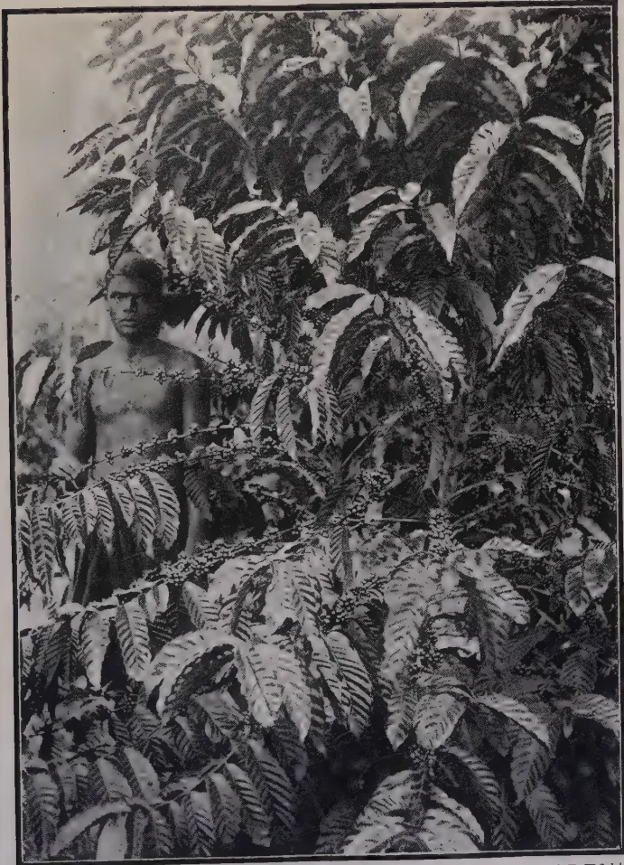
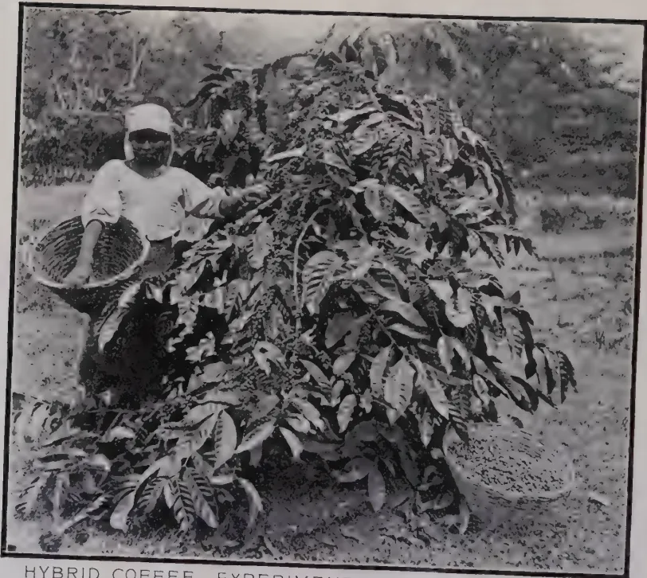

VOL. LI.
PERADENIYA, OCTOBER, 1918.
No. 4.
“Credit is more necessary for the conduct of agriculture than for that of other business because of the peculiar conditions of the industry and the long turnover of the capital invested in it. The fact that the industry persists in any country is a proof that those engaged in it have capital or obtain credit somehow, but the manner in which that credit is obtained will materially affect the degree of prosperity which the industry enjoys. In the comprehensive policies for the re-organization of agriculture, adopted by the continental (European) countries since the third quarter of the nineteenth century in order to secure greater food production, a leading place has always been occupied by the subject of credit. As a result of much enquiry and experiment as to the most effective means for providing facilities, especially to medium and small farmers, for obtaining working capital, practically every European country came to two conclusions:—
(1) Firstly, it was determined that the peculiar conditions of agricultural production failed to obtain due consideration under modern banking systems. Banks had developed into undertakings mainly adopted to serve home and foreign manufacturing industry and commerce, so that, by virtue of their organization and legitimate business objects, they inevitably tended to constitute inefficient agencies for financing farmers. The credit requirements of the latter had, however, enormously grown, whereas their facilities had become more restricted.
(2) Secondly, it was determined that the only efficient method of providing agriculture with credit facilities similar to those enjoyed by industry and commerce was the establishment of a co-operative credit system. In default of collateral or banking security, credit necessarily was primarily dependent upon confidence born of knowledge of the credit-seeker, combined with facilities for the credit-giver to supervise; its fundamental basis was, in fact, local knowledge before and after transactions. . . . .”
194[OCTOBER, 1918.Such is the opening paragraph on Agricultural Credit in the Report of the Agricultural Policy Sub-Committee of the Reconstruction Committee of Great Britain and Ireland. It can only serve as a stimulus to those who feel that if any material agricultural improvement is to be effected in the villages of Ceylon, co-operative credit must play a most important part.
Elsewhere in this number is reproduced the Report on Co-operative Credit Societies in Ceylon during 1917-18. This report shows that solid, if slow, progress is being made, but at the same time it clearly demonstrates that further workers in the Co-operative Credit movement are necessary.
Many instances of the beneficial results of Co-operative Credit Societies within the Colony can be quoted, but the majority of the Societies are limited in regard to capital and are in need of support, assistance and guidance from the agricultural and social leaders of the people.
The primary conditions to be observed in regard to an agricultural borrower from Co-operative Credit Societies are as follows:—(a) That he is possessed of a good character, is a good worker and a good cultivator; (b) that he is business-like in his agriculture and (c) that the loan is given for a specific purpose and is temporary in character. The primary conditions in regard to the lending society are:—(a) That it knows its members and has intimate and continuous knowledge of their character and work; (b) that it is prepared to assist the member in his work and (c) that it is able to watch the application of the loan and to make sure that it is used for the purpose for which it was granted.
With these guiding principles clearly before Co-operative Credit Societies and their members, there is no reason why progress should not be as satisfactory as in India. The first few years' work is naturally difficult but the co-operative credit movement has now been working in Ceylon sufficiently long, and is giving evidence of the possibilities of its work to warrant the belief that more rapid progress might be expected.
More capital is required, greater co-operation is necessary and a careful and close study by those interested in the food-production of the Colony and in the welfare of its agricultural masses is essential.
OCTOBER, 1918.]195From the Philippine College of Agriculture, there appears under the above heading, a contribution by J. A. COCANNONER to the PHILIPPINE JOURNAL OF SCIENCE (VOL. XIII. SEC. A. No. 2, MARCH 1918), which is of much interest to growers of food stuffs in Ceylon.
The most valuable work previous to this done by the College of Agriculture was that on soya beans. A legume that was considered impossible of culture was developed through careful study and selection to become one of the most productive legumes grown on the College Farm.
COCANNONER'S experiments were designed first, to test several varieties of the Kidney Bean (Phaseolus vulgaris), the Lima Bean (Phaseolus lunatus) and the Garden Pea (Pisum salivum) which are renamed as "leaders" by American market gardeners, in order to find out whether a profitable yield can be secured from them under Philippine conditions and what season or seasons of the year were best suited to their production; second, to secure seed for pedigree selection work with the view of establishing the most promising of the varieties in the Philippines. The varieties tried were as follows:—
Kidney Beans.—Black Valentine, Long Yellow Six Weeks, Mexican Pink, Longfellow, Extra Early Refugee, Canadian Wonder, French Mohawk, Dwarf Horticultural, Extra Early Red Valentine, Hodson's Green Pod, Tepary, Michigan White Wax, Prolific Black Wax, Southern Creaseback, Kentucky Wonder, Lady Washington, Southern Prolific.
Lima Beans.—Henderson's Bush Lima, Challenger Lima, King of the Garden.
Peas.—Advance, Stratagem, Motts Excelsior, Senator, Little Gem, Blue Bantam, British Wonder, Yorkshire, Extra Early, Laxtonia, Alaska, Prosperity, American Wonder, Little Marvel, Laxton, Alderman, Abundance, Telephone, Champion of England, Large White Marrowfat, Horford's Market Garden.
For purposes of planting the year was divided into three seasons, i.e., the cool season from October to January; the dry season from February to part of May; the wet season from the middle of May to September.
The Kidney Beans were found to give a satisfactory yield from newly introduced seed if planted during the cool season. These seeds lose their
196[OCTOBER, 1918.vitality readily in the tropics, consequently all seeds should be thoroughly dried and sealed air-tight in order to preserve their vitality. Kidney Beans even grown under irrigation during the hot season is not worth while. They are as a rule not suited to the rainy season. Either bacterial disease or the tendency to shoot the pods, owing to excessive moisture, renders the crop too small to be economical. The worst enemy of the Kidney Bean is the bean maggot. The varieties of Kidney Bean that were most promising were in order of merit "Tepary," "Southern Prolific," "Long Yellow Six Weeks" and "Extra Early Red Valentine." They took about months to 2 months to give serviceable pods (the longer period by the better varieties).
The Lima Beans are worthy of note. At the first planting they were less promising than the Kidney Beans; the acclimatised seed continued to give better results even so that the variety known as "Henderson's Bush Lima" took first place on an average of 5 plantings.
The Limas were found to be entirely resistant to the bean maggot, a point worthy of note here in Ceylon wherever this pest is likely to become very serious. It was found that the Limas require much less care than do the Kidney Beans. They will yield fairly well during the rainy season, they may be made to produce economical crops during the dry season with slight irrigation, but it is in the cool season that they must be planted for best results.
Growers of foodstuffs should note then that this planting season commencing October-November should be the best for planting Lima Beans in Ceylon. They should be planted extensively under field conditions and the results watched with care. A "bush" variety is to be preferred as requiring much less care and expense. If a "pole" variety is tried they should be trained on trellises about four feet each way. These varieties have a tendency to take on the perennial habit.
The Peas are not suited either to the dry season or to the wet season. They are little affected by insects or fungus diseases if grown during the cool season. The tall late varieties are more suited to tropical conditions than the early dwarf varieties. The garden pea is more easily injured by the tropical heat than are the majority of garden beans. Wherever the rains are heavy, the peas will be found to be a complete failure. During the cool season the average of two plantings show that five varieties are more or less promising. These are the "Stratagem," the "Senator," "Horsford's Market Garden," the "Large White Marrowfat," and the "Alderman." The peas, it must be remembered, do not give anything like the yields given by the beans, and it is left for future plant-breeding experiments to develop high yielding strains suitable for tropical conditions.
H. L. VAN B. OCTOBER, 1918.]197(Continued from p. 90)
W. B. KERLE,
Assistant Inspector of Agriculture, and Experimentalist, Hawkesbury
Agricultural College.
Few crops, if any, have such a wide range of usefulness as the peanut. The entire plant can be profitably made use of; the vines as stock food, the nut as food for man and beast, the husks as adulterants in food preparations, and the roots for augmenting the soil's supply of nitrogen.
The majority of people are apt to regard the roasted nut as the sole product derived from the plant, but this is only one of a great number of uses which have developed in recent years.
For a satisfactory discussion, it becomes necessary to study its uses under two main headings, (1) its uses on the farm, and (2) its prepared products.
The peanut is of primary importance to the farmer as a soil-renovating and soil-enriching crop. This is due to the power it possesses of assimilating atmospheric nitrogen and storing it in nodules on its rootlets, through the agency of certain microscopic organisms (rhizobia). For this purpose it is of almost equal value, and will thrive under harsher soil and climatic conditions than the cowpea. The vines, when properly cured, make a nutritious palatable hay, useful for all classes of stock, but being rich in nitrogenous matter they are better fed combined with concentrates rich in carbohydrates, as maize. The digestible co-efficients of peanut vine hay are: protein, 63; fat, 66; carbohydrates (nitrogen-free extract) 70; fibre, 52.
The tops in their green state make excellent forage for pigs and cattle, but must be fed, at the outset, in limited quantities. A profitable method of cultivation is to plant peanut seed between the rows of maize, just prior to the tasselling stage. After the maize is harvested, cattle are turned in to eat the maize stalks and the peanut tops, and later pigs to unearth the nuts that will have formed.
From 1 to 3 tons of hay may be obtained. The tops may be mown, cocked, and thoroughly dried before storing, the nuts being then harvested for market or stored for feeding purposes. The entire plant may be cured and fed to cattle, either whole or in a chaffed condition. As such it practically forms a balanced ration for a milch cow; and has proved superior to ration composed of ordinary hay and maize as a feed for horses.
The value of peanuts for feeding pigs has been clearly demonstrated by repeated experiments in the United States of America. At the Alabama Experiment Station,* GRAY, DUGGAR, and RIDGEWAY found that 1 acre of good peanuts was equal to about 3,200 lb. of maize in feeding value, and that pigs getting 1'6 lb. of maize daily and foraged in a peanut field gained 0'9 lb., as
* FARMERS' BULLETIN, 431, U. S. Dep. of Agric.
198[OCTOBER, 1918.against 0.7 lb. gained when fed on 3.8 lb. maize only. DUGGAR also found* that hogs turned into a peanut field gained 100 lb. from 190 lb. of maize and 140 lb. of peanuts together with the vines. He also reports various trials in which peanuts returned from 225 lb. to 432 lb. of pork per acre when fed with skim-milk, maize, etc. The same station also made the following comparison of food stuffs required, with pasturage, to produce 1 lb. of pork:—
| Peanuts, | 1.77 lb. | Sweet potatoes, | 3.13 lb. |
| Cowpeas, | 3.07 " | Sorghum, | 3.70 " |
At the Arkansas Experiment Station† BENNET found that:—
| 1 acre of peanuts gave a gain of 1,252 lb. |
| 1 " maize " " " 436 " |
At Georgia Experiment Station‡ FLINT reported that:—
| 274 lb. maize and shorts produced 56 lb. of grain |
| 254 " 449 lb. skim-milk produced 76 lb. of grain. |
| 160 " 1/6th acre Spanish peanuts produced 71 lb. of grain. |
The peanuts were pulled daily and fed to the pigs; equally as good results would have been obtained from foraging the crop.
The foregoing results of carefully conducted experiments are convincing evidences of the suitability of the peanut for pork production. The pork of the pigs fattened solely on peanuts is, however, soft and oily, and the lard is of so low a melting point as to be solid only in the coldest weather. This can be remedied by feeding in moderation, and finishing off on maize. That it is not a serious defect is proved by the fact that the famous Smithfield hams and bacons come from pigs fed partially on peanuts. The most economical method of feeding to pigs is to cut the tops for hay, and hurdle off the field in sections, turning in the hogs for a limited time each day to harvest the nuts. This will decrease wastage and ensure a minimum of injury to the physical condition of the soil. Peanut cake or meal is a valuable concentrated food for pigs, especially when fed in combination with foods, containing less oil and nitrogenous constituents.
Taking into consideration the ease with which the crop can be grown, the readiness with which pigs harvest and fatten on it, the excellent forage derived from the vines, and the improvement to the soil, the possibilities of the peanuts for pig-raising are apparent.
Pigs, cattle, horses, and sheep relish and thrive on peanuts, and the crop has proved of considerable value for fattening poultry for market.
Practically the only trade done in Australia is in roasted peanuts, but in other countries the nuts have a wide range of utility. Only those of the highest grade produced by the cleaning and grading factories are used for roasting purposes. Roasting plants have already been established in New South Wales, where the nuts imported by Chinese merchants from Oriental
* FARMERS' BULLETIN, 93, 122, U. S. Dep. of Agric.
† " " 54, " "
" " 87, " "
OCTOBER, 1918.]199countries are treated. The roasting process is a simple one, dependent mainly on a uniform, even heating of the pods. For roasting small quantities DR. SMITH, an American farmer on the Murrumbidge Irrigation Area* suggests the use of a carbide drum with handles attached to the ends; it should be filled with peanuts to two-thirds of its capacity, and made to revolve slowly over a trench fire. Roasting will occupy fifteen to thirty minutes, and is complete when the nuts have turned slightly brown in colour. A drum of this kind will roast 30-35 lb. of peanuts at one time.
There is a good market in New South Wales for first grade roasting peanuts, which, if marketed in a satisfactory manner, would be purchased by merchants in preference to importing from the East. Samples of the nuts grown at various experiment farms in the State were submitted to several of the leading Chinese merchants and importers of Sydney, who stated their willingness to give 3d. per lb. for the Valencia and 2½d. per lb. for Spanish, which, taking into consideration the heavier weight of the latter variety is equivalent to practically the same price per bushel. Even at these prices which were given some years ago and which are decidedly low, there is a good margin of profit for the grower.
There is an extensive trade done in the United States in salted and blanched nuts. Salted nuts are prepared by shelling, roasting, and salting high grade nuts. Blanched nuts are employed largely for table use, and in the manufacture of peanut butter and high grade confectionery. They are prepared by first roasting in the shell, with the object of retaining the nutty flavour. After the cooling nuts are shelled, and then fanned to remove the shells and husks; they then go to the blanching machines, which remove all the skins from the kernels and drop them on to screens, where the broken nuts are separated. They are then hand-picked, all the small and unblanched nuts being removed, leaving the finished product with which we are familiar.
The confectionery trade absorbs large quantities of nuts in the manufacture of candies, brittle "burnt almonds," nut chocolate, etc., or in conjunction with other nuts, popcorn, puffed rice, etc. They are also used largely in the preparation of vegetarian "meats."
A product of the peanut which is in increasing demand is "peanut butter." It is manufactured by preparing the nuts as when blanching, and reducing to a pulp by special grinding machinery. Salting can be done in the process, but it is frequently left to the consumer to salt to his requirements. It is sold in tightly-sealed bottles or tins, and forms a very pleasant article of diet. There are in the United States numerous factories equipped with special machinery capable of turning out many tons of peanut butter per day. The Spanish variety is greatly in demand for making this much-relished preparation.
Peanut oil is one of the leading food products of the world. France uses 16,000,000 gallons of edible oil, and soap manufacturers utilise 23,000,000 gallons of low grade oil, per annum. Germany, under pre-war conditions used 6,000,000 gallons of high grade oil. The United States of America imports, above her own manufactures, 1,500,000 gallons, the major
* IRRIGATION RECORD 1914. 200[OCTOBER, 1918.]portion of which is used in the manufacture of oleomargarine. Oil mills have been established in all the principal peanut-growing districts of the States. The machinery used in cotton oil mills can, with but slight modifications and adjustments, also be used for expressing peanut oil. The oil of highest grade is produced by thoroughly cleaning, shelling and de-germing the nuts before pressing. The first cold pressure yields up to 20 per cent. of fine oil; a second cold pressure may next be given, or the nuts may be slightly warmed and then pressed, giving from 7 to 10 per cent. of a less valuable oil. The residue, tempered by heat, may be subjected to three or four pressings before all the oil is finally extracted. The oil resulting from the first cold pressure is almost equal to high grade olive oil. It is sweet, palatable and clear, and may be used for every purpose to which olive oil is applied; in fact, large quantities of peanut oil are substituted, unknown to the consumers, for olive oil.
The oil obtained from the second and third pressings requires to be refined before it is suitable for culinary purposes, or for the manufacture of oleomargarine. As the unrefined product, it is largely utilized for soap-making. The screenings from peanut butter manufacture, together with the by-products of the shelling factories, are utilized in the production of low grade oil.
Frequently the lower grade nuts are pressed without shelling, yielding a satisfactory oil for soap-making and a meal suitable for stock feed, containing 28 per cent. protein, 8 per cent. fat, and 40 per cent. carbohydrates.
One ton of nuts so pressed will yield 1,350 lb. of meal. Besides its extensive use for culinary purposes and for the manufacture of oleomargarine and soap, peanut oil is largely used in European countries as a lubricant and lighting fluid.
One ton of peanuts will yield 80 gallons of oil and 750 lb. of meal, although some factories will only press 60 to 65 gallons per ton, their equipment being insufficient to get the higher results.
A very valuable by-product of peanut oil manufacture is peanut meal or cake, which is the residue that remains after the oil has been expressed. By analysis this has been shown to be one of the richest of known foods, particularly as regards the amount of crude protein it contains (see Table II, page 89 of the August issue). Results of numerous experiments conducted in various parts of the world have proved it to be an excellent foodstuff for all classes of stock, particularly when fed in combination with other foods rich in carbohydrates. Low-grade peanut meals are made from the waste products of peanut factories. These may consist of broken and undersized nuts, germs, hulls, and husk coverings which when ground form a very palatable meal.
The high nitrogen-content of the germs has a tendency to send by-products rancid, which is the only objection to their use. This, however, can be obviated by not keeping a stock on hand for longer than two months.
Peanut hulls are comparatively rich in food constituents, and are sometimes ground and used as roughage, or for adulterating stock food preparations. They are suitable for bedding down stock, and being rich in fertilising constituents, benefit the soil if distributed on the land with the manure.
—AGRICULTURAL GAZETTE OF N. S. W. VOL. XXIX., Pt. 7.
OCTOBER, 1918.]201BY THE EDITOR,
Queensland Agricultural Journal.
Although several papers on arrowroot-growing and on the manufacture of the commercial starch have from time to time been published in the earlier issues of the QUEENSLAND AGRICULTURAL JOURNAL, yet, as the present-day subscribers are unable to obtain copies of those journals, owing to their being out of print, it is deemed advisable to collate all available information on the industry and present it in pamphlet form to intending arrowroot growers, by many of whom inquiry is being frequently made as to the prospects of the industry in Queensland.
It is now over fifty years since the industry was first established by the late MR. GEORGE GRIMES at Oxley Creek, where he erected the first machinery for manufacturing arrowroot on a commercial scale. As soon as this took place, the writer, who had been growing arrowroot in the same district and manufactured it with most primitive appliances, as will be shown later on, entered more largely into the business of cultivating the plant, and abandoned the manufacture in favour of supplying MR. GRIMES' mill with the raw material, to their mutual benefit.
The bulbs were sold at £2. 10s. per ton, and on the then virgin scrub soils between Oxley Creek and Rocklea (then known as the Rocky Waterholes), and on the Brisbane River, the yield was enormous. Two varieties were grown at that period—the Bermuda or Maranta arundinacea; and the large purple variety, Canna edulis, called in the West Indies "Tous-les-mois." These differ materially from each other both in habit of growth and in size, shape and colour of the bulbs.
The Bermuda plant is diminutive, rarely attaining a greater height than from 3 to 4 feet. The blossom is white, and the tubers, which cluster round the roots, are also white, with a thin shiny skin and bare of rootlets. They adhere to the roots of the plants much in the same manner as potatoes, and are neither very large nor numerous. The starch yielded by the Maranta is of excellent quality, and usually commands a higher price in the English market than that of Canna edulis. How little actual difference there is between the products of the two varieties is indicated by the following analysis, taking the best Bermuda arrowroot at 2s. per lb. and the Queensland arrowroot (Canna edulis) at 3d. per lb.
| Bermuda Arrowroot |
Queensland Arrowroot |
||
|---|---|---|---|
| Moisture | ... | 13.00 to 16.50 | 17.36 |
| Starch | ... | 82.24 | 81.52 |
| Ash | ... | .124 | .142 |
| Proteids | ... | .052 | .078 |
| Fibre | ... | 4.09 to 1.20 | .90 |
The result is, therefore, chemically, about the same, particularly in regard to starch, which is the chief constituent. There is a little more
202[OCTOBER, 1918.moisture in the Canna, and more fibre in the Maranta. Under the microscope, the Canna arrowroot shows a more silky texture, and the grains are slightly coarse.
The reason why Maranta has never become popular in this State is that it does not yield one-quarter the weight of bulbs, nor is the starch content equal to that of Maranta grown elsewhere, besides which the excess of fibre in this variety makes the matter of treatment more difficult.
A remarkable point about the sale of Queensland, or "Australian Arrowroot," as it is called in England, is that it cannot be sold in Great Britain without some qualifying term attached, such as "Queensland" or "Australian arrowroot." How this has come about is rather interesting. When the Drugs and Food Act was passed by the Imperial Parliament, it was specified that "Arrowroot is the product of the plant Maranta arundinacea." That is what Bermuda and Mauritius arrowroots are made from. Manufactured arrowroot from the Canna edulis was then practically unknown in Great Britain. I have shown above what little difference there is between the two. It has actually been stated that Queensland arrowroot is an adulterant! Whereas it is generally conceded that, so far from that, it is preferable as a food to the Bermuda product. The purple variety, which is, as said, exclusively cultivated in Queensland, grows to a great height, often rising to 8 ft. or 9 ft. It has very large, broad, ribbed leaves; and as many as 15 to 20 stalks rise from a single stool, each stalk representing a large bulb. In the flowering season the plant sends up a long, straight spike, from the head of which bursts a beautiful bunch of bright scarlet flowers, having the appearance of those of the common Canna known as "Indian Shot," but far larger. The seeds do not often mature, however, as do those of the Canna family generally. The bulbs from which the arrowroot of commerce is prepared form a compact mass on and near the surface of the soil, and so prolific is the plant that I have dug from a single stool as much as 60 lb. and even 80 lb. weight of bulbs.
It does not follow that because there are, at present, only one or two principal centres of arrowroot manufacture in Queensland, therefore the plant will thrive only in these localities, which are mainly located on the South Coast line, at Pimpama, Coomera, and Ormeau. On the contrary, it grows luxuriantly on all the coast lands—from the Tweed River in the far South to Cooktown in the far North. As to soil, it prefers the rich alluvial scrub lands on river and creek banks, but does very well also on the deep black soils of open country. This refers to the purple variety. The Bermuda plant prefers a more sandy, loamy soil, deep, with no clay subsoil. The writer grew both varieties at Oxley on the newly-cleared scrub land bordering that creek, and found that the Maranta (Bermuda) did not thrive well on rich soil, many plants producing only two or three tubers, 6 or 7 in. long and about 1 in. in diameter. The Purple Canna, on the contrary, grew more luxuriantly, and produced an enormous quantity of bulbs, which found a ready sale at MR. GRIMES' mill, then located on the Brisbane River.
The climate and rainfall in the districts named were exactly suited to the well-being of the plants, and it is worthy of note that no insect or fungoid pests were ever observable either on leaf, stem, or bulbs. It follows that a
OCTOBER, 1918.]203deep, rich, well drained soil and a moderate rainfall are all that is needed to ensure a good crop.
A visit to some of the arrowroot farms serves to show that there is a similarity among them all, both in preparation of the land, planting, after cultivation, and harvesting.
Where planting takes place in newly burnt-off scrub land, the innumerable stumps, of course, occupy so much of the surface as to preclude any ploughing. It then becomes necessary to dig holes with a sharp mattock or hoe which will cut the roots of the felled trees with which the ground is matted. The rows should be about 6 ft. apart with 4 ft. 6 in. between the holes; but owing to the presence of stumps, very little regularity can be observed, and the planter must do the best he can as to distance between the plants.
On opened cleared land, where the plough can be used, the proper distance can be observed. The land, in the latter case, should be thoroughly well ploughed, harrowed, and pulverised. Then shallow drills are drawn with the plough about 6 in. deep, and at the regulation distance of 4 ft. 6 in. apart single small bulbs are dropped and covered by turning a furrow over them on each side.
On very rich new land, the best results have been obtained by placing the rows 8 ft. apart. As the land becomes poorer, the rows may be closer together, but should not be of a less width than 6 ft. I saw a field lately at Pimpama, on what was once my old sugar plantation (Ormeau), in which the rows were 6 ft. apart, yet in the month of April the plants had spread to such an extent that it was difficult to walk between them.
When the plants are above ground, they must be kept clean as in the case of other crops, and by the time they are about 3 ft. high they will want little further cultivation beyond throwing up a furrow against the roots—hilling up, in fact, as with potatoes. From this time forward the heavy foliage will soon have covered the ground, thus effectually preventing the growth of weeds.
The planting season extends from August, after the last frosts, to the end of November and even up to January in some late localities. When full grown, a field of Canna presents a very pretty sight, the broad leaves of dark green giving a fine impression of richness and contrasting vividly with the numerous scarlet blossoms to be seen on the plants.
From six to eight months—the latter term as a rule—bring the crop to maturity, and a little frost is then beneficial by shrivelling up the tops and concentrating the starch in the bulbs. Supposing the crop ready to harvest in July or in the beginning of August, when one or two frosts have touched the plants, the manufacture should be at once begun, and carried on until the end of October. If the work is protracted into the spring months, the bulbs begin to shoot, and the yield of starch is consequently lessened in quantity and deficient in quality.
When the bulbs have come to maturity—that is, in from eight to nine months after planting—and when the plants have, as stated above, had a touch of frost, then is the time to commence the harvest. MR. D. LAHEY, in a paper entitled "When to Harvest Arrowroot," said:—
"A good test for ascertaining when arrowroot is ready for digging is the following:—Observe the outer leaf of the bulb. A triangular slit will be noticed pointing downwards. If the slit appears white, the bulb is still immature, but as soon as it turns purple the crop may be harvested. Arrowroot may be left to stand over for two seasons, as in the case of sugar-cane."
204[OCTOBER, 1918.The latter statement is important, for it has happened in some cases that, when the crop was larger than the available mill power was capable of dealing with, the growers turned their cattle into the field. Had the crop been held over, it might have been possible to get it in during the next season, and thus avoid a great deal of extra labour.
When harvesting, the stalks are first cut down with a hoe cane knife, or reaping hook. The stool is then dug up with a strong mattock or a stout-eyed No. 3 grubbing hoe. A spade or fork is quite useless for the work, as the stool has a strong hold in the ground, in addition to which the bulbs of Canna edulis cling firmly together by the masses of rootlets proceeding from each bulb. When free from the soil, the bulbs must be separated, and all earth adhering to them knocked off. As soon as dug, they must be carted to the mill; therefore, it is well not to take up more than can be operated on each day. Every day's exposure to the weather or to the hot sun has an injurious effect upon the colour of the manufactured starch.
The average return of a good crop is about 30 cwt. of starch, or five to six times the quantity in tons of bulbs. From 12 to 20 tons per acre have been dug from a field in which the plants were set at distances of 5 ft. between the plants in rows 6 ft. apart. It goes without saying that the yield will vary according to soil, locality, season, good or bad cultivation, and proper washing, grinding, and drying appliances; but as a general rule, the yield of starch may be set down at from 15 cwt. to 30 cwt. per acre, although, under most exceptional circumstances, it is recorded that as much as 4 tons of finished arrowroot per acre have been obtained. I cannot, however, vouch for this statement.
The machinery employed in the manufacture of arrowroot in the very early days of agriculture in Queensland was as primitive as that used by the ancient Britons for pounding grain or by the Australian natives for crushing the seeds of nardoo. The first growers made use of a grater made by punching holes with a nail in a piece of kerosene tin. Gradually, improvement crept in, until a hand machine was constructed by the writer which much accelerated the work, but was still only a makeshift.
Since that time modern machinery has been introduced capable of turning out from 10 cwt. to 30 cwt. of commercial arrowroot per day. Such a plant may be thus described:—
Motive power, a 6 to 10 h. p. engine, root washers, carriers, grinding mills, cylinders, elevators, rotary sieves, shaker sieves (two), chute, patent circuitous trough (for which MR. LAHEY holds a patent), agitators and sieves, centrifugals for draining, tables, and calico for drying.
The whole of the work, after the tubers have been raised to the highest point of the building, is effected by gravitation. The tubers (or roots as they are erroneously called), as they come from the field, are tipped from the trays on the carrier, whence they are automatically carried to the tuber-washing trough. Running through the centre of this is a spindle with diagonally inserted pegs of sufficient length to clear the bottom and side of the trough by about 1 in. Here the bulbs are thoroughly cleaned of all dirt, stones, etc., and they are then passed on to the grater, which is a large, wooden cylinder covered with perforated iron, burred, on to which the bulbs drop from a hopper. A stream of water pours upon this continuously from above, and the pulp and starch held in suspension pass on to a shaking sieve. From this the farina and water pass to a second sieve, the pulp being ejected on the other side of the first sieve. On leaving this sieve, which is perforated with very fine holes, the water and farina are shot into a large trough, where the latter soon settles at the bottom.
OCTOBER, 1918.]205When a sufficient quantity for the day's work has passed into the trough, the farina is allowed to settle firmly, and the water is gradually drawn off through a series of taps till the farina is left in a solid mass at the bottom.
Now, it will be seen that the surface of this mass is covered with a dirty slime. This is washed off and is put aside for pig food, as a certain amount of farina is removed with it during the washing. Water is then again admitted, the farina is stirred up with it, and it then passes through a fine silk sieve into the next trough, leaving the first one clear for the following day's work. After further skimming and washing, the now almost clean product passes into the circular trough which runs right round the building. In this there is an agitator, something like the paddle-wheel of a steamer, which revolves and thoroughly stirs up the whole mass.
When the agitation has proceeded for some time, the farina is once more allowed to settle, and a final superficial washing of the mass takes place.
This process does away with all hand-washing—in fact, from the time when the bulbs are emptied from the trays on the carrier, they are not handled in any way, except to cut off any stalks which may not have been cut off close enough in the field.
The farina is finally dug from the circular trough, and is passed through a centrifugal machine to extract all possible moisture. It is then taken to the drying ground, where it is exposed to the sun on frames covered with calico. Should a shower of rain fall upon it while it is drying, the rainwater has the singular effect of turning the farina brown, when it has to be re-washed. Hence the weather must be carefully watched during the drying process. After being thoroughly dried, the farina, which is now brilliantly white, is bagged and put up in various forms for export.
Most mills are constructed on the same plan, and the process is practically the same in all.
It may be interesting here to show how the earliest arrowroot growers manufactured the farina.
The bulbs were well washed, and all roots pared off. Then they were grated by hand on a grater made of part of a kerosene tin punched full of holes, whose ragged edges served to reduce the bulbs to pulp. This was done over a tub of water. Two or three other tubs covered with calico were provided, and the pulp and farina were separated by working the hand round and round on the calico, water being poured over the mass. The pulp having been thus separated, was sent to the pigs, and the farina at the bottom of the first tub was well stirred and the water poured off, when the farina passed to the next tub, and so on for three or four washings, when the clean farina was dried on calico frames. This process was necessarily a very slow one, but, as arrowroot was then worth 1s. per lb., it was very remunerative.
The writer improved upon this by constructing the primitive machine here depicted.
A log about 2 ft. in diameter and 8 ft. long was hollowed out by axe and adze to form a trough. At the head of this trough was fixed a framework much like the wooden stand of a grindstone. A large wheel was then cut from a sound log 3 ft. in diameter and 1 ft. wide. Tin plates, turned into graters (which required frequent renewal) by punching holes in them with a nail, were next nailed on to the edge of the wheel, to which a wooden axle and handle were fitted. The wheel, when placed in position, turned in the water with which the trough was filled. Above the wheel was a wooden hopper from which the bulbs dropped on to the wheel. This wheel was easily turned by one man, and the grated bulbs dropped into the water in the shape of pulp and farina. The latter gradually settled at the bottom,
206[OCTOBER, 1918.and the pulp was removed by a narrow-tined fork and by hand. After a short interval to allow the farina to settle down firmly, pegs were drawn from the lower end of the trough and the water drawn off. The farina was then dug out of the bottom of the trough, and was passed through calico stretched over a tub. By hand-stirring and at the same time pouring on clean water, the whole of the farina passed through the calico into the tub, leaving the gross impurities behind. This operation was repeated three or four times until the arrowroot was perfectly white and free from any foreign substance.
After the last washing, it was placed on shallow trays or calico frames and dried in the sun. The arrowroot at that time (1863) was readily sold at 1s. per lb., and a small quantity sent to London brought 1s. 6d. per lb.
Such a machine to-day would only prove a source of loss to the grower.
With the present up-to-date arrowroot mills, the whole process—from the digging of the bulbs to the drying of the prepared farina—occupies about twenty-four hours.
It will easily be understood, from what I have written about the process of manufacture, that it is of little use trying to manufacture arrowroot unless there is a plentiful supply of good clean water.
One of the principal growers and manufacturers at Tataala, near Beenleigh, estimated that, when working his mill three days a week, and producing about half a ton of arrowroot a day, 24,000 gallons of water were used every eight hours. The refuse fibre and pulp are carted back to the fields and utilised as manure.
Another grower stated that arrowroot gave a monetary return about equal to that from maize and potatoes; but it was a surer crop. It would stand flooding that would kill potatoes, and dry weather would not affect it so adversely as it would corn. Both these troubles I have experienced, and can quite bear out his statement.
The yield of commercial farina may be set down at from 1 to even 2 tons per acre, and the price ranges from £16 to £20 per ton. Late market reports give the price in London at from 7d. to 8d.* per lb., Bermuda being quoted in October, 1911, at 1s. 7d. per lb.
A considerable item of expense in the manufacture is the cost of firewood, seeing that it takes a cord of wood for each ton of tubers. The tubers contain from 20 to 30 per cent. of starch or 400 to 600 lb. of starch per ton of tubers.
Such a mill as I have described would cost according to capacity, from £500 to £1,200, exclusive of about £200 for the necessary drying and storage sheds. Where cornflour is made, the cost of a mill may run to over £4,000, owing to additional and more complicated machinery for producing this product although the process is much akin to the manufacture of arrowroot. Briefly, the corn (maize) is first steeped in hot water, and is then ground between large millstones, after which it passes through sieves into huge vats, where it settles, and the gluten remains on the surface. This gluten cannot be washed off without the aid of chemicals.
In the principal arrowroot-growing districts above mentioned there were in 1916-17, 324 acres planted, mostly in small areas. According to the Government Statistician's annual report published in 1917, the yield of bulbs amounted to 3,506 tons—an average of 10.82 tons per acre—from 3,203 tons of which were produced 663,779 lb. of commercial arrowroot.—QUEENSLAND AGRIC. JOURNAL, JULY, 1918.
* Prices here quoted are probably higher since 1912.
OCTOBER, 1918.]207(Continued from p. 152)
There are several species of Phaseolus that yield diminutive beans of great value as food-stuffs in the countries where they are grown, but which are little known in European commerce except as feeding-stuffs for cattle. These include the "adzuki" or "azuki" bean (P. angularis, W. F. WIGHT) of Japan and China; "mung" (P. radiatus, Linn.), "urd" (P. Mungo, Linn.), and "moth" (P. aconitifolius, Jacq.) of India; and the "rice" bean (P. calcaratus, Roxb.) of India and the Far East.
In Japan and Chosen (Korea) large areas are cropped with the adzuki or azuki bean (P. angularis), and it is also grown to a less extent in Manchuria and China, but it does not appear to be grown on a large scale in India, although samples identical in appearance with this species have been received by the Imperial Institute under the name of P. calcaratus from the United Provinces, India. The plant is an annual, from 1 to ft. high, usually of bushy habit, but some varieties have branches that are slightly twining at the tips. In general appearance the plant resembles that of the Kidney bean (P. vulgaris); the leaves are trifoliate and hairy, and the flowers are bright yellow. The pods are thin and slender, from to 5 in. in length, each containing from 8 to 10 seeds. There are numerous varieties that differ from each other mainly in the time required to attain maturity and in the colour of the ripe pods and seeds. In colour the seeds vary from straw-yellow to grey; grey speckled with black; red to brown, black and blue-black. The most common form is the red-seeded variety. In all cases the hilum (eye) is white and is placed towards the lower end of the seed. The seeds, which are about the size of small peas, are slightly longer than broad, nearly cylindrical, being only slightly compressed on the sides, with blunt (truncate) ends.
Adzuki beans are used on a large scale as human food in Japan usually in the form of a meal or paste. Owing to their texture, these beans are easily ground into flour or formed into a paste by being treated in either the dry or soaked condition. In both cases the husks are separated by passing the ground product through sieves, the paste form being afterwards dried for use. The bean meal obtained by grinding is not only used as a pulse, but is also made into sweetmeats of various kinds. The whole beans are also "popped" like maize, and are sometimes candied. The absence of a beany flavour enables this bean to be utilised in many ways that would not be possible in the case of varieties possessing the characteristic taste of beans.
Introduced into the United States, the adzuki bean has been grown on an experimental scale with favourable results. At the Arlington Farm, Virginia, some sixty distinct varieties of this species have been tested, the
208[OCTOBER, 1918.yields obtained varying from 12.0 to 28.6 bushels per acre in 1912 (BULLETIN No. 119, 1914, BUR. OF PLANT INDUST., U. S. DEPT. AGRIC.).
During the year 1916 adzuki beans have been received on the London market and samples have been received by the Imperial Institute in collections representing beans imported for human consumption. The large demand for these beans is said to be due to the need of a substitute for the peas and beans usually imported. In view of the high yield of seed which is obtained from the plant and the value of the beans as a food-stuff for human consumption, the cultivation of this variety in suitable localities within the Empire appears to be desirable. The soil and climatic conditions favourable to the growth of French or kidney beans are said to suit its requirements, so that in localities where these beans succeed the cultivation of the adzuki bean might be attempted with possibilities of success.
The seeds of the three closely allied species—"mung" (Phaseolus radiatus, Linn.), "urd" (P. Mungo, Linn.) and "moth" (P. aconitifolius, Jacq.)—are largely grown in India for human consumption. The nomenclature of the first two of these species is somewhat confused, the botanical names being frequently reversed. The mung bean is commonly spoken of as green gram owing to the fact that the form usually met with produces green or yellowish-green seeds, whilst the term black gram is used for urd, which commonly produces black seeds, although both species include varieties that yield seeds of various colours.
The mung bean is grown throughout India, but almost invariably as a subordinate crop. The plant is erect or sub-erect and much branched, with stems from 1 to 4 ft. in length, more or less twining at the tips, and furnished with trifoliolate leaves resembling those of the dwarf French bean. The flowers are pale yellow, and are produced in crowded clusters of from 10 to 25 flowers. The pods are cylindrical, and contain from 6 to 15 seeds per pod; the seeds are small, almost round, being but slightly longer than broad, with a small but prominent white hilum (eye) placed in the middle. In colour the seeds vary from dull green (var. typica) to yellow, dark brown or black, and in the case of the last three varieties the testa, or seed coat, is covered with wavy striations, plainly seen under slight magnification.
The urd bean plant is similar in appearance to mung, but the pods are shorter and are produced in less dense clusters, usually in twos or threes at the ends of the peduncles and radiating horizontally. The seeds are slightly longer than those of mung, and vary in colour from dull green to brown and black.
The moth bean plant is readily distinguished from the other small-seeded species by its slender, trailing, hairy stems furnished with trifoliolate leaves, the leaflets of which are cut into slender lobes so that they resemble the leaves of aconites (Aconitum). The pods, 1 in. to in. in length, are produced in clusters of 3 to 4 pods at the ends of slender peduncles, and contain from 4 to 8 seeds each; the seeds are small, longer than broad, straw-coloured to greenish-brown occasionally speckled with black. In India the moth bean is cultivated chiefly in the United Provinces and Assam, often on poor land that can be made to produce no other crop. It is frequently grown
OCTOBER, 1918.]209associated with bajra, the bulrush millet. When grown alone, it receives but little cultivation, yet it gives a larger yield of seed than mung or urd, namely about 560 lb. per acre. The beans are eaten by the poorer classes but are considered inferior to mung and urd, their chief use being as a cattle food.
The rice bean (P. calcaratus, Roxb.) is found wild in India, and also cultivated throughout the tropical zone from the Himalayas to Ceylon and to a limited extent in Japan, China, Mauritius, Java and the Philippines. It may be grown at a higher elevation than most other pulses, being found at an altitude of 6,500 ft. in the N.-W. Province and of 5,000 ft. in the Khasia Hills.
The plant is an erect or sub-erect annual, from 1 ft. to 2 ft. 6 in. high, with twining branches several feet in length furnished with trifoliate leaves resembling those of the dwarf French bean. The young vegetative parts are clothed with short, fine white hairs that are deciduous. The flowers are yellow, produced in short racemes composed of from 5 to 20 flowers; the pods are slender, nearly cylindrical, 3 to 4 in. long, curved, with a pointed tip, and each pod contains from 8 to 12 seeds. According to the variety and state of the majority the seeds vary in colour from straw-yellow to greenish yellow, brown, maroon or black. The prominent white hilum (eye) raised above the surface and crinkled at the margin, readily distinguishes this species from the other small-seeded kinds. Several distinct forms occur in a wild state, and these have received the following varietal names P. c. major, Prain, a large-flowered variety native to India and Burma; P. c. glaber, Prain, a glabrous plant originally from Mauritius, but also found in Northern India; P. c. rumbaiya, Prain, a form having short, erect or spreading stems, native to the Khasia hills of Assam; P. c. gracilis, Prain, with slender stems and narrow leaflets.
Although grown to a considerable extent in eastern countries, the beans produced by this species are not so valuable as adzuki beans. In Burma it is cultivated at all elevations, chiefly as a cold-weather crop. It is largely grown on the silt of islands and on river-banks, but is also cultivated away from rivers.
The beans are largely consumed by the natives in Burma in combination with, or instead of, rice. In districts where there is a surplus, the beans are bought up by brokers and sent to Rangoon for distribution to consuming areas. These beans are sometimes known locally in Burma as "Lobia," a name applied also to the seeds of Vigna Catjang, the cow pea. (See p. 534).
There is no doubt an import of the small beans above mentioned into the United Kingdom, but it is not possible to state to what extent they are imported, as they are not separately detailed in the Trade Returns, but presumably they are included in the table shown on p. 541 amongst gram or with peas.
The common broad bean, or "Windsor" bean, is the seed of Vicia Faba, Linn. (syn. Faba vulgaris, Moench.), an annual plant 2 to 4 ft. high, with erect 4-angled stems furnished with glaucous green leaves composed of from 3 to 7 leaflets that are ovate-elliptic in shape with entire margins. The flowers are produced in short racemes of from 2 to 6 flowers in the axils of
210[OCTOBER, 1918:the leaves ; they are pure white, with a black patch in the centre of each of the wing petals. The pods are either broad and flattened, containing 3 to 5 seeds, or long and more or less cylindrical in shape, with a variable number of seeds in each.
The broad, or " Windsor," bean is commonly grown as a garden crop for the sake of its young seeds, which are eaten as a green vegetable. Several forms of this species, with longer pods and smaller seeds, are grown as field crops, the seeds being known in commerce under the general term horse beans.
The principal varieties in cultivation are the following :—
(1) The Heligoland bean.—A small roundish seed of a chocolate colour ; 1,000 seeds weigh about 12 oz.
(2) The English horse bean or tick bean.—Oval plump seeds of a brown colour ; 1,000 seeds weigh about 18 oz.
(3) The Scotch horse bean.—Seeds similar to the preceding, but larger and flatter ; 1,000 seeds weigh about 27 oz.
(4) Winter field bean.—Small oval seeds of a greyish-green colour with a jet black hilum or " eye ;" 1,000 seeds weigh about 12 to 13 oz.
(5) Early Mazagan bean.—Flat whitish beans larger than any of the preceding ; 1,000 seeds weigh about 30 oz.
(6) Long-pod bean.—Flat seeds with a roundish outline produced in pendulous flattened pods ; 1,000 seeds weigh about 55 oz.
(7) Broad, or " Windsor " bean.—Large flattened seeds with an irregular rounded outline and grey-green colour ; 1,000 seeds weigh from 100 to 110 oz. There are numerous nurserymen's varieties that differ chiefly in habit of growth or period of ripening.
The field bean is a common crop in Europe, and is largely grown for export in Egypt, Turkey and China.
In the United Kingdom the eastern counties are the most important producing area, and there is also a considerable acreage under this crop in Scotland. According to the British Agricultural returns, the area under this crop in the United Kingdom in 1914, an average year, was 291,730 acres, and the yield 1,120,078 quarters. Since the war the area devoted to beans has been reduced, amounting to 242,695 acres in 1916, when the yield was 892,572 quarters ; in 1917 the yield was only about half that of 1916.
The field bean succeeds best on a stiff clay or heavy loam soil, and is frequently grown as a rotation crop with wheat as an alternative to clover. With the exception of the winter field bean, which, as its name implies, can withstand the winter cold in this country, beans are usually sown in the spring. The winter variety is sown in October, or as soon as the land can be ploughed after a cereal crop has been harvested. The methods of cultivation vary in different localities but the usual practice is to plough the land in the autumn, and in spring to throw it into ridges. Farmyard manure is then spread in the hollow of the ridges at the rate of from 8 to 10 tons per acre, and the seed is sown by hand dibbling in the dung. After sowing, the ridges are split, by which operation both manure and seeds are covered
OCTOBER, 1918.]211with soil. Later on the ridges are broken down by harrowing so as to facilitate the emergence of the seedlings, and as soon as the young plants appear above the ground the soil is cultivated by hand-hoeing or horse-hoeing. Machine drilling in rows from 20 to 22 in. apart is now generally practised, the soil being brought to a fine tilth before drilling takes place.
In Scotland beans are frequently broadcasted and grown as a mixed crop with oats.
Field beans are ready for harvesting as soon as the leaflets have fallen from the leaf-stalk and the lower pods begin to blacken. The method of harvesting formerly in vogue was to pull up the plants by hand or cut them with a sickle, but the modern self-binder can now be employed for reaping this crop. The pods are liable to open, with consequent loss of seed, if the crop is handled during bright weather; it is therefore advisable to choose a dull day or an early hour before the dew has disappeared for harvesting this crop.
Field beans are well-known and valued food-stuff for animals, and are especially valued for horses on hard work. They are used either whole, split or ground into meal. In the latter form they are commonly fed to cows in full milk.
Large quantities of these beans are imported into the United Kingdom for consumption in addition to those produced locally. The Trade Returns of the United Kingdom do not separately mention this class of bean, but they are included in the following table of "Beans, other than haricots," imported into the United Kingdom.
Imports of Beans, Classed in the Trade Returns as "Beans (not fresh) other than Haricot Beans," into the United Kingdom during the period 1911-16.
| 1911. | 1912. | 1913. | 1914. | 1915. | 1916. | ||
|---|---|---|---|---|---|---|---|
| Total quantity | cwt. | 1,029,101 | 1,256,741 | 1,540,405 | 1,441,559 | 1,142,810 | 1,110,605 |
| Total Value | £ | 375,333 | 470,847 | 568,189 | 502,928 | 534,139 | 687,119 |
| From | Cwt. | Cwt. | Cwt. | Cwt. | Cwt. | Cwt. | Cwt. |
| Egypt | ... | 30,550 | 69,280 | 2,220 | 1,140 | 377,660 | 333,460 |
| British India | ... | 168,730 | 72,880 | 43,121 | 32,650 | 190,270 | 126,410 |
| New Zealand | ... | 6,480 | 9,120 | 15,880 | 4,650 | 2,700 | 1,570 |
| Other British countries | ... | 2,417 | 7,196 | 5,690 | 12,137 | 3,190 | 7,260 |
| Total British countries | ... | 208,177 | 158,476 | 66,911 | 50,577 | 573,820 | 468,700 |
| Russia* | ... | 1,810 | 740 | 67,635 | 8,890 | — | — |
| Germany | ... | 14,050 | 19,270 | 49,450 | 19,750 | — | — |
| Netherlands | ... | 21,994 | 1,810 | 10,180 | 12,580 | 1,810 | 370 |
| Italy | ... | 5,030 | 1,570 | 6,880 | 290 | 1,720 | 1,420 |
| Austria-Hungary | ... | 1,660 | 14,490 | 3,670 | 130 | — | — |
| Turkey | ... | 199,440 | 32,080 | 11,960 | 28,960 | — | — |
| Morocco | ... | 161,390 | 54,480 | — | 900 | 53,640 | 17,920 |
| China* | ... | 406,520 | 903,830 | 1,291,980 | 1,254,684 | 459,370 | 591,800 |
| Other foreign countries | ... | 9,030 | 68,995 | 31,739 | 64,798 | 52,450 | 30,395 |
| Total foreign countries | ... | 820,924 | 1,098,265 | 1,473,494 | 1,390,982 | 568,990 | 641,905 |
*Exclusive of soy beans which are returned separately
212[OCTOBER, 1918.It will be seen from the above table that before the outbreak of war China, Germany and Turkey supplied a large proportion of the imports.
In 1915, however, more than half the total import was obtained from British countries, British India and Egypt having largely increased their usual contributions.
The following tables show the quantities of beans other than haricot beans exported and re-exported from the United Kingdom.
Exports of Beans (not fresh), other than Haricot Beans, from the United Kingdom (Produce of the United Kingdom).
| 1911. | 1912. | 1913. | 1914. | 1915. | 1916. | ||
|---|---|---|---|---|---|---|---|
| Total quantity | cwt. | 283,056 | 242,008 | 287,664 | 178,635 | 4,663 | 3,893 |
| Total value | £ | 108,668 | 103,856 | 117,572 | 68,783 | 4,595 | 4,973 |
| To | Cwt. | Cwt. | Cwt. | Cwt. | Cwt. | Cwt. |
|---|---|---|---|---|---|---|
| British countries | 1,219 | 1,075 | 737 | 997 | 1,862 | 1,462 |
| Belgium | 206,620 | 154,010 | 204,160 | 155,548 | — | — |
| France | 45,254 | 55,845 | 79,415 | 19,765 | 267 | 387 |
| Netherlands | 24,135 | 25,141 | 552 | 901 | 561 | 234 |
| Other foreign countries | 5,828 | 5,937 | 2,800 | 1,424 | 1,973 | 1,810 |
Re-export of Beans (not fresh), other than Haricot Beans, from the United Kingdom.
| 1911. | 1912. | 1913. | 1914. | 1915. | 1916. | ||
|---|---|---|---|---|---|---|---|
| Total quantity | cwt. | 72,374 | 83,061 | 71,153 | 176,787 | 100,567 | 6,354 |
| Total value | £ | 49,451 | 61,495 | 34,018 | 66,987 | 42,885 | 6,881 |
| To | Cwt. | Cwt. | Cwt. | Cwt. | Cwt. | Cwt. |
|---|---|---|---|---|---|---|
| Canada | 3,379 | 11,363 | 2,926 | 827 | 50 | 2,066 |
| Australia | 2,207 | 2,441 | 242 | 21 | — | — |
| Other British countries | 1,873 | 3,478 | 3,737 | 4,752 | 838 | 1,900 |
| United States | 30,978 | 40,175 | 11,424 | — | — | 2,039 |
| Belgium | 6,714 | 1,447 | 819 | — | — | — |
| Portugal | 2 | 3,276 | 2,565 | 15,131 | 400 | — |
| Italy | 19 | 2 | 64 | 21,039 | — | — |
| Cuba | 600 | 1,990 | 480 | — | — | — |
| Germany | 20,402 | 811 | 1,465 | 459 | — | — |
| Netherlands | 2,787 | 5,790 | 8,596 | 84,626 | 86,311 | — |
| Canary Islands | 1,679 | 7,955 | 31,873 | 43,464 | 9,592 | — |
| Other foreign countries | 1,734 | 4,333 | 6,962 | 6,468 | 3,376 | 349 |
SUMMARY.
| 1911. | 1912. | 1913. | 1914. | 1915. | 1916. | |
|---|---|---|---|---|---|---|
| To | Cwt. | Cwt. | Cwt. | Cwt. | Cwt. | Cwt. |
| Imports | 1,029,101 | 1,256,741 | 1,540,405 | 1,441,559 | 1,142,810 | 1,110,605 |
| Exports | 283,056 | 242,008 | 287,664 | 178,635 | 4,663 | 3,893 |
| Re-exports | 72,374 | 83,061 | 71,153 | 176,787 | 100,567 | 6,354 |
The following table, taken mainly from the Agricultural Statistics (Foreign and Colonial) for 1912, issued by the Board of Agriculture and Fisheries in 1912, indicates the importance of the bean crop, including haricots, broad beans and other beans, in some of the chief producing countries of the world:—
| Area. | Production. | |||||
|---|---|---|---|---|---|---|
| 1910 Acres. |
1911 Acres. |
1912 Acres. |
1910 Quarters. |
1911 Quarters. |
1912 Quarters. |
|
| United Kingdom ... | 271,881 | 313,516 | 287,410 ... | 1,093,365 | 967,692 | 973,006 |
| Australia1 ... | 42,239 | 49,237 | 40,382 ... | 116,483 | 101,313 | 105,954 |
| Burma2 ... | 215,000 | 223,000 | 241,000 ... | 79,489 | 66,422 | 72,955 |
| Canada ... | 53,034 | 60,630 | 59,800 ... | 147,225 | 144,450 | 130,100 |
| Egypt ... | 563,061 | 538,532 | — ... | — | — | — |
| New Zealand ... | 1,789 | — | — ... | 9,019 | — | — |
| Algeria ... | 88,312 | 92,272 | — ... | 536,078 | 528,675 | — |
| Argentina ... | 64,2203 | 65,764 | — ... | — | — | — |
| Austria4 ... | 625,592 | 625,730 | 636,494 ... | 5,176,820 | 4,746,771 | 4,907,515 |
| Belgium ... | 22,8303 | 21,237 | 20,098 ... | 78,5423 | 82,693 | 64,177 |
| Bulgaria5 ... | 139,190 | 180,123 | — ... | 211,239 | 252,620 | — |
| Chile ... | 89,355 | 72,196 | 90,301 ... | 201,225 | 170,013 | 208,582 |
| Denmark4 ... | — | — | — ... | 66,997 | 63,211 | 66,778 |
| France5 ... | 621,946 | 650,845 | 631,258 ... | 1,377,027 | 1,165,186 | 1,376,595 |
| Germany ... | 1,511,2429 | — | — ... | — | — | — |
| Hungary ... | 2,021,483 | 2,029,802 | — ... | 933,199 | 1,216,949 | — |
| Italy ... | 1,503,835 | 1,509,343 | 1,475,825 ... | 2,340,602 | 2,373,157 | 1,846,768 |
| Japan7 ... | 345,634 | 345,683 | — ... | 598,794 | 592,533 | — |
| Luxemburg ... | 4,281 | 3,285 | 2,791 ... | 11,232 | 6,347 | 6,553 |
| Mexico ... | — | — | — ... | 65,0228 | 62,1578 | 177,9028 |
| Netherlands ... | 65,571 | 63,289 | — ... | 218,509 | 201,609 | — |
| Rumania9 ... | 99,568 | 126,543 | 149,326 ... | 157,167 | 200,657 | 219,903 |
| Russia in Europe ... | 167,883 | 157,337 | 165,961 ... | 293,542 | 324,885 | 345,615 |
| " " Asia ... | 22,842 | 26,365 | 27,089 ... | 32,362 | 36,810 | 46,897 |
| " " (Finland)1 ... | — | — | — ... | 26,963 | — | — |
| Serbia ... | 21,52610 | 24,00011 | 30,00011 ... | 137,09210 | 181,62511 | 186,37512 |
| Spain ... | 1,094,190 | 1,113,735 | 1,119,510 ... | 1,504,190 | 1,628,962 | 1,316,434 |
| Sweden ... | 10,110 | 9,566 | — ... | 26,170 | 18,630 | 21,072 |
| United States11 ... | 784,0003 | — | — ... | 1,393,0003 | — | — |
1. Including peas.
2. Red and white Phaseolus lunatus beans; the figures in the 1910 columns are the normal matured area and production.
3. Previous year's figures.
4. Including other pulses.
5. Including peas, haricots and lentils.
6. Census figures for 1900, including peas and vetches.
7. Adzuki beans only.
8. For years 1905, 1906 and 1907 respectively.
9. Beans, peas, haricots and lentils. In addition, 362,572 quarters of haricots were produced with the maize crop in 1910, 429,251 quarters in 1911 and 427,414 quarters in 1912.
10. Figures for 1908.
11. Figures taken from the Yearbook of the UNITED STATES DEPARTMENT OF AGRICULTURE, 1914.
214[OCTOBER, 1918.PEAS.Peas form a well-known class of pulse, largely produced in the temperate countries of the world, particularly in Russia and Canada.
The following table, taken from Agricultural Statistics (Foreign and Colonial) for 1912, issued by the Board of Agriculture and Fisheries, indicates the area and production of peas in the chief countries concerned with this crop:—
| Area. | Production. | |||||
|---|---|---|---|---|---|---|
| 1910. Acres. |
1911. Acres. |
1912. Acres. |
1910. Quarters. |
1911. Quarters. |
1912. Quarters. |
|
| United Kingdom | 168,958 | 168,204 | 202,598 | 501,451 | 463,197 | 499,562 |
| Canada | 386,100 | 288,810 | 250,820 | 817,262 | 567,012 | 471,687 |
| New Zealand | 14,829 | 19,946 | — | 63,950 | 80,731 | — |
| Algeria | 22,571 | 25,394 | — | 36,691 | 39,163 | — |
| Belgium | 12,3381 | 12,293 | 12,301 | 35,0611 | 52,138 | 51,105 |
| Chile | 5,444 | 4,404 | 4,572 | 5,540 | 4,124 | 4,745 |
| Hungary | 29,936 | 29,188 | — | 51,914 | 51,830 | — |
| Luxemburg | 2,149 | 1,855 | 1,677 | 4,299 | 3,814 | 3,025 |
| Mexico2 | — | — | — | 186,7123 | 318,5193 | 230,5423 |
| Netherlands | 64,568 | 55,234 | — | 152,668 | 222,691 | — |
| Russia in Europe | 2,504,771 | 2,468,699 | 2,511,915 | 3,502,455 | 3,208,200 | 4,003,492 |
| „ Asia | 78,829 | 88,892 | 84,991 | 94,020 | 86,408 | 85,537 |
| Spain2 | 511,722 | 539,761 | 521,368 | 529,639 | 531,914 | 445,325 |
| Sweden | 43,037 | 43,801 | — | 144,692 | 127,222 | — |
| United States | 1,302,0004 | — | — | 888,7504 | — | — |
Two species are recognised as being the sources of the many cultivated forms of peas; these are Pisum arvense, Linn., the grey, or field pea, and P. sativum, Linn., the garden pea. The grey, or field pea is a dwarf plant with tendrilled leaves composed of 2 to 6 ovate entire leaflets, and possessing leafy, persistent stipules. The flowers are either solitary or in racemes of from 2 to 3 flowers; they are usually purple in colour, but some forms are pinkish-white. The pods contain from 4 to 8 rounded smooth or wrinkled seeds varying in colour, according to the particular variety, from yellowish or greyish green to deep purplish-brown, sometimes marbled or speckled. The chief varieties of field pea cultivated are Common Grey, Warwick Grey, Hastings Grey, Partridge pea, Maple pea and Dun pea. All the varieties are yellow-fleshed, and are therefore suitable for making pea-flour or for split peas after being husked. The husks removed from split peas are utilised in the manufacture of compound cattle foods.
The garden pea differs from the field pea in having white flowers and a less hardy constitution. Many of the varieties have tall stems, and others, known as “sugar” peas, have no membranous lining to the pods, so that the latter can be used as a green vegetable (pois mange tout). The seeds may be
Figures for the following countries are included under beans in the table on p. 213, Australia, Bulgaria, France, Germany, Rumania, Russia (Finland).
1. Previous year's figures. 2. Mainly chick peas.
3. Figures for years 1905, 1906 and 1907 respectively.
4. Census figures for 1909, from the Yearbook of the UNITED STATES DEPARTMENT OF AGRICULTURE, 1914.
OCTOBER, 1918.]215either green or yellow and smooth or wrinkled. Numerous varieties are in cultivation, and their number is constantly being added to by seedsmen. They are largely grown as garden crops on account of the young green peas, which form an important vegetable, but certain varieties are grown as field crops for the production of dried peas. For the last-named purpose green-seeded kinds are chiefly grown. These are hand-picked, and, after being carefully dried, are put up into small packages for domestic purposes. After being soaked in water and cooked in the ordinary way they serve as a substitute for fresh green peas. Large quantities are also preserved by heat-sterilising processes (tinned peas).
To supplement the home-grown supplies of dried green peas, large quantities have in recent years been imported from Japan and smaller quantities from Chile.
The imports from New Zealand consist largely of garden varieties which are used for sowing in this country.
Peas differ from field beans in requiring a light calcareous soil, and they are therefore grown as an alternative leguminous crop to beans where a heavy soil is not available. Good crops may sometimes be procured from a gravelly or sandy soil provided lime is present and the season is favourable.
The cultivation of peas does not present any difficulties if suitable land is available. The land should be clean and in a good state of cultivation. It is usually prepared just before sowing, which in this country takes place in February or March. The seed is sown at the rate of about 3 bushels per acre in rows about 1 ft. apart. After the seedlings appear above ground, the land is kept well worked either by hand-hoeing or by horse-hoeing until the stems of the plants sufficiently cover the ground to choke weeds, and prevent excessive drying.
Harvesting usually takes place in from 6 to 8 weeks after the flowering period, or as soon as the pods begin to change in colour from green to brown. The cutting is usually done by hand by means of a peahook, the stems being left in rough heaps or bundles on the ground to dry for a few days before stacking. As the pods readily burst, it is advisable to handle the crop on a dull day, otherwise loss of seed is liable to occur. Peas do not keep well stacked, and early thrashing is therefore usually carried out.--IMP. INST. BULL. Vol. XV, No. 4.
(To be continued).
216[OCTOBER, 1918.The use of liquid manure is of special importance in gardens, especially the section devoted to vegetable-growing, and every gardener should be taught how to prepare and apply it. A natural and very effective liquid manure consists of the drainings of cattle sheds, stables, dung heaps, etc. Such drainings should however be diluted, according to strength, before application.
Liquid manure has special advantages for garden crops, its stimulating effect on which being generally very noticeable. The fertilizing ingredients of a manure can generally be absorbed by growing plants more readily in a liquid than in a solid form. Manure in a solid state can be applied to the soil before the seeds are sown or seedlings planted, but subsequently it cannot be dug into the soil without some interference with the roots of the growing crop; even in the case of well-established plants. It is partly on this account that liquid manure is so valuable.
For pot plants and flower beds I have found liquid manure has very beneficial effects on the plants and flowers. The solid manure originally applied to the soil gets in time exhausted by the growing plant and it is at this stage that more nourishment is required, the soil becoming poor and incapable of maintaining the plant in a healthy and vigorous state. Liquid manure, which is easily applied, comes to the rescue and remedies the defect.
In the cultivation of Celery, Rhubarb, Cucumber, Tomatoes, Balsam, Gloxinias, Begonias, Salvias, etc., liquid manure has been used with excellent results. In short, all flower-plants, vegetable crops of a quick-growing nature and pot-plants of all kinds require treatment with liquid manure to ensure the best results being obtained.
There are two methods of preparing liquid manure :—(1) Take a bucket of liquid drainings from the manure pit and mix it with twice its quantity of water and apply on the following morning, after allowing the sediment to settle down. During wet weather the dung heap drainings may possibly be applied with safety without further diluting. (2) Put a bucketful of fresh cattle dung in a jute hessian bag and place it in a large tub containing six buckets of water, and stir well with a stick two or three times a day, for about four days. Let it settle, and, when clear, dilute once more with six buckets of water; there will then be no coarse sediment to soil the foliage or blossoms, the efficacy remaining unimpaired. It is a very safe method to water the plant with manure water and pure water alternately.
K. J. ALEX. SYLVA.
OCTOBER, 1918.]217JOHN S. BURD,
Chemist, California Agricultural Experiment Station.
The evidence presented in the early part of this paper indicates that there is always present in soils, in a condition permitting ready solution in water, enough of the more important chemical elements to supply the immediate needs of crops. It is hardly conceivable that substances in this condition do not represent a potentially available supply. Inasmuch as this supply never entirely disappears, even in the case of nitrates, it would seem that there is no such thing as a lack of available nutrients in soils which are at all productive, but that a plant may still be unable to satisfy its requirements if the concentration with reference to the individual ions falls below certain minima. It is furthermore highly probable that the optimum concentration varies with every soil in accordance with the physico-chemical system present in the soil solution. Slight differences in the character of this system may modify in a marked degree the power of a plant to absorb solutes, so that even if we were able to obtain and analyze the true soil solution, we would not necessarily be able to say that any figure for individual ions constituted inadequacy.
Attention has been called to certain characters as reflecting the composition of the soil and its power to produce crops. Inasmuch as these involve three variables to which it is impossible to assign definite relative weights, an exact correlation of productivity with the figures presented is not to be expected. Nevertheless, the correlation between the general magnitudes of the figures presented and the crop-producing powers of the soils studied is sufficiently close to justify the belief that they give expression to the relative power of soils to produce crops, although they are not an exact measure of that power.
We believe that the evidence obtained is sufficient to justify the hope that we may be able to predict, within reasonable limits, the relative crop-producing powers of soils by comparing their figures expressing these characters with similar data derived from soils whose productive power is known. Before such a method is generally applicable, however, it will be necessary to study the behaviour of many soils with numerous type crops. This is quite feasible if the various characters can be developed without the enormous number of analytical determinations involved in the present experiments. We believe that this can be accomplished by substituting for our figures, representing the sums of the basic ions, figures obtained for total soluble salts, or preferably direct determinations of the concentration of the soil solution by some such method as that presented in the preceding paper. It is quite certain that we shall never have a precise measure of soil fertility until soils are studied concurrently in the cropped and the uncropped condition and under strict control. The reasons are obvious in that data from the soil under crop cannot indicate its latent power, and data from the uncropped soil taken alone do not take into account the fact that the solutes in the cropped soils cannot be reduced below certain minimum and probably variable limits.
In the present paper we have dealt entirely with chemical criteria because they afford the most convenient expression of the results of the activities of the soil, chemical, physical, and biological.....—JOURNAL OF AGRIC. RESEARCH, VOL. XII. No. 6.
218[OCTOBER, 1918.DEPARTMENT OF AGRICULTURE, CEYLON, LEAFLET No. 10.
These notes have been written with the object of meeting the demand there is at the present time for practical information regarding the cultivation of the robusta types of coffee that have been under experiment for the past few years. Robusta coffee is a native of the Congo, and is now grown to a large extent in Java, while the Canephora type is rapidly extending in Madagascar.
The following varieties of the robusta type are at present under cultivation at the Experiment Stations at Pêradeniya and Anuradhapura: Robusta, Canephora, Uganda, and a Hybrid raised from seed obtained from MESSRS. LEOBENF BROS., Paris. Seedlings raised from named Java strains have also recently been raised and will shortly be planted out. Robusta coffee has also given good crops at the Balangoda Demonstration Garden of the Agricultural Society, and is being planted at the Kegalla Demonstration Garden. Coffee robusta prefers damp localities, and does not like wind. It should be shaded and protected from wind. C. canephora prefers higher altitudes than C. robusta, and appears to be able to withstand drought better. C. uganda is recommended in Java for the poorer soils and for old worn-out land.
Coffee prefers a deep soil. The best soil is a well-drained loamy one, but the plant is hardy, and will grow in any ordinary good soil, which is reasonably rich in humus. Heavy clays are generally unsuitable, and the proportion of clay must, in no case, be such as to prevent satisfactory drainage.
The most suitable climate in Ceylon for robusta coffees is between elevations varying from 1,000 to 5,000 feet above sea level. Experiments in Colombo and at Anuradhapura, however, show that coffee may be grown at low elevations. Coffee is capable of resisting drought to a certain extent, but it prefers an abundant and regular rainfall. An extremely hot climate is not favourable to the coffee plant, and it does not thrive in situations exposed to the wind.
The site chosen for the seed bed should be on a slight incline so as to afford natural drainage. It should occupy a sheltered position, and the soil should be good. This soil should be worked until a fine tilth is secured. The seed beds must not be too wide, feet is sufficient. All roots, stones, etc., should be carefully removed, and in most cases an application of well-decomposed cattle manure is beneficial. Ripe seed from healthy bearing

A black and white photograph showing a man standing amidst a dense thicket of coffee plants. The man is shirtless and positioned in the center-left of the frame, looking directly at the camera. The coffee plants are very lush, with large, dark, serrated leaves that fill most of the background and foreground. The lighting is somewhat diffused, creating a soft, natural look. The entire photograph is enclosed within a thin black rectangular border.COFFEE ROBUSTA, EXPERIMENT STATION, PERADENIYA.

HYBRID COFFEE, EXPERIMENT STATION, PERADENIYA.
OCTOBER, 1918.]219trees should be selected for planting. In order to estimate the necessary quantity of plants required, it is useful to know that a pound of robusta coffee contains approximately 360 berries, or, say, 600 seeds. Making an allowance of 10 per cent. for failures, 540 seedlings should be raised from one pound of coffee berries. These should be sufficient to plant out acres at a distance of 10 feet by 10 feet.
A pound of the Hybrid coffee contains approximately 395 berries, or, say, 650 seeds, equal to 585 seedlings per pound of coffee, sufficient to plant out acres at a distance of 10 feet by 10 feet.
To prepare seeds for sowing, the pulp should be removed and the seeds rubbed in ashes. They should then be placed in the ground—flat side downwards—6 inches apart at a depth of about half an inch below the surface. The finger, or a small stick, may be used for this purpose. Seed sown 6 inches apart enables the plants to be kept in the nurseries for longer periods.
The seed beds after sowing should be covered with half an inch of pure sand. They must be kept free from weeds, and be watered every other day in dry weather. An excessive degree of moisture must be avoided. The seeds will germinate in about four to six weeks, and the seedlings will be ready to transplant in from six to nine months from date of sowing of seed.
Robusta coffees can be transplanted at almost any age. Stumps from an overgrown nursery at the Experiment Station were ruthlessly pulled up and planted in 1913. Every single plant grew and made healthy vigorous plants.
When it is not intended to plant coffee on a large scale, plants may be raised in supply baskets or bamboo pots. This method not only facilitates transport, but also enables the plants, with their roots intact, to be planted out in almost any weather with comparative safety. It is well worth the extra cost involved.
In preparing bamboo pots see that there is a good drainage hole at the base. Fill the pot one-third full of (1) small pieces of broken brick or tile; (2) coarse gravel; (3) a layer of coconut fibre to prevent the soil clogging the drainage.
The remaining two-thirds of the pot should be filled with a mixture of well-decomposed cattle manure, leaf mould, alluvial or loamy soil, with an inch of fine sand on top. The pots or baskets should at first be kept in a shady and damp place. Afterwards they may be placed in more exposed situations to harden off the plants.
The same procedure may be used for supply baskets, except that the broken brick or tile is not necessary. Supply baskets are procurable from any basket merchant at from Rs. 10 to Rs. 15 per 1,000.
Forest land rich in humus is best suited for a new plantation, inasmuch as the land will not require manuring for some time. After felling and burning the jungle, the land should be thoroughly cleared of stumps, roots and other obstructions, a stump extractor being used for this purpose. If the land be steep, contour drains should be dug; and if stones are available, a system of short contour walls with openings at proper intervals for drainage
220[OCTOBER, 1918.]purposes should be laid out. Hedges of such plants as Tephrosia candida or Leucaena glauca planted above these contour walls will be useful, as they assist in intercepting the soil that is washed down and in helping to form satisfactory terraces.
After the land has been cleared it should be lined, short pegs being placed at each place that is to be occupied by a plant. To facilitate work a base line should first be made. There are different methods of lining. An easy method is to get a number of half-inch ropes and to stretch them over the land at the required distances apart. A similar rope held by a cooly at either end is then stretched across all the other ropes at right angles if planting is to be done "on the square," and at 45 degrees if the quincunx method is being adopted. Where this superimposed rope touches the others, pegs are put in, and the operation is repeated at the distance at which it is desired to plant. Manilla rope is better than jute or coir for this purpose, as it stretches but little.
Around each peg is drawn a circle of the size required for the holes. Holes should be at least 1 foot wide and feet deep. It is preferable for them to be dug about a month before planting and left exposed. Before planting, fill the holes with good surface soil and press down gently while filling. Never fill a hole to the top and then press down. The lower soil later on sinks and a vacant space is left, which endangers the life of the plant. In average soils an average task for a man is 100 holes, but in hard gravelly, or clayey soil 60-75 holes is a fair average for a day's work.
The distances at which robusta coffees should be grown will vary according to the position and texture of the land. The most common distance of planting is 6 by 6 feet, but observations of well-developed trees at the Experiment Station show that 8 by 8 feet or even 10 by 10 feet, are to be advocated. On poor soil, and also on steep hillsides, smaller distances may be adopted.
As a catch crop among the rubber, coffee should be planted between the rows of rubber trees at 8 feet apart, and should be at least 6 feet from the rubber rows.
Interplanted among coconuts, which are 30 by 30 feet, coffee may be 7 feet apart and 8 feet from the coconut plants.
Rainy weather, either at the commencement of the north-east or of the south-west monsoon, is the best for planting. An opening should be made with an alavangu or stick in the centre of the hole sufficiently deep and broad to admit the roots of the plant. The plant should be placed into the hole thus made with its roots straight down, and care should be taken to see that the nursery level of the plant is maintained. The tap root should not be allowed to become bent, twisted, or broken. The lateral roots should be spread out as much as possible if they have not been cut off. Some planters prefer to cut off these lateral roots, while others prefer to leave them and plant them out as far as possible in their nursery condition. Work the soil around the plant and press it around the stem so firmly that the plant cannot be moved by a gentle pull.
OCTOBER, 1918.]221When plants are raised in bamboos, each bamboo pot is split by a sharp blow on either side with a pruning knife. Lift off the halves of the bamboo to separate them from the soil surrounding the plant. Then place the plant, soil, and split bamboo into the hole made. Remove the two halves of the bamboo and press the soil firmly around the plant.
After planting, mulch around the plants with any green material near at hand for about three or four months.
In Ceylon in former years coffee was cultivated without any shade, but in Java, South India, etc., the custom now is to shade it to some extent. Coffee grown under light shade renders it less liable to the leaf disease. The experimental plantations at Peradeniya have illustrated in a striking manner the value of light shade for coffee, and it is considered that the robusta types of coffee can be profitably grown over large areas in Ceylon if sufficient attention is paid to the question of shade. The shade trees employed at Peradeniya are Leucaena glauca, Erythrina lithosperma (Dadap), and Gliricidia maculata. All these are leguminous, and can be confidently recommended. Leucaena glauca is considered to be the most suitable of the three.
Leucaena glauca is a shade tree much employed in Java. It possesses advantages of rapid growth and not too dense foliage. It is hardy, does not grow too large, and withstands wind. It is best planted by seed, two or three seeds after treatment being sown 8 to 10 feet apart in rows preferably six months before the coffee. Cuttings do not thrive. There are 6,330 fresh seeds or 9,850 sun-dried seeds to the pound. The seed should be covered with boiling water and allowed to soak for 12 hours before sowing, the water being allowed to cool.
The seedlings should be thinned to one plant at each hole as they increase in height, side branches should be lopped, and the tops cut across twice a year, the green material being mulched round the coffee trees in gradually-increasing rings.
Erythrina lithosperma (Rata-erabadu).—Thornless Dadap: This grows well in Ceylon, and is much used upon tea estates. It has been proved to be of great value as a source of organic matter. It can be raised from seed, stumps, or cuttings, and except at high elevations, rapidly makes a strong tree. Stumps or cuttings should be 6 feet to 8 feet in length and 2 inches in diameter, and should be planted in prepared holes. The stumps should be placed at least 16 inches deep in the ground, and as soon after cutting as possible. Stumps taken straight from the trees and planted invariably give the best results. When the plants grow, they should be topped at 10 to 15 feet, and then lopped as often as necessary, usually once in two months. The leafy branches should be mulched around the coffee plants, leaving a clear space of 1 foot around the plants.
Gliricidia maculata.—This tree does well from sea level to 2,500 feet, and is well suited for districts that have several months of dry weather. It is raised from seed, but as a result of experiment it has been found that the plant may be propagated readily from cuttings. By setting out cuttings 8 to 10 feet in length and about 2 inches in diameter 6 to 8 feet apart a suitable amount of shade for a young coffee plantation can soon be established.
222[OCTOBER, 1918.The tree needs topping to make it spread properly, and material is thus obtained which is useful for mulching round the coffee plants.
Topping.—Between the second and third year the coffee bushes should have reached a height of about 5 to 6 feet. They should at this stage be topped. This operation consists in cutting off the top of the tree to a height of 4 to 5 feet. This is done to prevent the tree from attaining a great height and thereby facilitating picking. Topping also increases the spread and the fruitfulness of the lower branches. Only hard brown wood should be cut in topping. If green wood is cut the top will die back, and several suckers will be produced.
Pruning.—Proper pruning of coffee trees is very important, and all suckers must be removed. A well-formed coffee tree should have a straight central stem, from which side branches called "primaries" are given off. These primaries give off other side branches called "secondaries" which may also branch again. The primary branches should be left, but all the secondaries should be removed to a distance of 6 inches from the main stem, so as to allow a clear space round the stem for the free circulation of air and for the entry of light. On the primary branches at each node the secondary branches are usually given off in pairs, one on each side of the branch. Take off one branch at each node alternatively, so that at one node a branch is left projecting to the left and at the other to the right, and so on. Always cut off one of the top pairs of primaries, so as to prevent any splitting of the stem, on the side most exposed to the wind; but no other primaries should be cut back, except in the case of disease.
Suckering.—Suckers are the erect shoots that spring out along the stems. When the plants are about a year old, the weeders or a small party of searchers should go over the fields monthly to break off suckers and any extra or unnecessary shoots that point towards the stem or across the tree. If the suckers are tough, i.e., have brown wood, it would be best to remove them with a sharp knife quite close up to the main stem, and flush with it, otherwise they would grow again.
Care of a Young Plantation.—Coffee should be kept absolutely clean weeded; round the plant hand weeding is best. A good digging or forking of the ground in the second year is beneficial.
At least once a year the soil round the trees should be supplied with manure, leaf-mould, or compost. This should not be heaped up close around the trees, but spread in a thin layer at some distance from them and then well forked in. Care must be taken not to disturb the roots of the plant. The pulp of the berries after decay makes an excellent manure. Cattle manure and leaves are good; mana grass both buried and mulched on the surface has been found very good. Mulching with loppings from decayed trees also result in increased crops. Applications of lime are to be recommended, and a useful mixture may be made up of the following:—
| 5 oz. bones | } | Applied to each tree. |
| 8 oz. poonac | ||
| 8 oz. jungle or ravine soil or well-decomposed cattle manure |
Night soil mixed with earth has also been found to be effective.
OCTOBER, 1918.]223While the trees are young, and before they begin to bear, catch crops of cassava, sweet potato, dhall, chillie, etc., may be grown between the coffee plants. They should not be planted too near the coffee, and if heavy crops are reaped, it is advisable to make subsequent applications of manure.
Plants about twelve months old begin to show flower buds or "spikes." These early flowers rarely develop into berries, but a small crop may be collected at 18 to 24 months after planting. From thence onwards the tree continues to bear for many years, if kept pruned and carefully attended to. The plant flowers during the whole of the year. Ripe berries remain on the branches for about a month, so that a monthly picking is necessary.
The yields of coffees vary according to soil, climate, and cultivation, but they average from 4 to 12 cwt. to the acre. A pound per tree on an average would be a very good return, but in favourable situations and under proper cultivation some trees will yield much more.
The Hybrid coffee appears to be more prolific at the Peradeniya Experiment Station than the robusta. Trees of the Hybrid coffee planted 8 by 8 feet in 1903 with Leucaena glauca as shade have given the following yields:—
| Year. | Pounds of Berries per Acre. |
Year. | Pounds of Berries per Acre. |
|---|---|---|---|
| 1914 | ... 2,919 | 1916 | ... 2,410* |
| 1915 | ... 3,432 | 1917 | ... 2,495 |
The berries of the Hybrid coffee are small, and it takes an average of 5 lb. of fresh berries to give 1 lb. of dry coffee.
Robusta coffee of the same age is not available on the Experiment Station for comparison of yields, but a small plantation of this variety made in 1910 yielded in 1917 at the rate of 996 lb. of berries per acre, convertible into dry coffee at the rate of 3½ lb. of berries for 1 lb. of dry coffee.
The berries of robusta coffees are small. When the crop is picked, it has to be pulped to remove the outer coats of the fruits, and then the berries have to be washed. Fermentation for 12 to 24 hours after pulping is recommended for them; after washing an even-coloured coffee is obtained. Drying should be carried out as rapidly as possible at a high temperature, the berries being turned frequently during drying. If a high-grade quality is desired, kiln drying is essential, and this method of drying has been almost universally adopted throughout Java. With kiln-dried coffees the silver skin separates more readily, and this grade commands relatively higher prices than the naturally dried product. Well-dried robusta coffee has a regular bluish colour.
The four chief enemies of the coffee plant are: (1) Hemeleia vastatrix, a parasitic fungus on the leaves; (2) "Die-back" (Colletotrichum incarnatum, Zimm.), when the end of the branch turns black or dark brown and ultimately
* Two-thirds of the bushes were coppiced in 1915.
224[OCTOBER, 1918.dries up ; (3) Green Bug (Coccus viridis, Gr.) on young stems and foliage ; (4) the Coffee Borer (Zeuzera coffea, Neit.), the caterpillar which tunnels the coffee branches, carefully hollowing them out.
(1) Leaf Disease.—Coffea robusta is affected to a very slight extent by this disease, but it is capable of resisting the attacks. The leaves rarely fall, and the trees continue to flourish and fruit. Trees planted without shade suffer more than those planted under light shade. With good cultivation and with proper shade the damage done by this disease to the Robusta types of coffee is negligible. Bordeaux mixture may be used as fungicide for this disease if desired, and the following method of preparation recommended by the Botanist and Mycologist of the Department of Agriculture has been found to give good results at Peradeniya :—“ Take 1 lb. of copper sulphate, wrap it up in a piece of jute hessian, and suspend it in a tub of water over night. This must be a wooden tub, as the copper sulphate attacks iron vessels, and also renders the mixture worthless. When the copper sulphate is dissolved, or before, if convenient, water is added to make up 8 gallons. Next take 1 lb. of freshly burnt quicklime and slake it gradually in a bucket, adding water until it forms a paste, after which water is added to make up 2 gallons. Pour this milk of lime into the tub containing the copper sulphate, stirring the mixture well all the time. The mixture must be kept thoroughly agitated while it is being applied. It may be applied by means of a knapsack sprayer or a syringe.”
(2) Die-back.—The affected part should be cut off and burnt, and the branches sprayed with Bordeaux mixture. If the diseased portions are allowed to remain, the disease travels down the branch, which it may eventually kill.
(3) Green Bug.—This pest can be kept in check by introducing the fungus Cephalosporium lecanii, by taking leaves which have infected scales on them and pinning them upon branches infected with scales that are not affected; spraying with kerosene emulsion may also be adopted. This insecticide when prepared as follows has given good results at Peradeniya : “ Dissolve lb. of laundry soap or fish oil soap in 1 gallon of boiling water. Add 2 gallons of kerosene to the hot liquid, and immediately churn with the syringe or pump till the mixture becomes creamy ; this is a stock solution. Before using add to this stock 17 gallons of soft or rain water.”
(4) The Coffee Borer.—It commences work in the young twigs, moving on into the stouter branches as it grows. The symptoms of attack are the sudden death of individual branches, and an accumulation of pellets of wood dust below the attacked branches. This pest can be easily kept in check by cutting out and burning the infested branches or destroying them by prodding with a sharp wire.
All requests for seed should be addressed to the Manager, Experiment Station, Peradeniya. Robusta seed is available from October to March at Re 1.50 per lb., and Hybrid throughout the year at the same rate. Requests in the Ratnapura District for Robusta seed may be sent to the Agricultural Instructor, Ratnapura.
H. A. DEUTROM,
Acting Manager, Experiment Stations.
Peradeniya, May 31, 1918.
OCTOBER, 1918.]225Minutes of a meeting of the Committee of Agricultural Experiments held at the Experiment Station, Peradeniya, on 12th September, 1918.
Present:—The Director of Agriculture (Chairman), the Hon'ble the Government Agent, Central Province; the Botanist and Mycologist; the Acting Entomologist; the Government Chemist; the Superintendent, Botanic Gardens, the Chairman, Low Country Products Association and MESSRS. N. K. JARDINE (Entomologist for Tea Tortrix), A. W. BEVEN, C. E. G. PANDITTESEKARA, N. G. CAMPBELL, J. B. COLES, H. D. GARRICK, E. W. KEITH, R. G. COOMBE, M. L. WILKINS, and H. A. DEUTROM (Acting Secretary); and as visitors MESSRS. J. E. P. RAJAPAKSE, H. WILKINSON, A. L. COOPER and L. C. MAUDSLAY.
The Minutes of the previous meeting having been taken as read and confirmed, the Chairman stated that the following members had informed him of their inability to attend the meeting—the Asst. Govt. Agent, Puttalam, the Hon'ble MR. R. HUYSHÉ ELIOT, J. S. PATTERSON, T. Y. WRIGHT, A. J. AUSTIN DICKSON, A. S. LONG-PRICE, LT.-COL. W. G. N. DICKSON, LT.-COL. WM. SINCLAIR and SIR SOLOMON DIAS BANDARANAIKE.
2 The Progress Reports were briefly reviewed by the Chairman who stated that it is proposed to plant up a considerable area of the Dry Zone Experiment Station, Anuradhapura, with Castor, as a temporary crop for raising stocks of seed. The four acres of land cleared for paddy could be planted with Sugar-cane with the next rains and the following year put into paddy. Reference was also made to the planting of tea stumps for the next season and the lopping off of the Dadap-shade in Cacao plots at the Peradeniya Experiment Station.
MR. A. W. BEVEN asked for explanations regarding the coconut-crops at Maha-iluppalama. He further stated that it would be a great pity to abandon the Maha-iluppalama Experiment Station, and suggested steps should be taken to lease it out. He stated that he as yet had not seen any advertisement of the lease of the Station or parts thereof.
The Chairman stated that the Station had been divided up into blocks and leases for these sections had been invited by publication in the Government Gazette.
MESSRS. BEVEN and GARRICK stated that very few people indeed ever saw the Gazette and they thought that the lease of the Station should have been thoroughly advertised.
The Chairman asked whether it was the wish of the Committee that he should recommend that the lease be advertised in the papers and on the Committee unanimously agreeing that such action was necessary, he undertook to communicate with the Controller of Revenue and the Government Agent, North-Central Province, with a view to seeing that such action was taken
226[OCTOBER, 1918.before abandonment was decided upon. MR. COOMBE asked whether any decision had been come to as to the possibility of beginning experiments with tea up-country particularly upon the Uva side of the country.
The Chairman stated that he had visited Hakgala in company with the Chairman of the Planters' Association, the Botanist and Mycologist and the Agricultural Chemist with a view to deciding if land were there available for experimental purposes. Two areas had been closely inspected: one of seven acres was found to be wind-swept, and was not considered suitable: the other was considered to be too irregular for experimental purposes. MR. COOMBE stated that he considered it of considerable importance that experiments should be started if possible at higher elevations. The Chairman agreed that experiments with green manure plants, artificial manures and with varieties of tea were desirable if suitable land could be secured and the cost of the experiments could be reasonable. He assured MR. COOMBE that the matter would not be lost sight of, but that it could not be taken up at the present time.
The Chairman announced that about 200,000 rubber seeds from Heneratgoda Gardens old trees were available for sale at Rs. 5'00 per 1,000, and called for any other suggestions as to means of disposal. It was agreed that they should be advertised.
3. Co-ordination and Extension of Agricultural Services. The Chairman referred to the reply received from the Hon'ble the Colonial Secretary re the Co-ordination and Extension of Agricultural Services of the Colony. This reply had been circulated as the Committee had moved two resolutions strongly supporting the proposals.
MR. COOMBE stated that he for one was not satisfied with the decision of Government. Agriculture had been starved in the past and although he recognised the difficulties of Government at the present time he did not think that the present financial position of the Government could be allowed to prevent the proper organisation of the Agricultural Services. Agriculture was the mainstay of the Colony and he thought that this should be recognised and full and adequate provision made for the technical assistance towards agriculture given by Government.
MR. COLES stated that he wished to associate himself fully with what MR. COOMBE had said and said that agriculture was the only industry of the Colony and should therefore receive every consideration.
MR. BEVEN said he wished to support MR. COOMBE. The proposals which had been submitted to Government had received very close and careful consideration by all classes of agriculturists and were unanimously supported by the agricultural interests of the Colony.
MR. CAMPBELL also supported. After further discussion MR. COOMBE proposed the following resolution seconded by MUDALIYAR A. E. DE S. RAJAPAKSE :—
“That this Committee desires to press for further re-consideration of the proposals for the Co-ordination and Extension of the Agricultural Services of the Colony, and to urge that early attention should be given to this matter.”
4. Inspecting force for Plant Pests and Diseases. The Chairman stated that Government had agreed to the proposals put forward. He had proposed
OCTOBER, 1918.]227endeavouring to train three inspectors this year in the laboratories at Peradeniya and at the Experiment Station. If Government now decides that the proposals which form part of the suggestions for the extension of the Agricultural services cannot be proceeded with it was difficult to decide what should be done in regard to the proposals that had met with approval in regard to Plant Pest Inspectors. He was most desirous of making a start as he appreciated the urgent necessity for these inspectors as urged by the Committee, but it would be useless attempting to train sub-inspectors if provision could not be made for their supervising officers.
The Mycologist stated that the work of the Mycological Division was increasing yearly. He had agreed to allow the Assistant Mycologist to proceed home for war service, but he was now finding that the routine investigations on specimens being sent in for examination were even more than one man could handle and that if he had to train subordinate officers it would mean that some of the investigations would have to be stopped. He felt that it would not be possible to train satisfactorily officers in this Colony for the inspecting force under existing circumstances. After discussion the Chairman stated that he intended to go into the matter fully and endeavour to see if the first part of the training could not be on the Entomological side. He was anxious to make a beginning.
5. Treatment of Tea Prunings—Shot-hole Borer Investigations.—The Chairman stated that these experiments had been brought to a fair conclusion, and called upon MR. SPEYER to summarise the experiments carried out during the last few years.
MR. SPEYER stated that the experiments could be divided into four groups, viz.,
He gave details of these experiments, which it is proposed to publish at a later date. Prunings left on the ground showed that when the weather was dry there was little likelihood of other than adult or pupal forms four days' previous maturity escaping from the galleries, but in wet weather advanced larvæ or pupæ can become adult. Eggs laid after prunings are cut cannot develop under any circumstances.
With buried prunings, it had been found that insects can not only live but may breed and multiply in prunings buried to a depth consistent with estate practices.
In regard to burning prunings it is thought that the loss of this material so valuable for the texture and maintenance of the soil is detrimental, and the results of experiments appear to show that the burning of all prunings is not a sound agricultural practice. It is far better to cut off from prunings from heavily infected fields the bushy and leafy parts of the prunings from the more woody parts. The woody parts contain the insects and these can be destroyed by burning, while the leafy parts and the smaller branches can be incorporated in the soil.
6 Permits for Cultivation of Castor.—The Chairman stated that he had received applications for permits to grow castor. Government was particularly desirous that the castor should be grown in the Island away from
228[OCTOBER, 1918.tea growing areas. He was empowered by the Ordinance to issue such permits within this area and he asked for the opinions of the Committee. MR. COOMBE stated that he thought that the regulations should be adhered to. MR. GARRICK stated that the issue of permits should be left to the discretion of the Director of Agriculture and after discussion this decision was agreed to by the Committee.
7. Tea Tortrix.—The Chairman passed round a proof copy of Bulletin No. 40 on Tea Tortrix. He stated that the Planters' Association had agreed to take 1,500 copies at cost price for distribution to the members of the Association. He then called upon MR. JARDINE to indicate to the Committee the lines upon which he proposed to work during the next year.
MR. JARDINE said that it is the endeavour of the investigation to make a non-poisonous wash which when sprayed on the bushes will kill the insect and have no injurious effect on either the bush or sample of tea. A deterrent will be used, as little result may be expected from a contact wash owing to the fact that the insects are protected in the curled flush, and a stomach poison is out of the question. Experiments will be made to (1) Test the effect of the wash upon the insect. This will be carried out in the Laboratory. (2) Test the effect of the wash on the bush. This will be carried out in the field. (3) Test the effect of the wash on the insect in the field. His requirements for the field experiments are several areas of one acre in extent. (a) These areas will be divided into 18 plots each, six plots for No. 1 spray; six for No. 2 spray, and six for controls which will be untreated. (b) The plots and controls will be so arranged that an equal test be made in accordance with the lie of the land. (c) Each plot will be plucked and flush weighed during the experiment. (d) Tea will be made from flush collected off all the No. 1 plots, and off all the No. 2 plots and submitted to experts to ascertain if the sample is tainted. He wished to emphasise the point that these one-acre areas must be put out of commission as a profit-yielding concern until the close of the experiment. It was necessary to find a non-poisonous and non-injurious wash that could be used in the case of local outbreaks of the pest economically before they spread to alarming proportions.
MR. WILKINS stated that he would do what he could to assist the Entomologist for Tea Tortrix and he thought that if letters were addressed to the Chairmen of the Planters' Associations of districts where Tortrix was common the necessary plots would be provided. He thought that planters would be willing to provide the plots and labour and to assist in any way towards making the experiment successful. It was agreed to write to the Chairmen of the Planters' Associations interested and to ask for their assistance.
8. Tilling of Coconut Lands.—MUDALIYAR RAJAPAKSE referring to the question of the tilling of coconut land said that before the war it was customary to plough twice a year and manure with artificials every second year. The price of manures was now too high and more tillage was being given, chiefly due to the beneficial results obtained at the Negombo Coconut Trial Ground. He enquired whether it was better to plough or fork once a year and then disc-harrow monthly, or to plough in green crops twice a year.
MR. BAMBER said that the systems must depend upon the types of soil. On the heavier and richer soil more frequent cultivation could be given without detriment to the humus content of the soil.
OCTOBER, 1918.]229MR. BAMBER replied that for the heavier Chilaw soils, frequent disc-harrowing could be given with advantage especially in the dry months, but deep ploughing should be done once a year to break up any pan formed. For the sandy soils in Negombo, it was advisable to deep plough once and to disc-harrow two or three times a year, burying green manure or weeds at each operation. It was essential to increase the humus in all soils, especially the light sands, and this was impossible with monthly disc-harrowing. The cost of disc-harrowing was stated to be from 17 to 25 cents per acre.
The Chairman pointed out that he understood that MR. RAJAPAKSE desired a definite expression of opinion from the Department of Agriculture. The question was not an easy one. In the first instance it must not be lost sight of that the practice of agriculture was an art. No hard-and-fast rule could be laid down when land should be tilled and when it should not. This was a matter that could only be decided upon after experience, and it was this experience that was so essential to the adviser in agricultural matters and to practical agriculturists. He understood that coconut lands previous to the war had in many districts been heavily manured, and it was probable that the heavy crops that were now being reaped were in part due to the residuals of some of these manures. Cultivation had also considerably improved the general mechanical condition of the soils and had allowed of better aeration. It was only reasonable to expect increased crops as the results of these bettered conditions. But the question now exercising the minds of coconut cultivators was whether these high yields would be maintained by tillage alone. Humus was the one essential that should not be lost sight of in tropical agriculture. All steps should therefore be taken to maintain a good state of tilth for the soil and a good content of humus. On heavy and richer soils more frequent ploughings could be practised, but on poor sands it was probable that less frequent ploughings would give better results, and the burial of weeds that grow between these ploughings would tend to maintain the humus content of the soils. In dry weather, also, cultivation should be more frequent than in wet in order that moisture might be conserved. On light soils, disc-harrowing should be done at least once monthly during dry weather. In wet weather the cultivation should be less frequent. On very heavy lands, deep cultivation was essential from time to time in order to break up, as MR. BAMBER had said, the pan which formed as the result of frequent cultivation at the same depth. The Department was watching with interest the increase of cultivation in coconut plantations and were convinced that its extension could only be of advantage to the coconut industry.
He said that the MUDALIYAR had this year undertaken further cultivation experiments at his property at Jaela and that with the permission of the Committee his son, who was Superintendent of the Estate, would summarise the experiments as far as they have gone.
MR. J. E. P. RAJAPAKSA then gave a brief summary of the coconut cultivation experiments he had carried out on Alexandra Estate, Jaela. The experiment consisted of 12 plots, six manured and the remainder unmanured. Plot 1 was ploughed monthly; plot 2 twice a year; plot 3 once a year; plot 4 was sub-soiled and ploughed in alternate years; plot 5 was ploughed once in two years; plot 6 control in grass. In the other six the experiment was duplicated, and the palms were manured in addition. The results so far seemed to indicate that there was some value in deep cultivation and
230[OCTOBER, 1918.showed generally the beneficial results of manuring. The Chairman said that he wished to thank MR. RAJAPAKSA, Junior, for reading the summary, and he thought that the Committee was grateful to MUDALIYAR RAJAPAKSA for the great interest he took in coconut experiments. This was agreed to by the Committee.
9. The Chairman tabled the following Bulletins and Leaflets published since the last meeting:—
36. Rubber Manuring Experiments, Experiment Station, Peradeniya, 1915-17.
37. Results of Tea Manuring Experiment, Experiment Station, Peradeniya.
38. Improved Methods for Growing Tobacco in Jaffna.
39. The Distribution of Xyleborus Fornicatus (Shot-hole Borer of Tea).
40. Tea Tortrix.
Leaflet No. 10. The Cultivation of the Robusta Types of Coffee.
MR. COOMBE asked if he might be allowed to ask a question with regard to these publications. He desired to know how many were distributed, whether they found their way into the hands of every agriculturist in the Colony, and whether it was not desirable generally to review the distribution of the publications of the Department.
The Chairman stated that the subscription for these Bulletins was Re. 1/- per annum, post free, or Rs. 10 for the whole period of residence in Ceylon. The leaflets are supplied free to all subscribers to the Bulletins. About 250 copies of the Bulletins were sold regularly to local subscribers. Leaflets were purchased at cost price by the Planters' Association and the Low Country Products Association and the Estate Agents Association for their members. He personally thought that a much wider distribution was necessary, and he thought that the policy of other countries where agricultural publications were disseminated amongst agriculturists free in large numbers could be followed with advantage here.
MR. COOMBE suggested the amalgamation of all agricultural publications, and the Chairman stated that it was proposed that after the re-organisation of the Department, the TROPICAL AGRICULTURIST should become the Journal of Agriculture for Ceylon.
MR. COOMBE gave notice that he would move for the next meeting a general discussion on the desirability of amalgamating the agricultural publications of the Colony.
MR. COOMBE also asked leave to enquire whether the regulations prescribed that no permits would be issued after 1920 for the removal of tea stumps. He stated that several planters up-country would be glad of information as to this point. The Chairman stated that the regulations as desired by the Committee prescribed that no such permits should be issued after 1920. The Committee were of opinion that moving tea stumps from one part of the country to another should be stopped and 1920 had been fixed upon so that due notice would be accorded to all who were directly interested.
MR. BEVEN asked if information could be given as to the coagulation of the latex of Rambong rubber, to which MR. BAMBER stated that in Java boiling of latex was practised.
The meeting then terminated with the usual vote of thanks to the Chair.
H. A. DEUTROM,
Actg. Secretary, C. A. E.
From 1st July to 31st August, 1918.
The yield for the month of July was 4,019 lb. green leaf from 11 acres; that for August 4,757 lb. The May-June made tea fetched in Colombo an average of 41'90 cents per lb. for all grades.
The remaining vacancies in the two acres of Huldubari Dooars tea have been supplied with stumps from Kotiyagala, Bogawantalawa.
Dadap and Gliricidia cuttings have been supplied in the two new acres.
The Albizzias in plot 150 have been cut and mulched after an interval of one year, yielding 8,400 lb. of green mulch.
All the drains through the tea have been thoroughly cleared out.
The cleared land between the new plots of tea and Hill-top rubber is being weeded and the stumps removed. Steps have been taken to procure Dahootea seed for planting up this area.
Plots 78 A., and 78 B. 1/3rd girth, 4 cuts a foot apart, tapped twice a week and once a week respectively, started from 1st July, 1912, have been completed.
Plot 80 C., 1/3rd girth, 4 cuts a foot apart, tapped three times a week started on 1st January, 1914, has been completed.
Specially selected seeds from No. 2 tree, Heneratgoda Gardens have been received and put in nurseries.
All vacancies in the New Hevea plots have been supplied with stumps from our own nurseries. The stumps were well mulched with Dadap and Leucaena during the dry weather, most of these are coming on well.
The young plantation next to camphor has been planted out with Cajanus indicus (Dhall) 5 ft. x 5 ft., leaving a space of 5 ft. on either side of the rubber. The plants are all coming up well.
The Dhall plants, in close proximity to the rubber on plots 11, 12 and 13, have been cut back to 18 inches from the ground.
The work of putting short contour walls on the Hill-top rubber is nearing completion.
Tephrosia Hookeriana seed has been sown 6 inches apart above the contour walls in the hill-side plantation.
All dead branches of rubber trees in plots 78 to 87 have been cut out and burnt.
Leucaena glauca, planted in May, 1916, between the avenues of rubber, has all been uprooted.
All the plots have had the excessive shade removed by lopping off the lower Dadap branches before the North-east Monsoon.
A round of picking was done.
Plots 73 to 77 have been thoroughly pruned and cut back.
A round of removing superfluous suckers, has been completed.
Tephrosia Candida, planted in "C" cacao plot (selected varieties) in June, 1914, has all been uprooted.
No work of a special nature has been undertaken. The cultivation of the plots has been maintained.
232[OCTOBER, 1918.The new plot behind the store has been planted out with Gliricidia maculata cuttings 10 ft. × 10 ft. to serve as shade.
The Dadap and Leucaena glauca shade over the different coffee plots was pruned and mulched round the plants.
The coffee in plots Nos. 73 to 77 have been topped and pruned.
The Robusta trees are bearing a heavy crop. Several orders for seed have been booked for delivery in October.
Leaflet No. 10 on the "Cultivation of the Robusta Types of Coffee" is now available at the office of the Director of Agriculture at 5 cts. per copy.
33 different varieties of Hill paddies collected from various districts in Ceylon have been planted out in the cleared coconut plot below the tea. The plants are making fair growth.
The field is being prepared for Maha Crop. Crotalaria juncea (Sunn hemp), which was sown after the last crop had been gathered, was ploughed in green to improve the soil.
A nursery has been sown of the following 5 varieties of paddy which did well last year—for transplantation early in October :—
A demonstration of the working of the Rice-hulling machine was given during the Public Health and Welfare Exhibition.
The curry stuff plots have been prepared and sown with seed obtained from the last crop. The following crops have already been planted :— Lima beans, Rangoon beans, Cow-peas, Coriander, Aniseed, Fenugreek and Chillies.
Dhall.—The plants are vigorous and very healthy. The crop is quite a promising one, and the demand for seed has been heavy.
Vanilla.—35 lb. of cured beans have been sold at the rate of Rs. 3 per lb. No satisfactory offers have been received for the balance in stock.
Fruit Plots.—Two gootee layers of grape fruit received from the Kegalle Demonstration Garden have been planted out. Some of the Orange and Mandarin trees planted in 1910 are bearing fruit for the first time.
New Works.—A cart road leading to the land reserved for the Economic Section has been constructed.
Castor.—A village Wedge Press for extracting oil has been obtained.
Visitors.—79 visitors have been shown round the station since my last report.
| Inches. | Rainy days. | |
|---|---|---|
| July | 2'40 | 13 |
| August | 5'44 | 25 |
H. A. DEUTROM,
Acting Manager, E. S. P.
Peradeniya, 9th Sept. 1918.
OCTOBER, 1918.]233From 1st July to 31st August, 1918.
The Director of Agriculture inspected the Station in August, and the Acting Manager has made three visits since the last report.
The new plot apportioned for the eventual cultivation of paddy has been freed of stumps and the surface of the land has been very fairly levelled by the removal of ant hills and filling up of depressions and ponds. Field canals have been constructed to carry the water and the whole field is being ploughed and disc-harrowed. It is proposed to take off a crop of Sugar-cane from this area this year in order to test on a fair scale the yield of Sugar-cane at this Station.
Several orders for seed paddy from the last crop have been executed.
The recently felled jungle land by the Railway line is being cleared of stumps and weeded. This work is being pushed forward with all the available labour for planting lines with the commencement of the rains.
The large gravel pits by the main road are being filled up with earth. The work is progressing though slow.
The maintenance of a part of the main irrigation channel which had hitherto been in charge of villagers has been taken over. The channel, which was in a neglected condition, has now been cleared.
The gingelly sown in the new clearing in March has been harvested, yielding bushels per acre.
The plot of Cajanus indicus (Dhall) 5 acres in extent, planted in December, has so far yielded 7 bushels of seed, a bushel being equal to 66 lb.
The unirrigable plot of coconuts has been ploughed and disc-harrowed in preparation for sowing hill paddies in October.
The plots have all been cultivated and kept clean weeded.
The coolies are being re-thatched. The Store and Foreman's Quarters are being repaired.
Coconuts.—The second crop for the year 1918 was picked in May. The number of nuts collected was 7,294 from an area of acres, composed of Plot A. 17 acres of year old palms, and Plot B. acres of years old palms (number of palms per acre 70).
In the irrigable area consisting of 1,224 palms, 735 palms gave 6,279 nuts, an average of 8.54 per bearing palm. In the unirrigable area consisting of 449 palms, 87 palms gave 1,015 nuts, an average of 11.66 per bearing palm.
The third crop for the year is being picked.
The plots have all been regularly irrigated and the palms weeded round the base in 6 foot rings.
Three lots of copra were despatched to MESSRS. KEELL & WALDOCK, for sale, fetching Rs. 45.50, 35.50 and 30.50 per candy, respectively. The price obtained for Grade I. was reported to be 50 cents above the top market rate at the date of sale.
H. A. DEUTROM,
Acting Manager, E. S. P.
Peradeniya, 9th September, 1918.
234[OCTOBER, 1918.Held at the Council Chamber, Colombo, 26th September, 1918.
The annual meeting of the Ceylon Agricultural Society for the year 1917-1918 was held at the Council Chamber, Colombo, at 12 noon on Thursday, the 26th September, 1918.
His Excellency the Governor Sir Wm. Manning presided.
There was a large attendance including the following:—The Hon'bles the Colonial Secretary, the Treasurer, Mr. J. G. Fraser, Sir S. C. Obeyesekere, Mr. A. Sabapathy, Mr. K. Balasingham, Dr. Fernando and J. H. Meedeniya Disava, Sir Solomon Dias Bandaranaike, Sir P. Arunachalam, Mudaliyars A. E. Rajapakse, S. Weerackkody, Samarakkody, J. A. Wirasinghe, and Walter Dias Bandaranayake, Messrs. E. B. Denham, James Peiris, A. Bruce, K. B. Beddewela, W. A. de Silva, M. Kelway Bamber, A. B. Thomson, R. Senior-White, G. W. Sturgess, F. L. Daniel, H. L. de Mel, J. D. Vanderstraaten, Lt.-Col. T. G. Jayawardene, Dr. Appaswamy, the Director of Agriculture and the Secretary (Mr. C. Drieberg.)
An Address of Welcome was presented to His Excellency the Governor. His Excellency replied.
Minutes of the last Annual Meeting were read and confirmed.
The Secretary read a summary of the Annual Report. The Report and the Statement of Accounts were adopted on the motion of Sir P. Arunachalam seconded by Mr. Weerackkody.
The Director of Agriculture commenting on the Report, spoke of the possibilities of the Co-operative Credit movement.
The Secretary read replies from Government with regard to the Reports of the Committees of the Board of Agriculture on the provision of an Agricultural School and Experiment Station for the Northern Province and the proposals for the co-ordination and extension of Agricultural Services in the Colony.
His Excellency, the President, invited views of members on the proposals. The Hon'ble Dr. H. M. Fernando, Mr. James Pieris and Mudaliyar Weerackkody spoke, and His Excellency thanked them for their remarks.
The Director next referred to the report on Agricultural Shows which had been circulated and wished to know whether it was the wish of the Society that grants to Shows be continued next year on the same lines as during 1918.
His Excellency said he favoured these shows and expressed his desire to offer some prizes for competition.
The Hon'ble the Colonial Secretary thought that where possible prizes be given for growing products. Sir Obeyesekere urged the necessity for providing that the awards go to the producer and not to the exhibitor.
His Excellency commended the suggestions to the Director's notice, and declared the proposal to continue the Shows carried.
OCTOBER, 1918.]235The last annual meeting was held on the 4th August, 1917, at the Council Chamber, Colombo, when HIS EXCELLENCY SIR JOHN ANDERSON presided.
Quarterly meetings were since held on November 6th, 1917, February 25th and May 21st, 1918, HIS EXCELLENCY MR. R. E. STUBBS presiding on each occasion.
The following subjects came up for discussion at these meetings:—
Recommendation re Grants to Village Agricultural Shows in 1918.
Report of the Committee on the Director of Agriculture's proposals for the co-ordination and extension of the Agricultural Services of the Colony (Sessional Paper 1 of 1918).
Report of Committee on the opening of an Experiment Station for the Northern Province.
Report of the Committee on Regulations for Agricultural Shows.
Appointment of a Committee to consider prospects of the cultivation and manufacture of sugar in Ceylon.
Poultry keeping in Ceylon (MR. R. M. FERNANDO).
The total number of members at date is 1,499 of whom 861 are local and 638 foreign. The latter are made up as follows:—England (72), Ireland (3), Scotland (3), New Zealand (2), France (5), Siam (1), Italy (3), Burma—including Lower and Upper (26), Java (26), Japan (37), Fiji (3), India (111), Federated Malay States (61), Portugal (2), China (2), Russia (1), Br. Central Africa (1), South African Republic (4), South East Africa or Mozambique (3), Uganda or East Central Africa (10), Br. East Africa (12), United States of America (20), Mexico (1), Panama (2), Australia (44), New Hebrides (3), Gold Coast (10), Mesopotamia (2), West Africa (3), Sumatra (17), Portuguese India (1), Br. North Borneo (9), Nyasaland (3), Papua (25), West Indies (6), Holland (7), Switzerland (1), Penang (5), Batavia (4), Egypt (8), Queensland (2), Malaya (1), Andaman Is. (1), Assam (4), Seychelles (3), Dominica B. W. I. (2), New Briton (2), Malacca (1), Beira (1), South Nigeria (1), Dutch East Indies (13), Eritrea (1), Bahama Islands (1), Br. Solomon Islands (5), Philippine Islands (9), Italian Somaliland (1), Trinidad (4), New Caledonia (1), Portuguese East Africa (1), Cuba (1), Norway (1), Honolulu (3), Natal (2), British West Indies (1), Borneo (2), N. Rhodesia (1), Brazil (1), Province Wellesly (3), Mauritius (2), Manila (1), Central America (2), Samoa (1), Jamaica (2), and Br. Guiana (2).
During the period under review the Board has had to mourn the loss of its Founder SIR HENRY BLAKE, and its last President SIR JOHN ANDERSON.
By the death of MR. W. R. BIBILE, Ratemahatmaya, the Board loses a member who loyally served the interests of the Society since its inception.
236[OCTOBER, 1918.The following figures will indicate the scope of the office work :—
| Letters received | ... | ... | 5,755 |
| Letters despatched | ... | ... | 5,117 |
| Endorsements | ... | ... | 632 |
| Memos., Reminders, etc. | ... | ... | 3,393 |
| English Magazines despatched | .. | .. | 19,290 |
| Sinhalese Magazines despatched | ... | ... | 28,596 |
| Tamil Magazines despatched | ... | ... | 1,882 |
| Acknowledgments, Receipts, etc. | ... | ... | 2,117 |
The Secretary was away on leave in India from October, 1917, to January, 1918, during which time MR. M. K. BAMBER acted for him. There is no change to report in the Clerical Staff. MR. D. E. WEERARATNE has been appointed Seed Store clerk; Agricultural Instructors K. CHINNASWAMI PILLAI (E.P.) and V. RAMANATHAN (N.P.) have changed stations.
The following is a list of the Society's Experimental and Demonstration Gardens—maintained with local assistance :—
| Ambalantota | ... | Cotton and Tobacco |
| Balangoda | ... | Vegetables |
| Bandaragama | ... | Fruit and Vegetables |
| Godakawela | ... | Fruit and Vegetables |
| Harasbedde | ... | Grain, pulses and curry-stuffs |
| Hettipola | ... | Rotation of Chena Crops with Cotton |
| Kegalle | ... | Miscellaneous Crops |
| Medagama | ... | Fruit and Vegetables |
| Mediwaka | ... | Rotation of Chena Crops with Cotton |
| Tissamaharama | ... | Fodder Crops |
| Weligama | ... | Fruit and Vegetables |
| Wêragoda | ... | do. |
The Gardens at Harasbedde, Bibile, Godakawela and Weligama were opened during the past year. The first two sites are more or less remote from chief towns, but have been selected as growing market centres. At Harasbedde there is a Weekly Sunday Fair which is largely attended and cultivators bring their produce from great distances to be exposed for sale on the open hill side. This fair is an outlet for the produce raised in the Walapane District which is sparsely populated, badly served with rain, and unsatisfactory from a health point of view; and the people have been enervated by disease and distress. By the sustained efforts of successive Assistant Government Agents, these conditions have been greatly ameliorated, and from a helpless state of semi-starvation, the people are finding a way to help themselves by growing crops suitable to the district, however crude the methods adopted. The chief produce raised consists of maize, millets and pulses, varied with gourds and other vegetables. With maize and pulse as main crops the agricultural prospects are not discouraging. What is required is that the people should be taught a better system of husbandry, i.e., tillage, manuring, conservation of soil moisture and the rotation of crops.
OCTOBER, 1918.]237It is with this object that the Garden was started; and, though it is too early to report on the work done, it undoubtedly has a useful future before it, particularly in view of the scheme for providing a model village and market near the Garden. There should also be a School.
The Medagama Garden is situated about 10 miles from Bibile. The late Ratemahatmaya who was an active and progressive member of the Society, for many years pressed for a Garden at Medagama, which he selected as a centre likely to grow into considerable importance. It is to be hoped that the Garden will prove useful to the people of Wellassa District, which is as yet little developed from an agricultural point of view.
The Weligama Garden has made a good start under MR. KARUNANAYAKE, Agricultural Instructor, with the valuable co-operation of the Mudaliyar of the Korale (MR. ILLANGAKOON).
The Godakawela Garden is in charge of MR. L. A. D. SILVA who has done good work in connection with the Balangoda Garden.
The Ambalantota, Hettipola and Mediwaka Gardens, which have been worked for over five years, will shortly be closed down, and with the funds thereby released, it is proposed to start gardens at other promising centres.
The following is a statement of the distribution of seeds, etc. during the past year in connection with the campaign for the increased cultivation of food stuffs :—
| Packets. | Lb. | Bushels. | Cullings. | |
|---|---|---|---|---|
| Vegetables | ... 64,317 | 254½ | ½ | |
| Curry-stuffs, etc. | ... 68,550 | 163 | ||
| Dhall | ... 33 | 250 | ||
| Groundnuts | ... 24 | 37 | 1 | |
| Potato | ... .. | 1,468 | ||
| Gram | ... 3 | 52 | ||
| Sorghum | ... 5 | 1 | ||
| Ginger | ... .. | 25 | ||
| Turmeric | ... .. | 32 | ||
| Paddy | ... .. | 41½ | ||
| Manioc | ... .. | 1,500 | ||
| Sweet Potato | ... .. | 9,700 | ||
| Yams | ... .. | 757 | ||
| Fruit Plants | No. 446 |
On the whole the efforts made to increase the food supply of the Island have been attended with gratifying results. A general concern for its success has been apparent, and many have voluntarily assisted. The country is now alive to the necessity for co-operation in this matter, and the coming season should see more substantial work done. Had any real shortage of staple food stuffs from outside sources occurred, the situation would have been to a great extent met by the measures which were adopted. As a rehearsal of what could and should be done at a critical time, the experience gained is most valuable.
238[OCTOBER, 1918]The following is an interim report submitted by MR. SENIOR-WHITE, a Member of the Board and Joint Secretary of the Matale Food Production Society :—
" The idea of a Food Production Association in the Matale District was first projected by the three local members of the Board of Agriculture in response to the Director of Agriculture's Circular of 15'9'17. The idea was submitted to the Assistant Government Agent, who gave it his hearty support, and on November 21st of last year the Association was founded, with the Assistant Government Agent as Chairman, and MESSRS. SENIOR-WHITE and THOMSON as Joint Hony. Secretaries.
Though entitled a Society, the Association has throughout worked as an Executive Committee, meeting monthly.
The scheme of work is briefly that each member of the Committee should be responsible for the development of food production in a village-group, wherein he should form a local sub-committee (with himself as Chairman) composed of minor headmen and prominent villagers, and should represent such group on the Central Committee. The primary duty of a local sub-committee is to draw up a register of non-cultivated lands within their working area, and to encourage the owners in every possible way to bring these lands under food crops.
For the present the Association is restricting its efforts to the main Matale Valley within a short distance of the Town, and there are now 24 such groups from which returns of land have been received, aggregating some 600 acres. This portion of the valley is largely occupied by estates, and what land (excluding paddy fields) remains, is in many cases under village-owned coconuts and cacao. There are many other groups within the present area of operation to be organized, but cannot be taken up owing to the want of committee members to carry on the work.
From May, 1917, the Agricultural Society appointed an Instructor for the district, to work under the auspices of the Association. The appointment has proved of the greatest value. Though definite figures will not be available before the Association publishes its first annual report towards the end of the year, the majority of the lands registered are being cultivated, while even in villages, where effort has not been organized, the force of example is resulting in the cultivation of many private lands hitherto lying waste.
The Association is now about to open demonstration gardens at the Boys' Vernacular School at Kaikawela and the Saxton Park, Matale, while from now onwards the Friends' Mission have placed the large garden attached to the Weragama School at the disposal of the Association. In these gardens it is intended to demonstrate systematic cultivation.
The Association is promoting small village agricultural shows at Matale, Rattota and Paldeniya in February next, which it hopes will stimulate the villager to further effort.
So far the work accomplished has largely been of a preliminary nature—the collection of records and organization of efforts—and it is settling down to work of a practical character.
OCTOBER, 1918.]239To assist in this work the Society has placed at the disposal of the Matale Association the services of Agricultural Instructor MADANAYAKE, and the Association has appointed MR. G. V. PERERA, a past student of the School of Tropical Agriculture, as his Assistant.
It is hardly necessary to review the work done during the year and recorded in the Society's Quarterly Progress Reports. Mention should, however, be made of the success attending the cultivation of some of the varieties of Indian and Philippine paddy which were introduced by the Society. In experiments at the D. Z. E. S., Anuradhapura, the yields obtained were as follows :—Molagu Samba (Indian) 62 bushels per acre ; Inasimang (Philippine) 61 bushels ; Macan Pina (Philippine) 50 bushels. The Indian paddy has now been grown in the Colony for over 5 years, and continues to give satisfactory results wherever it is tried. It produces an excellent table rice.
A Colonization Scheme (which has received the sanction of Government) in connection with the Nachchaduwa tank lands will be watched with interest. Though on a modest scale, the trial is one which should furnish useful data for larger and more ambitious projects with a view to effecting settlements on the vast irrigable areas in the North-Central Province, which history tells us once supported a teeming population. The success of the experiment should eventually lead to the extended cultivation of paddy, as well as the raising of other likely crops.
A certain amount of interest is still centred in the production of cotton. There has been a decided rise in the price in India, due to the difficulties of securing long-stapled cottons from America. The value of these cottons has risen very considerably. MESSRS. VOLKART BROS., Tuticorin, reporting on two samples of Cambodian cotton submitted for examination and report, state that the lint was worth Rs. 500 and Rs. 480 per candy of lint of 505 lb. at Tuticorin. The Ceylon Spinning and Weaving Co., Ltd., Colombo, are also prepared to purchase all the cotton grown in Ceylon. Two samples of Matale grown cotton were valued by them at Rs. 27 and Rs. 23 per cwt. for seed cotton and Rs. 81 and Rs. 69 respectively per cwt. for lint.
In view of the present prospects, it is to be hoped that the cultivation of cotton will be undertaken during the coming N. E. season.
Klang-pi Paddy.—This is a Siamese variety described as hardy with a long fine grain and thin husk and of good milling quality.
Seed was secured through the courtesy of the Under-Secretary of State, Ministry of Lands and Agriculture, Siam.
Sadai-Samba from India.—This is usually a second or mid-season paddy in the Palur tract. It is described as a fine wet land paddy which takes about 6 months to reach maturity. Seed was secured from the Deputy Director of Agriculture, 4th Circle, Madras.
Aberia caffra (Kei-apple or Kaffir-plum).—Through the courtesy of the Chief Officer in charge of Horticulture in the Department of Agriculture,
240[OCTOBER, 1918.Union of South Africa, Pretoria, seed of this fruit, said to yield a fairly high percentage of oil, was received in March. Very few plants have been raised, most of the seed having failed to germinate.
Aleurites Fordii (China Wood-oil Tree).—Seeds of this were received from Yokohama. A good number have come up.
Chloris virgata (Rhodes Grass).—A nutritious fodder grown under irrigation and yielding at the Government Military Dairy Farm, Bangalore, up to 60 tons per acre per annum.
Chenopodium anthelminticum (Worm seed).—Through the courtesy of the U.S.A. Department of Agriculture some of this seed used in the treatment of anchylostomiasis was received from the Experiment Farm, Arlington, Virginia. Germination was bad.
Chenopodium album.—Seed of this species used both as a grain crop and pot herb was received from India.
The Society has always taken a keen interest in the establishment of Co-operative Credit Societies and the following details supplied by the Registrar indicate that progress is being made :—
106 Co-operative Credit Societies have now been registered under the Ordinance. Of these 96 are working, and 10 have been cancelled for unsatisfactory work, etc. Several Societies are taking a keener interest in the production of food crops, vegetables and curry-stuffs. With this object in view 7 Societies have held Agricultural Shows, and 4 competed in gardens, while many others are interesting themselves in Shows and Garden competitions, which are being encouraged by awards from the Agricultural Society. Membership of various Societies has increased to 9,000. The paid up capital is nearly Rs. 49,000. The volume of business done by Societies has proportionately increased. The use of manure by the villager for paddy and other crops is extending and some 160 tons of bone manure costing over Rs. 13,500 were distributed by the Societies during last year. 13 Societies have received loans from Government amounting to Rs. 8,885. The movement is making satisfactory progress in the Western and Southern Provinces, and to some extent in the Northern. In the Kalutara District it has been notably successful.
The TROPICAL AGRICULTURIST, in slightly reduced form as the result of paper shortage, has continued to appear regularly. Nearly 20,000 copies were issued during the year.
The GOVIKAM SANGARAWA (Sinhalese Agricultural Magazine) was distributed through the country to the number of nearly 29,000.
The KAMAT THOLIL VELAKKAM (Tamil Agricultural Magazine) has only a limited circulation.
The 4th edition of the Society's Year Book, considerably improved and enlarged, is going through the press.
A Sinhalese Year Book was issued last year and has been much appreciated.
OCTOBER, 1918.]241The following were the subjects of leaflets published :—
Hints on the Cultivation of Food Products
Cultivation and Preparation of Curry-stuffs
Cultivation of Papaw for Papain
Nut Fall and Leaf Droop of Coconuts
Insect Pests of Food Crops
Fungus Diseases of Food Crops in Ceylon
Rules for Conducting Agri-Horticultural Shows.
The Secretary published a Primer of Tropical Agriculture which has been recommended by the Director of Education for use in Schools.
It is a matter for regret that financial considerations make the immediate adoption of the recommendations for the extension and co-ordination of the Agricultural Services of the Colony, as formulated by the Director of Agriculture, impossible. We have waited long for a comprehensive scheme such as this, a practical solution of the many difficulties that have so long obstructed the path of agricultural reform. Many suggestions have been put forward from time to time, and many attempts made to effect the improvement of indigenous agriculture, but most of them lacked a sound practical basis. Without adequate provision in the way of men and money, it is idle to undertake any measure, and east of all an agricultural scheme, which depends so much on continuous and efficient experimental and demonstrative work.
Agricultural improvement is only possible by patient and laborious effort along systematic lines.
The Society, through a handful of Instructors and an office staff, has succeeded in creating a real interest in agriculture as a profession, and has paved the way for a properly organised Agricultural Department, which, by a process of evolution, it is hoped will come into existence.
The Scientific Experts at Peradeniya have rendered to this Society valuable assistance, as have also the staff of the Division of School Gardens, whose officers have done much to foster both in teacher and scholar, habits of observation and a spirit of intelligent enquiry. The experience now being gained through the Peradeniya School of Agriculture with regard to agricultural education should serve as a guide for the future training of our young men for work on the land to which they are taking more and more.
The lessons of the War have among other things emphasized the vast importance of the agricultural industry of a country, and the need for every Colony being self-supporting in respect of at least the necessaries of life.
It is hoped that the time is not far distant when funds will be available for bringing into force proposals that have the full support of all classes of Agriculturists in the Colony: and it is a happy augury that the turning point in the War has synchronised with the advent of a new Governor, whom we heartily welcome as our President.
C. DRIEBERG, Sec., C.A.S.
Peradeniya, 26th September, 1918.
242[OCTOBER, 1918]The benefits accruing from Agricultural Shows are generally admitted : but their tendency to become mere carnivals has to be guarded against. Not that a Show programme should be restricted severely to a display of Agricultural products, but that while the proceedings are enlivened by every means calculated to make things pleasant as well as profitable for the visitors the main objects of a Show should not be lost sight of, and the "business" allowed to be eclipsed by the amusements.
Large Shows held at intervals in the bigger towns are useful from an educational point of view to people who from their vocations and associations have little or no opportunity of realising what progress is being made in agricultural and other rural industries.
But it is the village Show that appeals to the cultivator and the artisan, where every man is known, one to the other. It is the proper sphere of the industrial worker who is, so to speak, out of his element at an Exhibition in a big capital town.
But even at village Shows it is necessary to eliminate the individual who is only the exhibitor and not the producer of articles sent for competition: and this is one of the abuses which the Society is endeavouring to suppress, so that the real objects of rural Shows may not be defeated, and the true owner of an exhibit may reap the benefit of his labours and be encouraged to do better each year.
Village Shows were fairly common in the Island before the war, but within the past 4 or 5 years the holding of these Shows was temporarily suspended, and with the exception of the Annual Exhibition held in Nuwara Eliya, no Shows took place during the first three years of the war.
But the need for giving an impetus to the cultivation of food crops at the present juncture by every possible means, suggested the advisability of reviving the village Show with a view, for one thing, to ascertaining to what extent the distribution of seeds by the Society helped to increase production, as well as to induce the goiya to give more attention to good cultivation.
In a memo. submitted by the Organising Vice-President to the Board of Agriculture held on 26th November, 1917, definite proposals for holding village Shows during 1918 were put forward, and a sum of Rs. 750 was voted for organising Shows in connection with Co-operative Credit Societies. Subsequently, in view of their popularity, a further sum of Rs. 500 was added as a supplementary vote for promoting Shows.
The first Show of the series was held at Beligamma near Mawanella on the 25th and 26th February, organised by BOYAGODA Ratemahatmaya of Galboda and Kinigoda Korales.
The next was held at Ruanwella on the 8th and 9th March, organised by MEEDENIYA Ratemahatmaya of the Three Korales and Lower Bulatgama.
The third was held at Mawatugoda on the 16th and 17th March, organised by MAPITIGAMA Ratemahatmaya of Parana Kuru Korale.
The fourth was held at Nildandahena on the 11th and 12th May, organised by ALAWATUGODA Ratemahatmaya of Walapane.
OCTOBER, 1918.]243The fifth was held at Dedigama on the 18th and 19th May, organised by NUGAWELA Ratamahatmaya of Beligal Korale.
The sixth was held at Wadduwa on the 1st June, organised by PIERIS Mudaliyar of Kalutara Totamune.
The seventh was held at Wewita on the 29th June, organised by Gate Mudaliyar WIRASINGHE, Rayigam Korale.
The eighth was held at Weligama on the 27th July, organised by ILLANGAKOON Mudaliyar of Weligam Korale.
The Shows still to be held are those at Pinnawala fixed for the 16th and 17th December, organised by BOYAGODA Ratamahatmaya of Galboda and Kinigoda Korales, and at Hinduma on 14th December, organised by WEERASINGHA Mudaliyar of Hinidum Pattu.
Other Shows held during the year, which the Society assisted financially and otherwise, was the Kandy Public Welfare Exhibition held from the 22nd to the 24th August, organised by MR. W. MOLEGODE, Senior Agricultural Instructor; and the School Garden Produce Show held at Tihagoda on the 6th and 7th July, organised by PERERA Mudaliyar of Gangoboda Pattu.
All these Shows were enthusiastically undertaken by the organisers, assisted by the officers of the Society and the Department of Agriculture, patronised by the administrative Heads of the Districts in which they were held, and evoked the keenest interest on the part of the villagers. They were largely attended by and appealed strongly to the children attending village Schools, who brought numerous exhibits from gardens attached to their Schools and homes.
Altogether the money contributed by the Society has been well spent and the objects with which the Shows were conceived fully served; and similar expenditure in future years would be fully justified.
C. DRIEBERG.
Peradeniya,
Sec., C.A.S.
26th Sept., 1918.
MR. K. T. E. DE SILVA, a passed student of the School of Tropical Agriculture and now Superintendent of Ragedera Group, Medamulla, Kurunegala, has spent part of his leisure in helping to promote the cultivation of food-stuffs in the surrounding villages. He recently began to encourage the cultivation of onions, and now reports (August 1918) that his efforts have met with success. He says: "I am glad to state that there is now not a single village hut here without its onion plot and the villagers are enthusiastic. In some 12 small estates which I have charge of, the coolies now raise their own onions. So that in the weekly distribution of food-stuffs imported for the labour force from Colombo, no onions are included. A big "Sunday Fair" is held here and we are now hoping to use our surplus produce to undersell the onions brought from Colombo and so discourage it altogether."
244[OCTOBER, 1918.DEPARTMENT OF AGRICULTURE, CEYLON.REPORT OF THE DIRECTOR OF AGRICULTURE FOR 1917.SECTION I.AGRICULTURE IN CEYLON.The outstanding features of the year in connection with the agricultural industries have been the difficulties over exchange and the shortage of freight. Exchange difficulties began to be seriously felt in December, 1916, and increased throughout the period under review. Most agricultural companies registered in the Colony have had to change their articles of association to permit of payment of dividends in sterling in Europe, and have had to take special steps to maintain their financial resources in silver in the Colony. In some instances restricted manurial programmes have been carried on, and generally expenditure has been reduced wherever possible. The shortage of freight affected the tea industry for a period, and a large number of estates effected for a time some restriction on output. The more serious effect was, however, upon the coconut industry. The price of all products of the coconut palm fell to an almost unremunerative level as the result of the scarcity of freight, and all efforts to solve the difficulty were without avail. The Government recognized the difficulties under which the coconut industry was endeavouring to carry on, and in November removed for a period of six months the export duties on copra and coconut oil.
TEA.2. The area under tea remains approximately the same as during 1916. Its removal from under rubber in the low-country continues, but some areas were opened up and planted up-country during the year. The exports for the year were black tea 187,961,357 lb. and green tea 5,072,605 lb., against 198,388,085 lb. and 5,165,057 lb., respectively, during 1916. This decrease of 10 million pounds was brought about by unfavourable weather conditions in the latter half of the year, by finer plucking with the object of restricting output, and by a curtailment of manuring and cultivation programmes. The average prices realized at local auctions are not procurable, as, owing to the financial and freight difficulties, sales were not conducted under normal conditions, and were suspended during January and postponed in the month of July. There was a strong American demand for black pekoes, and the general report of the Colombo market may be considered to be satisfactory. In December, a Tea Commissioner for Ceylon was appointed in connection with the general scheme of controlled purchases of tea for the Food Controller of the United Kingdom.
3. The early part of the year was generally satisfactory as far as weather conditions prevailed, as good showers were experienced throughout the normally dry and hot periods. The general flush was very good, and satisfactory crops were obtained. In the latter part of the year, however, the crop was disappointing. The south-west monsoon was prolonged, and the north-east was in many parts of the tea-growing area considered to be a complete failure.
4. The investigations into the shot-hole borer of tea are being continued, and progress is recorded by the Entomologist in charge of these investigations in Annexure II. At the end of 1917, 581 estates were declared infested with this insect pest. Control measures are being experimented with on certain estates and the value of various paints and washes investigated. During the year a determined attempt was made to eradicate the castor-oil plant from the tea-growing areas. This plant when it becomes old
p. 538.
OCTOBER, 1918.]245is invariably infested with the shot-hole borer of tea, and serves as a breeding ground for the pest. It exists in tea-growing areas around coolie lines, in ravines, and upon waste lands. Tea estates have willingly co-operated with the Department in its desire to have these scattered bushes eradicated. The Railway Department has cleared the lands along the railway line, and the Public Works Department has cleared up roadsides, while the Revenue Officers have endeavoured to have this plant removed from villages and from waste Crown lands within the tea-growing areas. Grants amounting to the sum of Rs. 300 were made to Revenue Officers during the year for this eradication work, and further applications are under consideration. The most difficult part of the country to deal with is the Province of Uva, where there are to be found large areas of waste Crown lands, on which the castor-oil plant exists. These are being dealt with gradually, those in closest proximity to growing tea being dealt with first. Trials of the use of the castor-oil plant under control as a trap for the shot-hole borer are under consideration.
5. Investigations into teatortrix were begun by the Assistant Entomologist early in the year, and details concerning certain egg parasites obtained. These investigations were taken over by the Entomologist specially appointed to conduct tortrix investigations from his arrival on August 1, 1917. On the whole, there has been but little damage done to tea by this pest during the latter part of the year, and good progress has been made in the life-history investigations.
6. Several minor insect pests of tea have been sent in for examination and report during the year, and there has been an increased number of specimens of diseased tea sent to the Mycologist for investigation. No serious outbreaks of diseases, however, have been reported during the year. Lectures on some insect pests of tea were given by the Acting Entomologist before the Dimbula, Kālutara, and Kegalla Planters' Associations.
7. The weather conditions throughout the year were exceptionally favourable for the rubber industry. Little loss of time was experienced on estates by reason of heavy rainfalls, and there were no weather conditions at all favourable to the development of pod disease and leaf-fall.
8. The majority of estates have continued to make liberal applications of manures, and there has been a tendency during the year to extend the practice of making applications of lime. New areas continue to be planted, and small areas have been cut out around Passara, where it was found, by reason of the altitude and cool climate, not to be making satisfactory progress.
9. Thinning operations have been continued, and on most estates efforts have been made to remove the felled trees and stumps from the fields as rapidly as possible. While these efforts to clear out all old stumps and dry and drying wood from rubber estates are being made by many, there is still much to be done in this direction. The health of rubber plantations depends so much upon these measures of plant sanitation that it cannot be too strongly impressed upon all interested in the rubber industry that the removal of all stumps, dead or dying trees or parts thereof, should be looked upon as the first duty of all, not only as a measure of individual protection, but also for the general welfare of the industry. The necessity of this action was brought to the attention of rubber growers during the year by a communiqué to the local press, and the provision of a disease inspecting force for the Colony has been discussed at length by the Committee of Agricultural Experiments, and accepted by Government on this Committee's recommendation.
246[OCTOBER, 1918]10. Diseases of Rubber have received considerable attention during the year, and the number of specimens sent in for examination by the Mycologist numbered 250. Root diseases continue to give some trouble, particularly on those estates where at clearing sufficiently careful attention was not given to the uprooting and burning of stumps. Bark diseases are receiving close attention, and certain experiments have been conducted with preventive treatments. A new form of bark disease—resembling closely the “brown bast” of the Federated Malay States—was found in Badulla, Haputale, Dumbara, and Galagedara districts during the year, and is under investigation. Pod and leaf-fall disease was not common during the year owing to the more favourable weather conditions. There is no doubt that estates are generally paying close and careful attention to the prevention and treatment of diseases, but there is still much to be done, particularly on some of the smaller properties. Some applications for assistance have been received from small planters of rubber during the year, and it is expected that much good work will be possible when a disease inspecting force is available.
11. The exports of rubber during the year amounted to 71,351,629 lb. as against 54,698,729 lb. in 1916. Rubber therefore becomes, in the point of value of the exports, the leading agricultural export industry of the Colony. Crêpe and smoked sheet are the main grades exported, the latter increasing gradually in favour.
12. During the year under review only small areas were opened up in coconuts. Very little freight has been available for coconut products, and coconut owners have seen prices, in spite of high values in Europe, gradually fall until at the end of the year they were barely above the cost of production. Continued efforts were made to relieve the situation, but with the shortage of tonnage no solution of the difficulty has been possible. Some small relief was obtained in the latter half of the year by a small demand for copra in India.
13. Large estates have endeavoured to maintain their cultivation, and they are utilizing poonac and ashes from burnt coconut refuse, leaves, and husk for manure. Small owners are experiencing great difficulties, and it is probable that many will have to sell or otherwise dispose of their properties, if prices do not improve in the near future.
14. There is increasing evidence of the benefits to be derived from ploughing or harvesting coconuts, and when normal conditions again prevail, there will be a considerable extension of these practices. The results of experiments carried out by the Department in co-operation with estates and proprietors are demonstrating the value of the cultivation of coconuts, and these results appear to be closely watched by a large number of persons interested in the industry.
15. The total exports of coconut products have been as follows:—
| 1917. | 1916. | |||
|---|---|---|---|---|
| Coconut oil | ... cwt. | 428,206 | ... | 322,316 |
| Copra | ... cwt. | 750,438 | ... | 1,284,674 |
| Desiccated coconut | ... lb. | 30,076,774 | ... | 34,308,454 |
| Coconut poonac | .. cwt. | 44,274 | ... | 79,676 |
| Coconuts | ... nuts. | 3,668,811 | ... | 4,079,608 |
Of the exports of oil, some 84,000 cwt. were shipped in execution of Government contracts.
16. A nut fall and leaf droop disease of coconuts was investigated by the Department in the Kurunegala District during the year. It made its first marked appearance in March, and was again prevalent during the month of July. The disease is due to a species of Phytophthora. It has been declared
OCTOBER, 1918.]247under the Plant Pests Ordinance of 1907, and the Plant Pest Board of Kurunegala have utilized the services of the Agricultural Instructor of the North-Western Province and of the Field Assistant of the Botanist and Mycologist for the inspection of coconut cultivations around Kurunegala. The latest reports indicate the presence of the disease over a fairly wide area in the Weudawili Hatpattu, but with the drier weather conditions at the end of the year losses did not appear to be serious. These investigations in coconut cultivations have, however, directed attention again to the bleeding disease, which is not uncommon in some parts.
17. Preliminary trials have been made at the Experiment Station, Peradeniya, on a small copra drier, constructed on the plan of similar driers used in Sumatra, and upon the principles of the West Indian cacao "boucan." It appears to be probable that this form of drier may prove suitable for handling small quantities of copra. There have been further erections of copra driers in the Colony during the year, and there is evidence that satisfactory results are being obtained from these driers even in districts which were formerly considered to be sufficiently dry as not to require these drier equipments.
18. The spring crop of cacao was a fair one, and weather conditions were favourable to its development. The autumn crop was generally a heavy one, but reports from some districts indicated that pod disease was prevalent in the last months of the year.
19. Cacao was during the year cut from under rubber on a fairly large scale in the Matale and Kurunegala Districts, and there is generally a tendency to thin cacao plantations of the badly shaped and unthrifty trees.
20. The exports amounted to 73,280 cwt. as against 69,998 cwt. in 1916. Average prices were low throughout the year owing to a general shortage of tonnage available for cacao, but an improvement in local prices took place in the last months of the year. A considerable quantity of cacao exported went to the United States, while there was a corresponding fall in the exports to Europe, due to scarcity of freight in that direction and to restrictions on cacao imports in the United Kingdom.
21. The cardamom crop was a poor one during the year, as weather conditions were not suited to this crop. The exports amounted to 367,824 lb., some 73,840 lb. less than during 1916. Shipments to the United States and to India showed increases, whilst those to Europe show a considerable decrease. Prices, on the whole, continued to rule low throughout the whole year. In some cases prices realized have not covered the cost of production.
22. Small areas of cinnamon lands were planted with coconuts during the year, but owing to the financial stringency in the coconut industry extensive areas were not so dealt with during 1917.
23. The exports of quills amounted to 2,555,542 lb., as against 2,176,970 lb. in 1916, owing to a demand from the United States of America. There was, however, no demand for chips, and only 763,129 lb. were exported, as against 2,835,523 lb. in 1916. Prices were at a low figure until the last months of the year, and it has been suggested that chips should be distilled for oil and the oil stored.
24. Citronella lands continue to be planted with rubber and other products, and the output of oil is falling. The exports in 1917 amounted to 1,399,991 lb., and prices fluctuated between 50 and 75 cents per lb.
248[OCTOBER, 1918.25. The following were the exports of minor agricultural products during the year :—
| Tobacco | ... lb. | 3,442,614 | Papain | ... cwt. | 238 |
| Arecanuts | ... cwt. | 154,000 | Cinchona bark | lb. | 9,689 |
| Kapok | ... lb. | 154,805 |
26. Papain is now being manufactured by some estates, and a very satisfactory product is being produced. There was some demand for papain in the early months of the year and again during the last months. The production of papain is remunerative, and a good product can be easily prepared. It was reported during the year that the market had been taking precautions against adulterations, as some Ceylon samples had been reported upon as being adulterated.
27. The Ceylon Sugar Refineries worked throughout the year, and made trials with the distillery that was erected in 1916.
28. Paddy crops in the early month of the year were satisfactory. The mid-year crops were not, on the whole, large, and damage from swarming caterpillars (Sphodoptera maurilia) was reported from several localities. In the Eastern Province there was some shortage, and provision had to be made to regulate in some degree the export from the Province. The standing rice crops at the end of the year were generally favourable. Those in the Eastern Province were stated to be very promising owing to absence of floods, those in the Northern Province were average, whilst those in the Southern Province were reported to be slightly below average. Demonstrations continued to be given by the Agricultural Instructors of the Agricultural Society in the beneficial results that accrue from transplanting, and Co-operative Credit Societies are accomplishing much useful work in spreading the use of manures amongst paddy cultivators. A new area was set aside at the Anuradhapura Experiment Station for paddy varietal experiments. At this station, as well as at Peradeniya, it is proposed to carry out selection experiments, and gradually to extend the area under these experiments with paddy.
29. Determined efforts have been made throughout the latter half of the year to arouse greater interest in the production of a larger supply of food-stuffs, vegetables, and curry-stuffs locally. The officers of the Agricultural Society have been freely called upon for assistance both by the Department of Agriculture and by the provincial administrations. Endeavours have been made to encourage the greater production of such products as yams, sweet potatoes, manioc, maize, etc., and estate authorities have been encouraged to assist their labourers to cultivate small areas of vegetables and food products required for their use. Special packets of seeds had been made up and sold at cheap rates, seeds of vegetables and curry-stuffs have been sold in packets at 10 cents each, and large quantities have been distributed free by Government Agents throughout the Colony. Large quantities of seed have also been distributed to Co-operative Credit Societies and for cultivation in school gardens and home gardens. Some areas of the lands attached to resthouses, police stations, hospitals, etc., have also been brought under cultivation. Literature has also been provided in English, Sinhalese, and Tamil on the "Methods of Cultivation of Food Products, Vegetables, and Curry Stuffs," and upon their insect pests and fungus diseases.
30. The general result of these efforts has been an increased interest throughout the Colony in the cultivation of food products. Increased areas have been brought under cultivation in yams, sweet potatoes, plantains, chillies, etc., and it has been clearly demonstrated that onions can be profitably grown
OCTOBER, 1918.]249in many parts of the Colony. Dhall, or red gram (parippu), grows satisfactorily in all districts, and should be encouraged as far as possible, particularly in chenas. Other pulses, such as green gram (mun) and black gram (kollu) grow well, and beans of various kinds are giving satisfactory results. Chillie cultivation could be greatly extended, if facilities were available for marketing the produce. Potato cultivation has slightly extended around Nuwara Eliya, and trials in Uva and at Mediawaka have been encouraging.
31. The cultivation of the principal curry-stuffs in the Colony has been purely experimental, but the results obtained to the end of 1917 indicate that aniseed and fennel grow satisfactorily in the Matale and Walapane districts of the Central Province and in many parts of the North-Western Province. Coriander (kottamalli) has given the most satisfactory results in the Walapane district of the Central Province and in the Welimada district of Uva. It appears to prefer a dry, cool, climate. Mustard grows well in all districts, and fennel has, so far, given satisfactory results in the Kalutara District of the Western Province. Cummin (sudu duru) has proved to be a failure in almost all trials, but it is expected that better results will follow trials with locally-raised seed. Fenugreek (uluhal) has given some satisfactory results in some districts, but, on the whole, yields have not been large. The trials with curry-stuffs in the Northern Province indicate that this part of the Colony is not suitable, except for chillies; while trials in the Southern Province have given disappointing results, owing to unsatisfactory climatic conditions immediately following upon sowing of seed.
32. With a view to impressing upon village communities that Government was serious in its desire to see a greater production of food stuffs, etc., in the Colony, arrangements were made for the encouragement of village agricultural shows and competitions amongst Co-operative Credit Societies. The Assistant Government Agent, Kegalla, was able to arrange for several shows to be held in his district, and it is anticipated that at least ten village shows and ten prize competitions will be eventually organized for 1918. Prizes have also been offered for competition amongst home gardens worked by pupils of elementary vernacular schools, and the Director of Education has undertaken to make supplementary grants from the votes of the Education Department.
33. Trials with food products and curry-stuffs have been made on the Experiment Stations of this Department, and are dealt with in Annexure VI., while all demonstration gardens of the Agricultural Society have undertaken similar trials during the year.
34. The activities of the Department have been confined during the year chiefly to problems of immediate importance, owing to MESSRS. HARBORD, BRYCE, CAMPBELL and PARSONS being away from the Colony on Military Service.
35. Meetings of the Committee of Agricultural Experiments have been regularly held, and several matters of importance have been dealt with. The various field experiments of the Department have been continued on all experiment stations, and the results have been presented to and discussed by
250[OCTOBER, 1918.the Committee. Figures relating to yields of rubber from cuts of various lengths have been presented, and the percentage of rubber in latex from daily and alternate day tapping dealt with. Discussions on the various rubber tapping systems now in use in the Colony and upon the treatment and prevention of disease have taken place regularly. Coconut matters have also been dealt with from time to time, and the incidence of the new coconut disease in the Kurunegala District inquired into. The progress of the investigations into the shot-hole borer of tea, tea tortrix, and fluted scale on Acacias has also been considered. The question of controlling the spread of pests and diseases of agricultural crops has been considered in detail, and recommendations made to Government for the establishment of an inspecting force for dealing with such pests and diseases. The necessity of a properly equipped chemical laboratory at Peradeniya was also discussed, and the means of encouraging the greater production locally of food stuffs, vegetable, and curry-stuffs considered.
36. Annexure I. gives detailed information as to the work of the Botanist and Mycologist during the year. There has been a very large increase in the number of specimens submitted for examination, and this division of the Department has been fully occupied in making investigations into, and examinations of the samples submitted. The absence of the Assistant Botanist and Mycologist in Europe on Military Service has thrown a great increase of routine work on to the superior officer of this division. No very serious outbreaks of fungus disease occurred during the year, but the increasing number of inquiries being made for information, and the increasing number of samples being submitted for examination, are a clear indication of the increasing attention that is being given to diseases in agricultural crops throughout the Island. The number of rubber samples submitted for examination has greatly increased during the year, as also the samples of diseased tea plants. A bark disease of rubber, new to Ceylon, was investigated in the Badulla, Haputale, Dumbara, and Galagedara districts. It closely resembles the brown bast disease of other rubber-growing areas in the East, and is being further investigated. A new disease of coconuts occurred in the Kurunegala District during the year. This causes an abnormal fall of young nuts and a droop of the leaves. The disease has been proclaimed on the recommendations of the Committee of Agricultural Experiments, and the affected area is being inspected by the Field Assistant of the Botanist and Mycologist and by the Agricultural Instructor of the North-Western Province. Evidence so far available indicates that this disease is not very widespread. The water hyacinth has been kept under close supervision during the year, and has been dealt with near Kandy, Katugastota, Kadugannawa, Rambukkana, Eadella, Veyangoda, and Weligama. Press communiqués were issued on pod disease and root disease of rubber, and the attention of rubber growers drawn to the necessity of keeping plantations in a sanitary condition.
Annex. 2. 37. In general entomology the outstanding work of the year has been the attention given to fluted scale (Icerya purchasi). The appearance of this pest throughout several districts up-country emphasized the necessity of immediate investigation and the adoption of precautionary measures. A special assistant in entomology was selected from the passed students of the School of Tropical Agriculture, and he has inspected a considerable number of estates in the Dimbula, New Galway, Nuwara Eliya, and Hewaheta districts.
OCTOBER, 1918.]251Information was obtained as to the distribution of the pest and the presence or absence of predaceous ladybird beetles. Local ladybirds attack the pest and assist in some degree in the control of the pest, but the most efficient control of the pest is effected by entomogenous fungi, which during the north-east monsoon season have been largely responsible for the disappearance of the pest from many localities. In the drier district near Bandarawela the pest has been more persistent, and has been found upon some tea plants. There is every reason to believe that in normal seasons this pest is not likely to occasion serious damage, but, in view of the possibility of it causing some damage in drier localities, the assistance of the Entomological Division of the South African Department of Agriculture has been sought with a view to importing Vedalia cardinalis, the ladybird that keeps the pest in adequate control in South Africa.
Some work has been begun on the cutworm (Agrotis ypsilon) pest that causes considerable damage in up-country vegetable and flower gardens. This pest is prevented from doing much damage by the use of circular metal rings, but their use is expensive, and does not in any way interfere with the natural increase of the pest. Investigations have, therefore, been begun with the use of traps for trapping the adult moths, and with the use of poisoned baits for the larvæ.
Further investigations are also in hand into the miscellaneous insect pests of food crops and into some of the main pests of the paddy.
The special investigations into the shot-hole borer pest of tea have been continued. Figures have been obtained relating to the control pruning scheme. Beneficial results have been obtained from this method of control, but whether such a scheme can be practised with success without undue dislocation of estate routine operations has yet to be submitted to further test. Special attention has been given to paint mixtures for applying to bushes after pruning, and the question of the number of insects that emerge from buried prunings under varying climatic and soil conditions is being dealt with.
38. The Assistant Entomologist was, early in the year, assigned to special investigations into the tea tortrix pest, and he was able to carry out some useful work in connection with its life history and some parasitic enemies. In August these investigations were taken over by a Special Entomologist. Sixty estates have been visited and examined, and researches and experiments have been instituted. The pest has not been serious during the year, but useful data has been obtained, and the pest is being kept under close observation.
39. The work of the Chemical Division is given in Appendix III. Experiments have been continued in the North-Central Province and the Northern Province into the question of burning low jungle for ash for potash manufacture. Investigations have been made of Cassia and Acacia barks for tanning materials, and various analyses of soils, limes, weeds, green manures, food stuffs, and papain have been made. The routine manurial experiments of the Department with rubber, tea, cacao, and coconuts have been continued, and these results made available from time to time. The Rubber Research investigations came to a standstill when MR. L. E. CAMPBELL went
252[OCTOBER, 1918.to Europe in May, 1917, for Military Service. During the year he issued two bulletins : one on "The Natural Clotting of Rubber Latex," and the second on "Measurements of 'Bark Renewal' in Hevea." In the latter bulletin it is pointed out that, from the limited number of measurements of bark renewal that had been made, there was evidence that, under certain Ceylon conditions, trees which were tapped daily throughout the year gave a poor bark renewal, as compared with trees which were tapped on alternate days or on every third day. Further results of the vulcanization investigations made at the Imperial Institute, London, in connection with the Rubber Research Scheme, were received during the year, and were published in bulletin form. It has been decided to republish all the data obtained under this scheme in book form at an early date.
40. The work of the School Gardens Division is detailed in Appendix IV. The total number of registered school gardens attached to Government schools is now 335 and to grant-in-aid schools 68. These gardens are doing useful work, and have been of great assistance in experimenting with curry-stuffs and in encouraging the greater production of food stuffs and vegetables throughout the Colony. In the Ratnapura District a very considerable cultivation of onions by villagers can be traced to the beginnings made in school gardens, and similar instances of useful work can be found in other parts of the Colony. It has been felt, however, that greater use could be made of the school gardens as the source of practical work in connection with nature study. A number of schools which have good gardens attached have therefore been selected, in consultation with the Director of Education, as central school gardens, in which the Inspectors of School Gardens give practical training in the uses to which the gardens should be put, and in the methods of using the material of the gardens in teaching. At these schools the whole period of one or two days, when the Inspector is present, is devoted solely to garden work. Practical work is done in the garden, and lessons taken in the school both by the teachers of the school and by the Inspector. Teachers, monitors, and boys from neighbouring schools also attend, and thereby profit by the Inspector's visits to the schools to a greater extent than formerly.
Efforts are also being made to encourage the establishment of home gardens by school children, and great assistance in this direction by the Director of Education has to be acknowledged. An attempt is also being made, with the assistance of the HON. DR. H. M. FERNANDO, to improve village poultry through the medium of some of the elementary schools.
A decision has been arrived at during the year in regard to the position of permanent economic products in the school gardens and to the disposal of their produce, and general regulations relating to school gardens have been drawn up. These regulations will shortly be printed in English and the vernaculars, and will be distributed to all teachers for their information and guidance. A crop register is also being organized, and has been partly brought into force during the year.
41. The work of the Botanic Gardens is summarized in Annexure V. At Peradeniya plantings in the Arboretum have been continued, and the Main Central drive has been completely overhauled. The nurseries have
OCTOBER, 1918.]253received considerable attention, and improvements have been undertaken in the South garden. At Hakgala parts of the shrubberies have been overhauled, the nurseries re-arranged, and considerable improvements begun around the Nock Memorial summer arbour. The Acacia collection has also been added to, and space is being allowed for its extension. Seeds from selected kinds of cinchona have been introduced from Java and have been sown. Henaratgoda Gardens have been maintained in fair condition, considering the small amount of funds that it has been possible to allocate for the upkeep of this garden. The rubber tapping experiments have been continued, and the maintenance of the young rubber plantations regularly attended to. Nuwara Eliya park has been improved in many directions, while all the gardens attached to His Excellency the Governor's and the Hon. the Colonial Secretary's residences have been maintained in good order. The work in connection with laying out the gardens attached to the Public Officers' bungalows was completed in October, a total of 45 having been dealt with. The grounds of the new Merchants' Ward of the General Hospital, Colombo, were laid out under the superintendence of the Superintendent of Botanic Gardens, and trials with fodder grasses have been begun near the military camp at Diyatalawa.
42. The Experiment Station work is detailed in Annexure VI. Much improvement has been effected at Peradeniya by the removal of all old stumps, logs, etc., from the rubber and cacao plantations. The hill slopes planted with rubber have all been terraced and provided with small contour walls of stones. All the earth dumped on the sides of drains has been backed throughout the whole station to provide better general drainage. New clearings have been made for rubber, which has been planted with Peradeniya stumps, as stumps from Henaratgoda trees were not available. A new clearing for tea has also been undertaken and planted with Huldubari Dooars Jât. Further clearings for tea and for a new economic section are also in hand. The crops of Robusta and Hybrid (Robusta or Canephora type) coffees have been satisfactory, and selected seed has been received from Java, with a view to increasing the areas on the station under coffee. New varieties of paddy have been under trial; an extension has been made of the varieties of manioc, sweet potatoes, and sugar cane introduced from Mauritius; and considerable attention given to the trial of food products and curry-stuffs.
At Anuradhapura a general overhaul of the station has taken place, with a view to making a proper definition of roads, paths, etc., on the station. A new area has been levelled and planted with paddy. On this it is proposed to carry out selection and possibly manurial experiments, while a further extension will be made during the coming year. Trials with various curry-stuffs have been promising. Onions and chillies have given good crops, and give promise of being very profitable. The oil palms are growing satisfactorily, and the coconuts are making progress. Dhall has given good crops, and areas are being prepared for planting with Sisal and Mauritius hemp fibres. At Maha-iluppalama, the coconut crops have improved during the year. It has been decided that this station shall be leased on a ticket of occupancy, and therefore no extension of cultivation has been undertaken.
254[OCTOBER, 1918.43. The agreement between MR. B. F. SCHERFFIUS, Adviser in Tobacco, and this Department terminated in June, 1917, and that officer returned to America. The results of experiments at Jaffna have demonstrated that improvements in the Jaffna system of cultivation and of irrigation are possible, and that of all the imported types of tobacco experimented with, the White Burley type for pipe and cigarette tobacco gave the greatest promise of success. This type of tobacco has become acclimatized to Jaffna conditions, and satisfactory crops have been cured. The 1917 crop was sold locally for 60 cents per lb., and recently there has been inquiries from Europe for supplies of a similar grade of tobacco. It has been decided to continue the experiments with White Burley for a further period of two years, with a view to testing its commercial possibilities under Jaffna conditions of soil and climate.
44. Annexure VIII. deals with the work of the School of Tropical Agriculture. The 1916 course was continued for three months for backward students. The first prize-giving was held in May with the opening of the 1917 session, and gold and silver medals were distributed to the most deserving students. Diplomas were also issued to students who have passed through the course satisfactorily, and medals and certificates granted to the teachers from Government vernacular schools who had taken a course of training.
Thirty students were admitted for the 1917 course out of 81 applicants. These students were carefully selected from all districts of the Colony, and are representatives of all classes of agriculturists. They will undergo a two years' course of instruction, involving considerable practical field work.
A short course for headmen was also arranged for, and sixteen were selected for training. The headmen made satisfactory progress during this period at the school. They gave close attention to their practical work on the plots, and appeared to be encouraged by the training they were able to receive. The Government Agent of the Central Province inspected them in November, 1917, and expressed his appreciation of the work that was being performed. MR. H. L. DE MEL, C.B.E., addressed the students on business qualities, and the REV. H. HIGHFIELD on ideals of student life, while the REV. FATHER M. J. LEGOC gave a lantern lecture before the debating society of the school.
The conduct of students has been good throughout, and the general tone of the school is very satisfactory. There is little doubt that the influence of the school on the agriculture of the Colony will be felt when trained students are disseminated throughout the Colony, working either on their own lands or upon estates.
45. Co-operative Credit Societies have made progress during the year. The registration of all societies that were doing no useful work has been cancelled and the societies dissolved. Twenty-six new societies have been formed during the year, and four other applications are under consideration. The number of members of societies is increasing, and paid-up share capital is being slowly brought up to a more satisfactory figure. The societies have assisted in the encouragement of a greater local production of food stuffs, and have been able to carry out useful work in connection with the co-operative distribution of manures for paddy cultivation. Manures to the value of Rs. 11,633.75 was distributed through the medium of societies during 1917, and there is little doubt that the use of manure by the small cultivators would have been negligible but for the societies' organizations. The societies are being closely and carefully supervised, but there is little doubt that a further increase in the co-operative credit inspecting staff will be necessary in the near future if really satisfactory work is to be performed. Arrangements have also been made for holding agricultural shows and prize competitions in connection with Co-operative Credit Societies during the forthcoming year.
OCTOBER, 1918.]255GENERAL.46. The Fumigatorium at Colombo has been entirely re-modelled under the supervision of the Harbour Engineer. Arrangements have been made for movable trolleys for facilitating the handling of imports that have to be fumigated or disinfected, and provision has been made for better ventilation and manipulation of the chemicals used.
47. Proposals for the co-ordination and extension of the agricultural services have been drawn up during the year and submitted to Government for consideration. Visits have been made to practically all districts of the Colony, and careful observations made of the agricultural practices being carried on. There is little doubt that with a progressive agricultural policy considerable improvements can be effected, and it is possible for new industries to be established in some parts. Some investigations have been made into the possibilities of a sugar industry for the Colony, and I am convinced that such an industry could be established with advantage. It will at the commencement possibly have to be an industry solely for the small growers, and some degree of Government assistance will have to be given during the initial stages of the establishment of the industry. The cultivation of limes for citric acid manufacture is also worthy of close investigation, and the prospects of fibre cultivation are not unpromising.
48. The development of the dry zone lands under irrigation works has been considered in conjunction with a Committee of the Agricultural Society. The report of this Committee has been submitted to Government, and the establishment of a trial peasant settlement under Nachchaduwa irrigation tank advocated.
49. Closer co-operation has been fostered between the Department of Agriculture and the Agricultural Society. This was found to be desirable in connection with the encouragement of food products throughout the Colony, and I look for the early amalgamation of these two branches of agricultural services in the Colony.
50. All officers of the Department have been called upon to perform extra work during the year owing to some members being away on Military Service. They have willingly responded to all extra calls upon their time and service, recognizing as they do that no sacrifice can at the present time be too great in the interests of the Colony, and I desire to bring to the attention of Government the whole-hearted co-operation that I have received from them all throughout the year.
COMMUNIQUES.51. The following communiques were made to the press on matters of agricultural importance and interest during the year:—
Control of rubber diseases.
The destruction of castor-oil plants in connection with shot-hole borer.
Eradication of the castor-oil plant.
Coconut diseases in the Kurunegala District.
Paddy caterpillar.
LEGISLATION.52. The following regulations relating to the work of the Department were passed during the year under the Insect Pest and Quarantine Ordinance, No. 5 of 1901: Regulations for preventing the spread of fluted scale; additional shot-hole borer regulations.
Under "The Plant Pests Ordinance, 1907:" Proclamation of Phytophthora to be a pest of coconuts.
F. A. STOCKDALE,
Director of Agriculture, and
March 22, 1918.
Registrar, Co-operative Credit Societies.
256[OCTOBER, 1918.(The Report of the Sub-Committee of the Ceylon Poultry Club.)
Anæmia.—Feed on a well-balanced ration of sound fresh food. Sulphate of iron should be given in the drinking water, as a tonic. The tonic should be prepared as follows:—Dissolve 1 oz. sulphate of iron in a pint of water. Add two tablespoonfuls of the solution to each gallon of drinking water.
Also give the following condition paste:—
| Red onion | } | These ingredients in equal parts, well-ground up into a paste. Half a teaspoonful of the paste at a time, twice a day. |
| Garlic | ||
| Asafoetida | ||
| Drumstick bark | ||
| Chillies ( dried ) | ||
| Ginger |
Apoplexy.—Very seldom curable. Bathe the affected bird's head in cold water and apply ice, if procurable. If only a mild attack and taken in time, two teaspoonfuls of castor-oil will give relief. Feed on soft food.
Bronchitis.—Blow a mixture of gingelly oil and the juice of Acalypha Indica leaves into the nostrils of the bird. Put a few grains of camphor in the drinking water.
Bumble-foot.—In the initial stages, pare off the corn on the sole of the foot, after soaking the corn in warm water. Then apply some coconut oil or lard and bandage. If the corn is soft and suppurating, open with a clean scalpel, clear the pus and wash with a disinfectant. Then dry the wound, apply lard and bind the foot with a piece of rag to keep dirt and sand from getting in.
Canker.—Sores in the mouth or throat covered with yellowish cheesy matter. Remove the cheesy scabs and dust with powdered alum. In cases of comb canker, use the same remedy.
Catarrh or Cold.—Copper sulphate in the drinking water will cure a cold, if taken in time. Prepare the solution as follows:—Dissolve 1 oz. copper sulphate (pure) in 10 oz. of water. Add 1 oz. of the solution to each gallon of drinking water. Don't use metallic drinking troughs. Follow up the copper sulphate treatment with the iron tonic (as described under Anæmia) during convalescence.
Chicken-pox.—The simplest home remedy for chicken-pox is to remove the dry scabs and well rub the raw surfaces with half of a lime. Then dress the sores with a paste made up of ground dried chillies and powdered turmeric. Thoroughly disinfect houses and utensils and segregate infected
OCTOBER, 1918.]257birds. Bathing the heads of infected birds with a disinfectant, such as a mild solution of Jeyes' fluid or a strong solution of Condy's is very beneficial. Another remedy is to rub the sores with a piece of copper sulphate.
Cholera.—Cases of cholera occasionally respond to repeated doses of a mixture of lime juice and bees' honey given a teaspoonful at a time, at intervals of a few hours.
Cramph.—Bathe the legs in weak mustard and warm water and keep dry. Feed plenty of bone and anoint the legs with embrocation or olive oil.
Crop-bound.—Besides the various remedies mentioned in books on poultry, a very simple and efficient home remedy is to administer a table-spoonful or two of coconut water (water found inside a coconut). This invariably removes the obstruction and clears the crop.
Cuts and Bruises.—Apply a mixture of powdered turmeric and ground dried chillies after disinfecting.
Diarrhæa.—Feed powdered chalk and ground ginger mixed in the soft food. Lard or fat administered internally will be found to check diarrhæa.
Diphtheria.—Remove all cheesy growths from the throat and thoroughly dust the raw surfaces over with a mixture of powdered alum, flowers of sulphur and powdered camphor. At times there is great difficulty in removing the cheesy growths, due to their hardening up. In such cases, the following mixture applied to the growths overnight will tend to soften them by the following morning, thereby facilitating their removal:—Equal parts of turmeric, gingelly oil and juice of Acalypha Indica leaves. Painting the raw surfaces with a strong solution of copper sulphate, after the cheesy matter has been removed, will be found useful in checking the growth of cheesy matter.
Dysentery.—Give a small dose of castor-oil followed in a few hours by a mixture of lime juice and bees' honey in teaspoonful doses three times a day. Feed sparingly on soft food.
Egg-bound.—Oil and steam the vent over a basin of hot water for about half an hour. If the egg still obstructs the oviduct and does not pass out, oil the finger, insert it and crush the egg, taking care to carefully remove every particle of the shell.
Egg-prolapse.—In passing a large egg, a hen may sometimes suffer from prolapse of the bowel; i.e., a portion of the bowel protrudes from the vent. In such cases, anoint with strong luke-warm tea and olive oil and carefully replace in position.
Egg-eating.—This can be cured by throwing down an egg that has been doctored with mustard to the suspected bird. If this fails to cure the vice, place a number of dummy china eggs in the nest boxes. The hens will peck at them and failing to break them will give up the habit.
Eggs, Soft.—Put some lime or old mortar in the drinking water.
Eggs, Bloody.—Give Epsom salts.
Favus or White Comb.—Wash the affected parts with warm water and a disinfectant soap and apply sulphur and oil.
Feather-eating.—Due either to other birds in the pen pecking or to disease. In the first instance, lather the feathers of the birds with carbolic or other strong-smelling soap or anything to make the feathers taste
258[OCTOBER, 1918.unsavoury. If feather-eating is indulged in owing to disease, feed plenty of greens and onions.
Gapes.—Put camphor in the drinking water. Insert a feather dipped in turpentine down the wind-pipe, twist it round and round and then withdraw. Burn all worms removed. Placing chickens in a covered coop containing either powdered lime or flowers of sulphur, which can be stirred up so that the birds will inhale the powder, is an efficient way of making the chicks coup up the worms. Take care not to overdo it and suffocate the youngsters. Avoid infected soil.
Indigestion.—Feed plenty of greens and charcoal; give the poultry paste described under Anæmia for three or four days.
Insect-bites.—Apply a paste made up of Red Sanders (Red Sandalwood) powder and lime juice.
Leg-weakness.—Occurs usually in growing stock. Feed plenty of bone; give iron tonic as described under Anæmia.
Lice.—Spray infected birds thoroughly with water containing powdered Acorus calamus.
Liver Disease.—Can often be cured by giving mild doses of laxative salts in the drinking water.
Pneumonia.—Give half a teaspoonful of arrack, containing a pinch of nitrate of potash, three times a day. Feed warm food and milk and keep warm and protected from cold air.
Roup.—Give 1% copper sulphate solution internally. Bathe sore eyes and swollen head in a 10% solution of copper sulphate. Feed on soft food made up with lard. Give iron tonic as described under Anæmia during convalescence.
Scaly Legs.—Paint with paraffin after washing with hot water and soap.
Worms.—Look out for worms in fæces. Give 10 drops of turpentine in a teaspoonful of salad oil and repeat in two days. Burn all expelled worms.
The following is a list of medicines recommended in the above with their Sinhalese and Tamil bazaar names :—
| Name of Medicine. | Sinhalese Bazaar Name. | Tamil Bazaar Name. |
|---|---|---|
| Sulphate of Iron | Kasis or Annavadi | — |
| Red Onion | Ratu loonu | Vengayam |
| Garlic | Sudu loonu | Vellavengayam or Vel- |
| Asafœtida | Perun-kayan | Perungayam [lappudu |
| Drumstick Bark | Murunga Pothu | Murungai Pattay |
| Chillies (dried) | Veylichia Miris | Kochika |
| Ginger | Inguru | Injee or Shukku |
| Castor Oil | Erandu-tel | Vellek-ennay |
| Gingelly Oil | Tala-tel | Nalla-ennay |
| Acalypha Indica | Kuppameniya | Kuppaimeni |
| Coconut Oil | Pol-tel | Thainga-ennay |
| Alum | Sinakkaran | Seenakaram |
| Copper Sulphate | Palmanikkam | Palmanikam or Thras |
| Turmeric | Kaha | Manjal |
| Bees' Honey | Mi-peni | Thay-Naiyee |
| Chalk | Rata-hunu | Sheemay-shunambu |
| Sulphur | Gendagan | Gendagan |
| Camphor | Kapuru | Karppuram, Shudan |
| Red Sanders or Red Sandalwood |
Rat-sandun | Shen-Shandanam |
| Acorus Calamus | Wadakaha | Vashambu |
| Nitrate of Potash | Wedi-lunu | Wedi-uppu |
A properly balanced ration for poultry is one in which the nutritive ratio (i.e., the ratio which the proteid content of the ration bears to the carbo-hydrate content, plus the fat content expressed in the terms of the carbo-hydrates) is 1.6 in the case of a ration meant for feeding adult poultry, or 1.4 in the case of a ration meant for feeding laying hens, or 1.3 in the case of a ration meant for feeding chickens.
This idea of a properly balanced ration is all very good if one goes in for intensive poultry farming (i.e., cooping up one's birds in the minimum of space and feeding them on a limited quantity of food, without their being able to roam about at large or in a moderate-sized run, where they can supplement their ration with green food and animal food which they may pick up). In Ceylon, where intensive poultry farming is not practised as it is known in England and in America, a ration with a nutritive ratio of 1.7 or even 1.8 will certainly give excellent results, provided the birds are given a certain amount of freedom, if not full liberty to roam over a large area. A great deal depends on one watching one's birds, as to their condition, laying propensities, etc., and then raising or lowering the proteid content of the ration, as necessity arises. A food with a high proteid content increases the laying powers of a hen, whereas a high fat or oil content in a food tends to put on condition at the expense of a decrease in the egg yield.
We give below a few specimen rations made up of foods grown in India and in Ceylon, which can be procured locally. We have selected the foods specially from a point of view of cost and their suitability to both up-country and low-country breeders. Several of the rations have been found highly successful through trial and experience.
The following list contains a number of desirable foods with their analyses, which can be procured locally:—
| Name of food with Sinhalese and Tamil Bazaar Names. | Percentage of Proteid. | Percentage of Oil or Fat. | Percentage of Carbo-hydrate. | Nutritive Ratio. | |
|---|---|---|---|---|---|
| 1 | Paddy: S. Goyan. T. Nelli | 6.35 | 2.14 | 65.29 | 1:11 |
| 2 | Maize: S. Iringu. T. Makka Cholam | 9.66 | 4.81 | 71.59 | 1:8.5 |
| 3 | Ragi: S. Kurakkan. T. Kanwur, Kelvarayu or Rayi | 9.44 | 4.93 | 60.13 | 1:7.5 |
| 4 | Indian Oats | 7.68 | 5.69 | 59.38 | 1:9.6 |
| 5 | Cholam: T. Cholam | 9.71 | 3.69 | 72.38 | 1:8.3 |
| 6 | Indian Wheat: S. Tiringu. T. Godumai | 9.74 | 1.76 | 70.18 | 1:7.7 |
| 7 | Italian Millet: S. Tana-hál. T. Tenai | 10.80 | 2.90 | 73.40 | 1:7.4 |
| 8 | Bengal Gram: S. Kadala. T. Kadalai | 18.14 | 4.39 | 57.94 | 1:3.7 |
| 9 | Horse Gram: S. Kollu. T. Kollu or Kanam | 18.18 | .80 | 62.29 | 1:3.5 |
| 10 | Black Gram: S. Ulundu. T. Ulundu | 22.81 | 1.13 | 59.36 | 1:2.7 |
| 11 | Green Gram: S. Mungatta. T. Paççapayaru | 21.22 | 1.07 | 59.58 | 1:2.9 |
| 12 | Wheat Bran: S. Parallu. T. Parallu | 13.20 | 3.50 | 58.42 | 1.5 |
| 13 | Pollards: S. Parallu Pitti. T. Parallu Thuul | 14.60 | 3.50 | 58.00 | 1:4.6 |
| 14 | Rice Bran: S. Hál Kuddu. T. Tavudu | 5.72 | 8.31 | 34.25 | 1:9.3 |
The Indian great millet or cholam is being grown in the dry areas in Ceylon and is certainly a very desirable poultry grain, where procurable. It is largely fed to poultry in India mixed with other grains in dry grain mixtures.
260[OCTOBER, 1918.The prices of the different food mixtures in the following rations recommended are only approximate and are steadily rising from month to month.
Mixture 1.—Morning mash, very suitable for low-country :—
| Bran or Pollards or mixture of both | 40 lb. | } Cost about |
| Kollu ... .. | 40 " | |
| Rice Bran ... .. | 20 " | |
| Rs. 7'00 per 100 lb. | ||
The kollu must be boiled before being mixed up with the other foods in the mash. If fed to birds in the raw state, kollu is inclined to set up fermentations in the crop, resulting in sour crop in the majority of cases.
Mixture 2.—Dry grain feed, suitable for low-country :—
| Paddy | 80 lb. | } Cost about |
| Indian Wheat | 20 " | |
| (Bengal) Gram | 8 " | |
| Rs. 9'50 per 108 lb. | ||
This mixture is specially good when fed as an evening dry grain feed with the above mash mixture 1 in the morning. The poverty of the proteid content in this mixture is counterbalanced by the high proteid content in mash mixture 1. The average nutritive ratio of the two above mixtures, when fed, one as a morning, and the other as an evening feed, will be about just right for the low-country.
Mixture 3.—Mash, suitable for up-country :—
To mash mixture 1, add 20 lb. of crushed Indian oats or crushed maize or maize meal. Mixture will then cost about Rs. 9 for 120 lb.
Mixture 4.—Dry grain feed, suitable for up-country :—
| Paddy | 60 lb. | } Cost about Rs. 10'50 |
| Maize | 10 " | |
| (Bengal) Gram | 10 " | |
| Green Gram | 20 " | |
| Indian Whole Wheat | 10 " | |
| Crushed Indian Oats | 10 " | |
| for 120 lb. | ||
This mixture may be fed in the evening with mash mixture 3 in the morning.
Mixture 5.—Mash :—
| Wheat Bran | 20 lb. | } Cost about Rs. 7'50 |
| Pollards | 40 " | |
| Rice Bran | 20 " | |
| Ragi | 40 " | |
| per 120 lb. | ||
A cheap mash. Has been a very successful mash in the low-country, fed in the morning with dry grain mixture 6 in the evening. Should be tried up-country, as it is a cheap mash. For up-country use, 10 lb. of maize meal or crushed oats may be added to the above.
Mixture 6.—Dry grain feed :—
| Paddy | 50 lb. | } Cost about Rs. 9 |
| Whole Indian Wheat | 25 " | |
| Crushed Indian Oats | 25 " | |
| per 100 lb. | ||
This mixture has given very good results in the low-country with active light breeds. Rather fattening in the low-country, when fed to heavy
OCTOBER, 1918.]261breeds, unless the birds are allowed an extensive range of grass to roam over. Should prove a successful mixture up country. Maize may be substituted for oats to cheapen the mixture, especially in the cold up-country districts.
Mixture 7.—Mash:—
| Maize Meal | ... | ... | 30 lb. | } Cost about Rs. 10.50 per 100 lb. |
| Wheat Bran | ... | ... | 15 ,, | |
| Pollards | ... | .. | 45 ,, | |
| Meat or Meat Product | ... | .. | 10 ,, |
Very good mash both for up-country and low-country. In the low-country, it is specially good, where free range is given the birds.
Mixture 8.—Grain Feed:—
| Paddy | ... | .. | 50 lb. | } Cost about Rs. 8.50 to Rs. 9 per 100 lb. |
| (Bengal Gram) | ... | .. | 10 ,, | |
| Green Gram | ... | ... | 20 ,, | |
| Oolundu or Kollu | ... | .. | 20 ,, |
The oolundu or kollu must be given boiled. Very suitable low-country grain mixture.
Italian millet (Tana-hál) may be given in place of ragi, where procurable. It is about the same as ragi in its nutritive value. It contains less oil and is therefore more desirable as a feeding grain for the low-country. Cholam is a perfect substitute for maize and can be used in its stead. Its fat content however is a little lower than in maize.
Typical chick foods are 2 parts eggs (hard-boiled) and 1 part bread-crumbs or equal parts of rice and meat (lean). The egg and bread-crumb mixture can be fed from the start and continued till chicks are about 6 weeks old. The rice and meat mixture should not be fed to chickens till they are at least 2 weeks old.
Ragi, crushed paddy, bird seed may be given from 24 hours after hatching out. Green Gram, with its high proteid content, is very helpful to chickens and may be given from the age of 2 weeks onwards. Ragi is best given boiled to chickens under a month old, as it is then more digestible.
When chickens are 12 weeks old, they may be put on to the adult diet.
From 6 weeks to 12 weeks of age, the following dry chick feed is a suitable food for growing stock.
With the above, a rich mash must be fed alternately. Feed plenty of sharp chick grit and a handful or two of lean meat (boiled) to every brood of chickens. Boiled kollu is very helpful in pushing forward young stock, as it is a pulse with a high proteid content.
Birds should always have access to a bin of sharp grit and crushed shells or bones placed in their houses or scratching sheds. Vegetable scraps, greens and lean meat should be fed to fowls, especially laying hens. These are best given mixed in their mash. Green cut bone and charcoal are also very helpful.—CEYLON POULTRY CLUB MAGAZINE, August, 1918.
262[OCTOBER, 1918.The following extracts from a letter received from MR. B. E. BUCKWELL of Rangoon, deals with some interesting points:—
I was much interested in the note on Apiculture appearing in the July issue of THE TROPICAL AGRICULTURIST.
As apparently Beekeeping on modern methods has only fairly recently engaged the attention of residents, am writing as one who commenced apiculture over twenty years ago, and followed its progress since then. I would like to make a few remarks on the opinions expressed in your Journal.
Referring to frames.—Undoubtedly these should be standardized and also of a size suitable to the native bee. I would favour say an eight-frame hive, with a similar sized super for placing above, when the bees are strong enough in numbers to take to them.
It would be a mistake to have too roomy a hive (that is in the brood or lower hive) any increase of space should be given in the shape of a super or upper hive; the reason for this being, that in nature, bees store their surplus honey above the brood; and if by keeping the bees and queen to say eight frames or combs, and then supering them with an upper chamber of another eight frames, there is every likelihood of the beekeeper getting his honey in an uncontaminated condition, without any disturbance to the brood.
Further, a large hive is colder than a smaller one, requiring a larger consumption of food by the bees to keep up the necessary temperature for wax secretion; this would mean possible restriction in comb building and egg laying.
I have had no opportunity of experimenting; but in view of the importation of foreign bees in the future, which are of a larger build than the Ceylon bee, and more prolific, I should suggest "British Standard" frames , and on this sized frame it might be found necessary to restrict the brood nest, by the use of dummy boards to six frames, much depending on the prolificness of the queen and the honey productiveness of the locality.
MR. OTLEY CROZIER is not quite correct in his remarks regarding the capabilities of honey extractors; the cages are made to take the English standard frame, but they will also take smaller frames, and also loose combs of odd shapes.
MR. J. A. PERERA states, A. Indica is of no commercial value; no doubt results from this variety are not on a par with A. mellifica or A. linguistica of Europe, and I cannot but think the production of honey could be increased by careful queen breeding, if this is possible with so many wild stocks about in the Island.
It may be that the failure with imported bees was the want of a continuous supply of young queens to supplant the laying queens which I should say grow prematurely old in the East, where no period of rest takes place, such as they get in the Northern countries.
I wander if any of your readers have read the book on BEEKEEPING IN INDIA by GHOSE, and published by the Agricultural College, Pusa, a well illustrated and useful publication which should be applicable to Ceylon.
OCTOBER, 1918.]263"AN AMATEUR," writes:—
In order to make beekeeping pay, bees that store fairly large quantities of honey should be kept.
Apis indica bees, generally speaking, do not gather large quantities of honey. One reason for this is, because they are great swarmers, another reason is that the bees can get food direct from the flowers without storing it. With us bees are not obliged to depend entirely on their stores in the hive for any great length of time, whereas European bees that have to face a severe winter have no other food for several months but what they have stored during the honey season. European bees therefore take the fullest advantage of a honey flow and store as much surplus honey as possible.
Again, the European bees owing to their size can make use of many varieties of flowers that our bees cannot do. Italians and Cyprians bring in many different kinds of pollen, while Ceylon bees as a rule bring in only a few. The European bee can carry a heavier load than the little "meemessa" and therefore in a short and plentiful honey flow the former would certainly score over the latter.
What variety of European bee should we keep? This could only be answered after experimenting with different varieties.
I have kept Ceylon bees in frame hives for about 12 years, and I have experimented with Italians, Cyprians, and, for a short season, with Carniolans and black bees.
I am inclined to think that the Italian bee, though it is a success in Europe and in America, is not suitable for Ceylon, on account of our climatic conditions. But Italians do well in Australia where sometimes the temperature is even higher than in Ceylon. I have found that Italians dwindle down if you do not pay a great deal of attention to them.
Cyprians and Carniolans are certainly much better, but I have not kept them long enough to be able to express a definite opinion.
I think we should give a fair trial to the Egyptian, the African, the Cyprian and also the Carniolans bee which is the mildest of the European bees.
But it is doubtful whether we could import any bees before the war is over.
In the meantime beginners should keep Ceylon bees.
In a small reversible frame hive like Shanks', if the queen is kept down in the brood chamber by means of a queen excluder, the bees will store honey in the super, and consequently combs will be got entirely free from brood. During the swarming season if queen cells are built, instead of cutting them out individually every cell it is only necessary to reverse the frame and the queen cells will be destroyed by the bees. I am inclined to think that there is no better hive than this for Apis indica for pure comb honey.
264[OCTOBER, 1918.I have the honour to submit the following report on the working of Co-operative Credit Societies during the year 1917-18 (April, 1, 1917, to March 31, 1918).
2. Satisfactory progress has been made during the period under review, and I am convinced that, with careful supervision and sympathetic encouragement, the movement will progress in the Colony and assist towards the improvement of the financial, industrial, and moral condition of the masses.
3. The Board of Control met for the first time during the period under review at the office of the Hon. the Colonial Treasurer in Colombo. At the meeting the following matters received consideration :—
4. The Registrar during the year visited 31 societies. He inspected the books of societies on each occasion, and explained in detail the principles of co-operative credit to those who had assembled for these meetings. Twenty-six of these meetings were general annual meetings, at which all books were inspected, accounts audited, balance sheets prepared and explained. The Secretary of the Board of Control attended the general annual meetings of 66 societies, and the Inspector the general annual meetings of 19 societies in the Tamil districts. At these meetings books were inspected, and the other business conducted in accordance with the memorandum drawn up in 1916-17.
5. The proposal that all societies should be inspected once in every six months could not be carried out, except in the Tamil districts. The staff is not yet sufficient in numbers for this. As was pointed out in last year's report, there is much yet to be done in the education of the people of the Colony in the principles of co-operative credit. Until these principles are clearly understood and appreciated, progress can only be slow, and, if pushed too rapidly, will be based upon insecure foundations. It is most desirable that any movement concerned with finance and credit, whether of the agricultural and industrial classes of the Colony or otherwise, be based upon the soundest foundations, and therefore it is essential that the greatest care be taken at the beginning of the movement by the inspecting staff to see that the underlying
OCTOBER, 1918.]265principles are thoroughly understood. It would be an advantage if all working societies were inspected at least every six months, for at these inspections problems which have to be met by the managing committee can be solved and difficulties settled with the assistance of the inspecting officer. The personal element is likewise an important factor in the co-operative credit movement, and the closer the contact between the inspecting officers and the members of the various societies the better.
6. The general progress that has been made during the year is shown in the following statement :—
| Agricultural. | Type of Societies. Non-agricultural. |
Total. | ||||
|---|---|---|---|---|---|---|
| Number of societies :— | ||||||
| 1916-17 | .. | 68 | ... | 3 | ... | 71 |
| 1917-18 | ... | 89 | ... | 3 | ... | 92 |
| Number of members :— | ||||||
| 1916-17 | ... | 5,966 | ... | 61 | ... | 6,027 |
| 1917-18 | ... | 9,285 | ... | 266 | ... | 9,551 |
| Paid-up capital :— | ||||||
| Rs. c. | Rs. c. | Rs. c. | ||||
| 1916-17 | ... | 32,707 75 | ... | 286 50 | .. | 32,994 25 |
| 1917-18 | ... | 46,181 25 | ... | 2,367 75 | ... | 48,549 0 |
| Reserve fund :— | ||||||
| 1916-17 | ... | 3,222 7 | ... | 23 65 | ... | 3,245 72 |
| 1917-18 | ... | 6,452 74 | ... | 222 26 | ... | 6,675 0 |
The registration of 9 agricultural societies and 1 non-agricultural society was cancelled during the year for unsatisfactory working, and 30 new agricultural societies and 1 non-agricultural society have been formed and registered. The new societies are as follows : Buttala, Welipenna, Ittapan, Migambadda, Matugama, Waddubadda, Namuttuduwa, Dodangoda, Akuratiya, Kalmunai, Matara, Elpitiya, Mawarala, Kalutarabadda, Beligal Korale Bentota, Trincomalee District, Uda Bulatgama, Punkudutivu, Pulmoddai, Kuchchaveli, Tiriyai, Ratnapura, Kanduaaha Pattu, Mawata Pattu, Toepuram-Mulai, Bintenna North, Kendangamuwa, Ganegama, Udugama, and the Government Printing Office Co-operative Credit Society.
No society that is not working, or which does not show satisfactory progress, will be allowed to remain upon the register. There are still 7 societies that are not considered to be satisfactory, and the managing committees of these are being given every assistance with the object of improvement. If with this assistance progress is not made, these societies will be warned that their registration will be cancelled, and given further time in which to show improvement, if such is possible. No new societies are registered until an inspecting officer has visited them and reported that the principles of the movement are understood by the proposed office bearers.
7. Of the 89 agricultural societies, 11 which were formed in the earlier years of the movement are of limited liability. This question has been gone into with their members at general meetings, and it is proposed to amend the constitution of such societies so as to make them of unlimited liability. All agricultural societies, as primary societies, are now being registered with unlimited liability.
266[OCTOBER, 1918.8. The classification of the existing 92 societies is this year as follows : A = good, 49 ; B = fair, 28 ; C = bad, 4 ; D = recently formed, 8 ; E = not working, 3 ; total, 92. This shows that the conditions of societies can be considered to be far more satisfactory than at the end of last year.
9. The distribution of societies is as follows :—
| District. | Societies formed from 1913-17. | Societies formed in 1917-18. | Total. |
|---|---|---|---|
| Western Province. | |||
| Colombo | ... 12 | ... 1 | 13 |
| Kalutara | ... 8 | ... 8 | 16 |
| — 29 | |||
| Central Province. | |||
| Kandy | ... 7* | ... 1 | 7 |
| Matale | ... 2* | ... — | 1 |
| Nuwara Eliya | ... 2 | ... — | 2 |
| — 10 | |||
| Southern Province | |||
| Galle | ... 6 | ... 5 | 11 |
| Matara | ... 2 | ... 2 | 4 |
| Hambantota | ... 2 | ... — | 2 |
| — 17 | |||
| Northern Province. | |||
| Jaffna | ... 12 | ... 2 | 14 |
| Mannar | ... 5† | ... — | 1 |
| — 15 | |||
| Eastern Province. | |||
| Batticaloa | ... 2‡ | ... 2 | 2 |
| Trincomalee | ... — | ... 4 | 4 |
| — 6 | |||
| North-Western Province. | |||
| Kurunegala | ... 1 | ... — | 1 |
| Puttalam | ... 1 | ... — | 1 |
| Chilaw | |||
| — 2 | |||
| North-Central Province. | |||
| Anuradhapura | ... 2* | ... — | 1 |
| — 1 | |||
| Province of Uva. | |||
| Badulla | ... 4 | ... 1 | 5 |
| — 5 | |||
| Province of Sabaragamuwa. | |||
| Ratnapura | ... 1* | ... 2 | 2 |
| Kegalla | ... 2 | ... 3 | 5 |
| — 7 | |||
| — 7 | |||
| Total 92 | |||
As will be seen from the detailed statements given in the balance sheet and in the summaries furnished by the Secretary, Board of Control, some of the most satisfactory societies are to be found in the Western Province. During the year considerable activity has taken place in the formation of new societies in the Kalutara District. The satisfactory working of societies in the Rayigam korale under the presidency of GATE MUDALIYAR J. A. WIRASINGHA
* 1 cancelled.† 4 cancelled.‡ 2 cancelled. OCTOBER, 1918.]267has resulted in other chief headmen in the district making a beginning, and the sympathetic assistance rendered by the Assistant Government Agent of the district has gone far towards popularizing the movement with the people.
In the Colombo District there are also some good societies; while the progress that has been made in the Southern Province, in spite of the hardships suffered in some parts of the Province by difficulties in connection with the coconut industry, is most encouraging. In Uva progress is being made considering the limited funds that are available. In the Northern Province some societies continue to make good progress, and a good beginning has been made in the Kegalla District. Beginnings were made during the year in the Ratnapura and Trincomalee Districts. The records of societies in the Central Province are disappointing, but it is hoped that the Central Society which has been formed by the Kandyan Association will go far towards assisting the formation and financing of small village societies. Progress at Mannar has been unsatisfactory, and it has been found necessary to cancel and to liquidate four out of the five societies formed in that district.
10. The supply of manures through societies is steadily increasing, as shown by the following table:—
| Period. | Quantity. | Cost. | |||||
|---|---|---|---|---|---|---|---|
| Tons | cwt. | qr. | lb. | ... | Rs. | c. | |
| 1915-16 | 81 | 12 | 0 | 0 | ... | 6,844 | 15 |
| 1916-17 | 99 | 13 | 2 | 0 | ... | 7,528 | 45 |
| 1917-18 | 160 | 2 | 2 | 8 | ... | 13,591 | 85 |
Arrangements have been made with the Colombo Commercial Company for the supply of these manures on liberal terms of credit, and there is no doubt that this part of the societies' operations is appreciated by members. Some societies which were finding it difficult to commence operations found that by handling manures new members were easily secured, and that their business improved and became popular. The manures have been supplied for paddy, coconut, and vegetable cultivations. Members have been enabled to secure such manures at reasonable rates on easy terms of repayment. There has been difficulty with some societies on the question of payments of instalments for manures on due dates: No manures are now allowed to be ordered by societies, except through and with the sanction of the Registrar. The quantities allowed to each society at any one time is judged by the known working methods of the particular society and by its financial position at time of ordering. Societies that are efficiently managed are allowed liberal supplies of manures for their members, while others whose managements are not so efficient are allowed smaller quantities.
Societies have been supplied free with liberal quantities of seeds of food products, vegetables, and curry-stuffs, both by Government and by the Agricultural Society. They have taken steps to increase the food production in their respective spheres, and some have been able to establish useful gardens. Arrangements were made with the Agricultural Society for the organization of agricultural shows and garden competitions under the auspices of Co-operative Credit Societies.
The following agricultural shows have been held: Galboda and Kinigoda Korales, at Beligamma; Mawata Pattu, at Mawatagoda; Three Korales, at Ruwanwella; Beligal Korale, at Dedigama; and Walapane, at Nildandahinna. These shows have been, on the whole, very satisfactory, and should serve as an encouragement towards increased food production.
The following shows have been arranged: Matugama, Maha Pattu, Weligam Korale, Magam Pattu, Adikari Pattu, Galle-Wellaboda Pattu, and Galboda and Kinigoda Korales (second show).
268[OCTOBER, 1918.The following garden competitions have been arranged: Akmimana, Talpe Pattu, Minuwangoda, Kumbuke Pattu, Akuratiya, Pandatarippu, Uddu-piddi, Handapangoda, Makulla, and Hiriyala Hatpattu.
11. The balance sheet which is appended gives details of the financial position of societies on March 31, 1918.
12. Members.—The number of members of societies is 9,551. This shows a very satisfactory increase over the 6,027 contributing members at the end of 1916-17, but as this year's total includes members of new societies recently formed who have not yet contributed fully for shares, it is undesirable to calculate the percentage increase for the year. The ten societies that have been cancelled included 154 members who had paid-up shares to their credit. These shares have been returned. Some of the older societies have been able to increase their membership during the period under review, but more can be done in this direction.
13. Capital.—The paid-up capital is now Rs. 48,549, as compared with Rs. 32,994.25 in 1916-17. This increase of Rs. 15,554.75 must be looked upon as satisfactory, especially, when the conditions of coconut and other industries is taken into consideration. The capital of the ten cancelled societies refunded during the year amounted to Rs. 563. I am glad to be able to report that many of the older societies have responded well to the appeal for an increase of capital issued early in the year.
14. Deposits.—The amount of money on deposit was Rs. 2,646.10, as against Rs. 486.84 in the preceding year. This increase is due to the American Mission Agents' Society in the Northern Province. I am looking for an improvement in deposits from all societies.
15. Loans.—The position in regard to loans is shown in the following statement :—
| Loans given. | Loans recovered. | Loans outstanding. | ||||||
|---|---|---|---|---|---|---|---|---|
| No. | Amount. | No. | Amount. | No. | Amount. | |||
| Rs. | c. | Rs. | c. | Rs. | c. | |||
| 1916-17 | 956 | 28,381.36 | 504 | 15,222.37 | 80 | 27,818.60 | ||
| 1917-18 | 1,127 | 41,407.77 | 764 | 31,205.40 | 1,316 | 50,209.44 | ||
This gives an indication of the increased volume of work done by societies. The repayment of loans has been, on the whole, satisfactory. An improvement has taken place during the year. The amount of loans which are overdue is Rs. 7,743.56. There are still a few societies, the members of which are slack in the matter of repayment of loans. These are receiving careful attention, and prosecutions of defaulting members have been authorized in some instances. Managing committees are being constantly urged to see that overdue loans do not amount to considerable sums, and sureties in a few cases have been called upon to liquidate the debts of members. By this means it is hoped to impress upon sureties their obligations to the society of which they are members.
The majority of loans issued are for cultivation purposes, but loans have also been issued for the following purposes : Purchase and lease of land ; purchase of seed, cattle, carts, and manure ; carpentry and furniture manufacture ; gold and silver work ; pottery manufacture ; purchase of sewing machines ; purchase of materials for basket-making ; sewing and dress-making ; dealing in vegetable products ; and the redemption of old debts. From such a list the magnitude of the assistance that the Co-operative Credit Societies' movement renders to the poorer classes can be judged. The loans are given on personal security ; sureties from other members of the same society are demanded. No reliable member in difficulties is refused a loan when funds are available, but, as is natural at the beginning of the movement, funds are often insufficient to meet all demands.
OCTOBER, 1918.]26916. Government Loans to Societies.—Two societies, Galboda and Kinigoda Korales and Nanaddan East Societies, received loans of Rs. 750 and Rs. 500, respectively, during the year, and loans to six other societies have been recommended. A total of Rs. 388.80 was refunded to Government during the year as instalments of loans and interest thereon. The position on March 31 is shown by the following table :—
| Name of Society. | Amount received. Rs. |
Amount repaid. Rs. |
Balance outstanding. Rs. |
|---|---|---|---|
| Walapane | 660 | 198 | 462 |
| Hinidum Pattu | 225 | 90 | 135 |
| Kalapaluwawa | 250 | 100 | 150 |
| Kumbuke Pattu | 1,000 | 100 | 900 |
| Pandatarippu | 1,000 | — | 1,000 |
| Galboda and Kinigoda Korales | 750 | — | 750 |
| Nanaddan East | 500 | — | 500 |
| 4,385 | 488 | 3,897 |
| Name of Society. | Rs. | Recommended |
|---|---|---|
| Adikari Pattu | 1,000 | do |
| Haltota | 1,000 | do |
| Handapangoda | 500 | do |
| Dakunu-Talangama | 1,000 | do |
| Unanwitiya | 500 | do |
| Valikamam West Headmen's | 500 | do |
| 4,500 |
All loans to societies are now made at an interest of 5 per cent. per annum, and repayments of instalments has been sanctioned to begin two years from the date of receipt of loans.
17. Interest.—The general tendency of societies is to reduce the rate of interest as far as such a policy is consistent with their business operations. The rates range from 6 to 12 per cent., and the rates of interest on deposits from 2 to 5 per cent.
18. Profits.—The total profits realized by all societies during the year amounted to Rs. 4,772.18, and the expenditure for stationery and postage was Rs. 749.23. The nett profit was, therefore, Rs. 4,022.95, as compared with Rs. 2,025.65 in 1916-17. These profits, after providing for items carried forward, have all been credited to the reserve fund, except in the case of one society, which has credited in pass books of all members a small distribution of profits. The question of the distribution of profits is at present being considered, and general rules are being drafted.
19. Reserve Funds.—The reserve funds of all working societies now amount to a total of Rs. 6,675.00. This is an increase of Rs. 3,429.28 over last year, and shows the satisfactory progress being made.
20. The Government has been pleased to sanction an amendment to the Post Office Savings Bank rules, so that Co-operative Credit Societies may withdraw on demand amounts up to Rs. 50. The rules on this subject are now as follows :—
To Rule 14 A (1) add "Provided further that in the case of Co-operative Credit Societies registered under Ordinance No. 7 of 1911 the maximum which may be withdrawn on demand at any one time shall be Rs. 50 instead of Rs. 10."
270[OCTOBER, 1918.]In Rule 14 A (3) after "Societies" insert "other than Co-operative Credit Societies registered under Ordinance No 7 of 1911."
This concession has been appreciated by many societies, for it makes it unnecessary for societies to hold large sums in cash to meet urgent demands.
21. In the TROPICAL AGRICULTURIST articles on co-operative credit have regularly appeared throughout the year, as also in the vernacular journals of the Agricultural Society, "Govikam Sangarawa" and "Kamat Tolil Velakkam." These vernacular journals are distributed free of cost to all working societies.
22. Arrangements have been made for the issue of simple leaflets on co-operative credit, with a view to spreading information in regard to the objects and benefits of the movement. Lectures on Co-operative Credit Societies have been given to all students at the School of Tropical Agriculture, Peradeniya, and proposals for short courses of training for office bearers of societies are under consideration.
23. In conclusion, it may be stated that the year 1917-18 has seen a satisfactory improvement in the Co-operative Credit Societies' movement. Societies are being kept upon safe lines of business until the principles of the movement have been more fully understood. Some societies have a good grasp of the business that can be undertaken, and realize the benefits that are bound eventually to accrue. The Secretary of the Board of Control was on tour 125 days, and the Inspector for Tamil districts 40 days, in addition to four months' residence in the Northern Province. The closer the touch between societies and inspecting officers, the greater the progress that will be recorded. It is also most desirable that these officers should be familiar with the detailed working of the societies, for the time is not far distant when some societies with large spheres of operation can, with advantage, be broken up into smaller units. This cannot take place until suitable office bearers are forthcoming, but with the spread of knowledge of co-operative credit this difficulty will be overcome. In India much assistance to Co-operative Credit Societies has been given to the movement by unofficial workers and enthusiasts, and I would strongly recommend co-operative credit to the attention of those members of the community who are interested in the material and social welfare of the masses. The agriculture and industry of the villager can be advanced by the co-operative credit movement more rapidly than by other means, and the experience of our neighbour, India, should serve as an object lesson in this direction. There are difficulties, but they can be overcome by steady work.
24. It is with pleasure that I again record the assistance that has been given to me from time to time by the Registrars of Co-operative Credit Societies in India. The present report covers the fifth year of Co-operative Credit Societies in Ceylon, and the progress made has been greater than during any previous yearly period. This has been brought about by the steady work of the Co-operative Credit Officers of the Department, and by the praiseworthy efforts of the majority of office bearers of working societies. These office bearers work throughout the whole year without any hope of remuneration. The efforts of some of these office bearers, so ungrudgingly given, are most praiseworthy. The results of their work are, however, attracting attention, and they have the satisfaction of knowing that to them the co-operative credit movement in the Colony owes the greatest debt. It is upon the efforts of the societies' office bearers that success depends, and the brief records provided by the Secretary of the Board of Control, on the working of the various societies, should be scrutinized by all office bearers with care.
F. A. STOCKDALE,
Director of Agriculture, and
Registrar of Co-operative Credit Societies
June 15, 1918.
OCTOBER, 1918.]271| Province. | Rs. 25/- awards. | Rs. 20/- awards. | Rs. 15/- awards. | Rs. 10/- awards. |
|---|---|---|---|---|
| Western | Hunumulla Kiriwattuduwa |
Danowita Alutigama |
Urapola Kirindiwela Handapangoda Govinna |
Banduragoda Diulpitiya Kanampella Kuruikotuwa Kumbaloluwa Mirigama Minuwangoda Pasyala Bellapitiya Galpata Kulupana Kevitiyagala Paragastota Talahitiya Tantirimulla Warakagoda |
| Central | Gunnepana Nugawela Gunnepana G. |
Alawatugoda Idamegama Mediwaka Yatawatte |
Mahagama Werapitiya Urugala Doragamuwa Butawatte G. Paranagama Haloluwa Tenne Morape Pussella Ratmala-ela |
Panwila Nugawela G. Paranagama G. Akurana Menkidiwala Handessa Teripehe |
| Southern | Horadugoda Kotapola |
Nagoda Narandeniya |
Bopagoda Ovitigamuwa Puhelwela Mandaduwe Tissamaharama Rotumbe Talpawila Beralapanatara |
Gonagala Tawalama Yatalamatta Walpitiya Aparekka Bamunugama Bengamuwa Dampela Deiyandara Marambe Maliduwa Tihagoda Urubokke Middeniya Nakulugamuwa Nihiluwa Warapitiya Wallasmulla |
| Eastern | Eravur | Kattandudy | ||
| N' Western | Boyagane Kankaniyamulle Makandura Wariyapola Itanawatte Balalla Weuda Wadakada Walahapitiya |
Atamune Nakawatte Kuliyapitiya Aulegama Giriulla Madagalla Berawewa Ambanpola Ibbagamuwa Galgamuwa (Diullewa) |
Pillesa Konigoda Buluwala Bandarakoswatte Naranmala Hunupola Gokarella Wekada Walpaluwa |
Kumbukwea Konwewa Watareka Polpitigama Pannala |
| North Central | Tammuttegama Galadiulwewa Eppawela |
Kirigalwewa | Mahamankadawela Kahatagasdigiliya |
|
| Northern | Mamadu (Etamba- Pudukulam [gaskada]) |
|||
| Uva | Tennapanguwa Beramada |
Passara | Siyambala-anduwa Migahakiula |
|
| Sab'gamuwa | Pallekanda Balangoda G Beddewela |
Getiyamulla Beddewela G. |
Aparekka Malwela Nivitigala Kotapola Bosella Ambepussa Wakirigala Mawatugoda |
Pallekanda G. Balangoda Rakwana |
F. A. STOCKDALE.
C. DRIEBERG.
272
[OCTOBER, 1918.
ANIMAL DISEASE RETURN FOR THE MONTH ENDED 30th SEPTEMBER, 1918.
| Province &c. | Disease | No. of cases up to date since Jan. 1st, 1918. | Fresh Recoveries. | Deaths. | Bal- ance ill. |
No. shot. |
|---|---|---|---|---|---|---|
| Western | Rinderpest | 51 | 5 | 36 | — | — |
| Foot & mouth disease | 370 | 105 | 360 | 10 | — | |
| Anthrax | 3 | — | — | — | — | |
| Swine disease | 30 | — | 30 | — | — | |
| Colombo Municipality | Rabies | 2 | — | 2 | — | — |
| Rinderpest | 10 | — | — | — | — | |
| Foot & mouth disease | 228 | 7 | — | — | — | |
| Anthrax | 1 | — | — | — | — | |
| Cattle Quarantine Station | Rabies | 11 | — | — | — | — |
| Rinderpest | 4 | — | — | — | — | |
| Foot & mouth disease | 59 | — | — | — | — | |
| Anthrax | 1071 | 8 | — | — | — | |
| Central | Foot & mouth disease | 897 | 365 | 4 | 50 | — |
| Anthrax | 2 | 2 | 2 | — | — | |
| Southern | Ophthalmitis | 15 | 15 | — | — | — |
| Black-quarter | 23 | — | 23 | — | — | |
| Northern | Rinderpest | nil | — | — | — | — |
| Foot & mouth disease | — | — | — | — | — | |
| Eastern | Anthrax | 276 | 215 | 23 | 38 | — |
| Foot & mouth disease | — | — | — | — | — | |
| North-Western | Rinderpest | 17 | 3 | 14 | — | — |
| Foot & mouth disease | 729 | 421 | 10 | 139 | 1 | |
| North-Central | Rabies | 1 | — | 1 | — | — |
| Foot & mouth disease | 474* | 372 | 84 | 123 | — | |
| Uva | Foot & mouth disease | 497 | 91 | 460 | 4 | 33 |
| Black quarter | 7 | — | 7 | — | — | |
| Sabaragamuwa | Rinderpest | 4 | — | 4 | — | — |
| Foot & mouth disease | 127 | 93 | 117 | 10 | — |
* Including last year's balance.
Colombo, 3rd October 1918.
E. T. HOOLE, for G.V.S.
METEOROLOGICAL. SEPTEMBER, 1918.
| Station. | Temperature | Mean Humidity % | Mean amount of cloud. 0=clear. 10=Overcast | Mean Wind direction during month | Daily Mean Velocity Miles | Rainfall | ||
|---|---|---|---|---|---|---|---|---|
| Mean Daily Shade | Difference from average | Amount Inches | No. of Rainy days | Difference from average | ||||
| Colombo | 81.8 | +0.8 | 76 | 76 | WSW | 133 | 1.06 | 11 |
| Observatory | 81.8 | 0 | 80 | 5.5 | SW | 222 | 0.40 | 1 |
| Puttalam | 83.6 | +0.4 | 69 | 7.0 | SW | 217 | 0.00 | 0 |
| Mannar | 83.2 | +0.7 | 76 | 4.2 | SW | 364 | 0.53 | 1 |
| Jaffna | return not received | |||||||
| Trincom'ee | 84.1 | +0.7 | 60 | 4.3 | Variable | 143 | 0.51 | 2 |
| Batticaloa | 81.5 | +0.4 | 78 | 4.8 | SW | 395 | 0.85 | 3 |
| Hambantota | 80.6 | +0.6 | 80 | 6.6 | WNW | 320 | 2.36 | 12 |
| Galle | 80.0 | 0 | 76 | 5.8 | — | — | 6.33 | 13 |
| Ratnapura | 84.0 | +0.6 | 65 | 6.9 | — | — | 0.04 | 2 |
| Anu pura | 81.6 | +0.6 | 67 | 7.6 | — | — | 2.17 | 2 |
| Kurunegala | 76.2 | +0.4 | 74 | 7.2 | — | — | 1.52 | 9 |
| Kandy | 75.1 | +0.3 | 68 | 6.2 | — | — | 0.85 | 6 |
| Badulla | 70.2 | +0.7 | 63 | 6.0 | — | — | 1.70 | 8 |
| Diyatalawa | 62.3 | +0.7 | 76 | 6.6 | — | — | 2.61 | 13 |
| Hakgala | 60.4 | +1.1 | 80 | 7.7 | — | — | 2.13 | 9 |
| N'Eliya | ||||||||
The Rainfall was in deficit for the whole of the Island. In the Province of Sabaragamuwa the district to the North of Ratnapura experienced a deficit between 10 to 15 inches.
Humidity, too, was considerably less than normal.
The wind in direction was normal.
Air pressure was distinctly, temperature slightly, cloud amount and wind velocity mostly, above average.
J. E. EVANS,
Acting Supdt., Observatory,
for W. C. S. INGRAM, Surveyor-General.